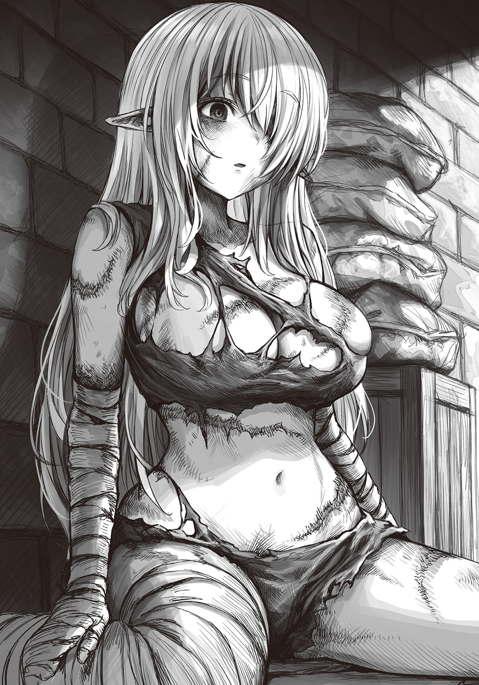

カエリタイ
――――帰りたい
オウチ ニ カエリタイ
――――帰りたいよぉ
オウチ カエリタイ
――――痛いよぉ……苦しい、よぉ
カエリタイ カエリタイ カエリタイ カエリタイ
――――指も腕も足も目も口も胸も背中もあぁもうなにもかも
オウチ……
――――痛くて痛くて痛くて痛くて痛くて痛くて痛くて……っ
ワタシ ノ オウチ
――――もう、いやだよぉ……
ドコ？
――――ここはどこなの
オウチ ドコ？
――――真っ暗で、なにも見えない
カエ リ タイ
――――帰りたいよぉ
オウチ
――――おうちに帰りたいよぉ
ワタシ……ノ オウチ
――――でも
オウチ……
――――でも、もう。なにも、見たくない
オウチ ニ カエリタ イ……
――――もうなにも、思い出したくないの…………
＊＊＊
山一つ離れた街への買い出しの帰りは、毎回大荷物だ。
（さて。今日はどこから回るか――）
事前に書き出しておいたリストを見つめながら、通りを歩いていたときだった。
「お。薬売りさんじゃないか」
そう声をかけてきたのは、質屋の主人だった。以前、たまたま店の前を通りかかったときに、腰を
「どうかしましたか。また腰の調子でも」
「いや、そうじゃなくてね。ちょうど良いところに来てくれたよ」
ちょいちょいと手招きをされ、店内に入る。幸い、街に来たばかりでまだ荷は軽い。主人は私が店に足を踏み入れたのを確認すると、そのまま奥へと入っていった。
「用件はなんでしょう」
「いやー、あんたならアレを活用してくれそうだからね。ちょっとこっちに来てくれ」
店の奥は、商品倉庫のようだった。
そして。
「……っ」
そこにあったもの――いや。いる人を見て、思わず絶句する。
金色の髪。
それは、エルフの娘だった。
エルフは森に生きる長命種族であり、縄張り意識の強さから
そもそも、八十年前に起きた戦争をきっかけに大陸に住む五種族は互いに
質屋の主人も、大した
「散々、
どう、いる？
軽い調子で
目の前のエルフは、少し見ただけでも
「……ちょっと失礼」
そっと目の前に

包帯の上からそっと触れる。通常の肌ではあり得ない――ぐにゅりとした感触。おそらく包帯の下は、
全身に、ミミズ
指で、乾いた唇をそっと押し開く。口内を確認すると、ぽかりと赤黒い穴ばかりで、奥歯以外の歯が失われていた。
更に分かることと言えば――今こうして照らしている間も光への眼球反応はなく、視力も失っているのだろう。そもそも、左眼球にいたっては物理的に消失し、暗く膿んだ穴があるのみだ。
白い頰には、鋭い刃で傷つけられたような、大きな切り傷。それ以外にも顔のいたるところや細い首筋に、青黒い
なんて、
「もしもし……聴こえるかな？」
驚かせないよう、できるだけ声を柔らかくして話しかけると、
（酷いな……）
外面がこれだけの傷を負っていて、内臓だけが無事ということもあるまい。もし私が処置や保護をしなければ、この
（……ん？）
ほんの
「オウ……チ……オウチ。カエ……タイ……」
――おうちに帰りたい。
「……ッ」
店主と。そして目の前の娘がいなければ、壁を殴っていたかもしれない。それくらいの怒りが、腹の奥からぐっとせり上がってきた。
おそらくこの娘はいたずらに傷つけられた上に、エルフの身体を素材とした万能薬作成の被験者にされたのであろう。彼女の欠けた身体が、それを物語っている。そんなデタラメな噂話のために、「家に帰りたい」というささやかな願いを何度踏みにじられたのか。
「で、どう？
店主の口調は軽かった。この店主はおそらく良心から薬売りである私に声をかけたのだろう。――
以前、世話をした礼のつもりなのかもしれない。この主人が特別に冷酷なわけではない――イルダ人の多くにとって、エルフや
この
――吐き気がする。
「引き取ります」
私ははっきりと答えた。
「ちょうど薬に必要な部位は無事そうなので。手数料も多めに払うので、ご内密にお願いします」
店主はあくまで「薬の材料」として彼女を扱っている。ならば、表向きだけでもそれにのるのが彼女のためでもあった。いらない
「いやぁ良い取引ができて助かったよ。奴隷屋はキライだし、ウチで死なれてもねぇ」
約束通り、手数料を多めに払ったからか、店主はべらべらと調子良く
無駄話に付き合う余裕はなかった。できるだけ、処置を急ぎたい。
私は――彼女を、助けたかった。
私と同じイルダ人に傷つけられた彼女。差別というなくならない悪習により、帰ることすらできなくなった彼女を助ける。身に着けた、
それが私にできる精一杯のことであり――一種の罪滅ぼしになるような、そんな気がした。
「あんた、山向こうから来てるんだろ。街道通って帰るなら、馬車を呼ぶかい」
「あ、いえ。清潔な布を数枚、ベルトや
途端、店主は「ハァ!?」と
「背負子ってあんた……ソレ、背負って帰る気か！」
「えぇ。先を急ぐので」
驚きこそすれ、店主はすぐに言ったものを用意してくれた。「返すのはいつでもいいよ」と言ってくれさえする。礼を言いつつ、手早く準備を進めていく。
背負子はあくまで荷物を運ぶための道具だ。彼女の身体に負担がかからないよう、座面と背もたれとなる背面に柔らかな布を敷く。これで多少、衝撃が
「ちょっと、失礼しますね」
そうエルフの娘に声をかけて、街へ向かう最中に着ていた厚手のローブを上から羽織らせた。丈夫なことが取り柄のごつりと固い
「ウ……」
「身体を、落ちないよう固定しますから。怖いことはしないですからね」
彼女がどこまでこちらの言葉を理解しているか――分からなくとも、言葉はできるだけかけながら作業は行った。反応は、ない。
（この状況を……どう、認識しているんだろうか）
目が見えない彼女にとって、身体に触れられることは恐怖に繫がりかねない。しかし実際には、表情は一切変わらず、そこに恐れも
（そうか）
力加減に気を配りつつ、固定用の布を結びながら、私は歯嚙みした。奥歯が、ぎりっと嫌な音を立てる。
（この
質屋を出た後は、買い出しは最小限で済ませた。頼まれたお遣い品は買えなかったが、仕方がない。馴染みには後で謝るとして、今はとにかく急ぐ必要があった。
本来なら、集落と街への行き来には山を
自分の足なら、山を直接越えてしまった方が早い――そう判断し、私は彼女を背負ったまま、山を登り始めた。幸い、魔物に出くわす心配も少ない山だ。
「多少揺れるかもしれませんが、もう少しの
背中越しに声をかけるが、もちろん返事はない。ただ、ブツブツと小さな呟きだけは続いている。私は背負子の肩紐を締め直し、山道を歩きだした。
なだらかな
街を出たのは昼過ぎだったので、今日中に工房まで帰るのは厳しいだろう。急いではいるが、無理をすべきではない。
背中の彼女の身体に負担をかけないためにも、休憩は必要だった。ずっと背負子に縛りつけられたままでは、
（――そろそろ、日が沈んできたな）
そう気がついたのは、山頂付近まで来たときだった。周囲の景色が朱色に染まり、遠くの空から暗くなっていく。
（ここまで来たら、朝に出れば昼前には帰れるか）
大荷物を背負いながら、夜間の足元が危ういときに進むのは事故のもとだ。やや開けた場所を見つけると、わたしはそこに背負子を降ろした。
「布、外しますね」
今日何度目かになる声かけをして、固定を解く。立つことのできない彼女をそっと抱き上げると、エルフの特徴である骨格の華奢さも
「ン……アァ……カエ、ル……」
「今日は、ここで休みましょうね。今、食事を作るので。ここでちょっと待っていてください」
太い木の根元に座らせると、彼女は変わらずぼんやりと表情なくそこにいた。それでも、質屋の倉庫にいたときよりずっと、
（エルフは古来、深い森に暮らすというし……そのせいかな）
鍋をぐるぐると搔き混ぜながら、
鍋と共に事前に荷物に入れておいた米、芋、卵、それに街で買い足した塩と香料を加え、煮込んでいく。
くつくつと煮ていると、娘の鼻がすんと鳴った。匂いは感じているのかもしれない。身体つきを見る限り、今のところ栄養状態が極端に悪いようにも感じない。飢餓状態にいきなり栄養を送り込むと、かえって危険なこともあるため、その点では安心して食べさせられる。
「食事です。ゆっくり食べて大丈夫ですからね」
皿に入れた粥もどきを、
「フ……っう」
「大丈夫ですか？ まだ熱かったですか」
エルフの娘の目が、涙ぐむ。冷ますのが足りなかったか？ ――ただ、口はもぐもぐと動いて、飲み込むこともできたようだった。様子を
「……
もちろん、返事はない。しかし、娘が粥を食べる動きが止まることはなかった。しっかり食事をしてくれる。これは、娘に会って初めて感じた喜ばしさだ。ただ、内臓――特に消化器官に不安はまだあるため、一旦は様子見だ。
「今日は、このくらいにしておきましょうね」
皿の半分ほどによそった皿が
早く処置をしなければ――その不安が的中したのを知ったのは、夜のことだった。
日がすっかりと落ち、暗闇に包まれた森の中で、娘は
「ア……アァぁ……っ」
（熱か）
それも、かなりの高熱だ。熱そのものが身体に致命的なダメージを与えることは少ないが、少なくともただでさえ弱っている娘の身体に疲労が蓄積することになる。なにより熱が上がる原因――なにかしらの異常事態が起こっているという
（疲労そのものが原因か……それとも、これだけの傷だ。炎症を起こしてるのか、雑菌による感染症が臓器に回っている可能性も……）
観察しながら、ギリッと歯嚙みする。
（最悪……手足を切断するほかないかもしれない）
彼女の負った損傷の中で、一番の重症部位は四肢の壊疽だ。もし感染症が起こっていたとして、その原因となっている可能性は捨てきれない。
「とにかく、対処療法でもやるしかない」
（蜂蜜を多めに混ぜるか……それと塩も）
塩気が蜂蜜の甘みを多少引き立ててくれることを期待し、
「ンン……ぅふ、ウ……」
「すみません、辛いでしょうがこれを飲んでください」
そう、彼女の上半身を支えて起こす。触れた背中は熱く、じっとりとしている。そっと口元に匙を近づけると、粥のときと同様飲み込んでくれた。甘みをつけたとはいえ、あまり味わうものでもない。
「ン、グ」
「大丈夫ですよ。ゆっくり……ゆっくり」
（これで、少しはマシになると良いんだが）
薬を飲み終えた彼女に、更に水分を与えてそっと横たえる。汗を
「オウチ……ハ、ドコ……？」
「……きっと、帰れますよ。そのためにも、ゆっくり休んでください」
以前、馴染みが熱を出した自分の娘の
エルフの娘は、しばらくそのままうなされていたが疲れ果てたのか、やがて眠ってしまった。
（「きっと帰れますよ」だなんて）
無責任な言葉だったかもしれない。だが、帰してあげたい――
彼女を家から離し、こんな目に
彼女を傷つけたのは、そんな中でも特に悪質な、他種族を人と思わないような誰かだ。
「人を、人と思わない……か」
ずんと、足元が重くなる。陰から
「――っ」
パチリと、火が爆ぜる音でハッとする。
周囲からは時折、遠くを通りかかる獣が立てる
「夢か……」
目尻を押さえて、一つ息をつく。多少、疲れているのかもしれない。だが、明日からの処置についても考えなければ。
娘を見ると、呼吸が穏やかなことに気がついた。そっと額に触れれば、熱も引いている。頰に張り付いた髪を、指先でどけてやる。その頰の柔らかさに、何故だか一瞬胸が絞られたような気持ちになった。
（薬……効いたのかな）
良かった。もちろん、先程の薬で根治に繫がるわけもないから、工房でもっと本格的な治療や見立てが必要にはなってくる。おそらく、それは長期に渡るだろう。
それでも。
（そうだ。帰さないと……この娘を、家族のもとに）
家から引き離され、他種族から物のように
「ン……」
小さく、少女が寝言をこぼす。もう一度その額を撫で、汗の残る部分をそっと布で拭うと、私は横になった。
目をつぶると、暗闇が目の前に降りてくる。その、更に深い闇がまた身体に
時間にして、三時間ほどか。近くに止まった鳥の声で目を覚ますと、空の
「夜明けか……」
今朝は昨晩の粥の残りを食べたら、すぐに出発するつもりだ。ふと隣を見ると、エルフの娘はうっすら目を開けていた。視力のない目でなにを見るでもなく、ただ開き、たまにゆっくりと瞬きを繰り返す。
「おはようございます。身体を起こしますね」
ゆっくりと身体を木によりかからせる。昨晩下がった熱は、そのまま上がっていないようだ。ひとまず、ほっとする。
「お
「……」
もちろん、返事はない。分かってはいたが、今後治療を進めていくためにも、なにかしら反応を引き出すきっかけがないものか。
「た、体調はどうですか？」
「……」
無理もないが、にべもない。
どうしたものかと、腕を組む。
この娘の願い。「家に帰る」――それを
もちろん、現状を見るだけでも前の通りに戻すのは難しいと感じる。知り合いの医者にも連絡を取らなければ。やるべきことは多い。きっと長い期間、かなりの手をかけなければならなくなるだろう。
（それでも）
私は一つ深呼吸をし、改めて娘に向き合った。なにも
「……キミは今、深く傷ついている。身体はもちろん、心の深いところまで。キミが元々、どんな
それは苦肉の策ではあった。家も尊厳も奪われた彼女から、名前まで奪ってしまうような。そんな後ろめたさがなかったわけではない。
それでも、長期の関わりが予想されるのであれば、一定の呼び名は必要だったし、もしかしたら、それが彼女にとってなにかしらの刺激になるかもしれない。
（私がこの
包帯を巻いた手を、そっと取る。ぐちりと膿んだ、傷だらけの小柄な手。
なにも感じていないかもしれない。なにも見えていないかもしれない。もしかしたら、こちらの言うことなど聞こえていないのかもしれない。
それでも。
「
――風が、目の前の娘の髪を撫でていく。
渾名をつけたからといって、彼女に聞こえているのかは分からない。本当の名前を知れるほどに回復させられるのか……それだって実際のところ未知数だ。
それでも、約束をしたからには投げ出さない。わずかでも、一つ一つ――目指していくしかない。共に。
彼女が、その顔に微笑みを浮かべられるような。そんな日々を目指して。
「……オウチ……カエ……リ、タイ……」
「――えぇ。ごはんを食べたら、行きましょう」
繰り返されるうわ言に頷き、ゆっくり、手を放す。気のせいかもしれないけれど――手が離れるほんの一瞬、指先が軽く握り返されたような、そんな気配を感じた。
消えてしまっていた焚き火をつけ、粥を温める。工房のある集落まで、あと半日。彼女にした約束を果たすまでは、どれくらいの日数が必要となるだろうか。今後すべきことを頭の中で改めてリストアップしながら、くつくつと音を立て始める鍋を搔き混ぜる。
「――できましたよ、リズレさん。ごはんにしましょう」
見えない彼女に、そう笑いかける。
私とリズレの戦いの日々は、こうして始まった。
「着きましたよ、リズレさん。ここが、今日から住む場所ですよ」
村と呼ぶには小さな集落。そこの一角に、薬を取り扱う工房を営んでいる。住人は少ないが、街から街へと移動する行商人が立ち寄って、商品である薬を取り扱ってくれることが多い。そのため一人で暮らす分には困らない程度の収入はあるし、特に使い道もないためそこそこの蓄えもある。
「ン……アー……オウチ……」
「そう、新しいおうちです。まずはお風呂にしましょうか」
虐待状況にあったと思われるリズレの衛生状態の悪さは、明らかだった。四肢を
工房には
「――あ」
ふと、あることに気がついてしまった。街で買い出しをした際、あまりに急いでいたため、リズレの新しい服を買い忘れていた。今着ている私のローブの下は、ほとんど布切れ同然なものだし……。
「ちょっとだけ出てくるので、少し待っていてくださいね。リズレさん」
話しかけたところで相変わらず反応はないが、今は問題ない。私は庭に生えているニンジンや薬草、それから昨晩山で作った
戸を叩くと、すぐに中から「はーい！」と高く明るい声が聞こえてきた。
「薬屋です。ちょっとお願いが……」
「あ、薬のオジさんだっ」
扉越しに声をかけると、トタトタと軽やかな足音が近づいてきて扉が開いた。この家の少女、モネだ。母親ゆずりの長い黒髪を
「オジさん、頼んだお菓子買ってきてくれた!?」
「いや、すまない。実は急用ができてしまって――」
腰よりも低い位置にある彼女の視線に合わせるため
「先生は街まで仕事で行ってるんだから、わがまま言っちゃダメだって言ってるだろう？」
「だってー、街のお菓子なんてなかなか食べられないんだもん」
奥から出てきたのは、モネの母親であり、私にとっては馴染みの「ご近所さん」でもあるアネだった。ぷっくり
「悪いね、疲れてるときに」
「いや。実は、私の方こそ頼みがあって」
そう、カゴを差し出すと「頼み？」と口元に笑みを浮かべたままアネが首を
「珍しいね、先生がわたしに頼みごとなんて」
ナニコレ～と手を伸ばすモネを軽くいなすアネに、「実は」と細かいことは伏せつつ、事情を説明する。
「――なるほど。その新しい患者さんの服が必要なんだね」
「そうなんです。もちろん古着で構わないのですが、
「もちろん。ちょっと待ってな」
「これ。
「ありがとう、助かります」
頭を下げ、急いで家へと戻ると、リズレは家を出る前と変わらず椅子に座っていた。風呂の温度を確認すると、ちょうど良い。「お待たせしました」と、リズレを支えて浴室へと移動させる。
「身体を洗うのに、一度脱がさせてもらいますね」
声をかけてから貸していたローブを脱がせ、一度大判のタオルを首元で結んで前かけのようにする。洗体自体は、患者に対し必要な措置であるから仕方ないにせよ、できるだけ嫌な思いはさせたくはないからこその配慮だった。――が、
（それだけのことをされてきたのか）
ただでさえ
特に背面は、より深く肉が
彼女がどれだけ酷いことをされてきたのか――その一端を察してしまい、思わず顔をしかめる。
（クソ……ッ）
ダメだ冷静になれ。必要なことだけを考えろ。そう、この後に塗る傷薬のレシピとかが良い。
洗体を手早く終わらせ、身体を包むように
四肢の傷はその他と種類が違うようなため、先に包帯を巻くが、その間も込み上げてくる怒りで、手が震えた。いったいどんな奴がこんなことを……という怒りが抜けきらない。
身体を清潔にした後は、タオルに
（張り替えは三日ごとになるか……）
もくもくと作業していたのが良かったのか、怒りに高ぶっていた感情は落ち着きつつあった。ふと、気がつくと横たわったリズレが小さく寝息を立てていた。
「……こんなところで寝るなんて、この人にとって何日ぶりなんだろうな」
ようやく、人心地ついてくれたのかもしれない。だとしたら、少しだけ
（……いや、まだまだ。これからだ）
起こしてしまわぬよう、彼女の身体に毛布をかけて、一旦その場を離れる。向かったのは、台所だ。
ざっくりと食材を眺め、留守にしている間に固くなってしまったパンと、先程収穫したニンジン、街で買ったスパイス、それから少量の保存用のベーコンを細かく刻み、スープで煮込んだ。溶いた卵を更に流し込めば、栄養としては充分だ。火の通ったベーコンの
それを皿に移し替えて部屋に持っていくと、リズレは短い眠りから覚めたようだった。最近は肌寒さを感じる季節になってきた。身体が弱っているところに風邪をひかせてしまっては大変だ。
「今、服を着ましょうね」
「ンー……」
身体を起こし、アネから譲ってもらった服を着せていく。フリルのついた前留めのブラウスは、服を着せたままでも処置がしやすくありがたい。その上に着せるベストは胸の前で紐により締め付け具合を調節できるため、確かに便利だ。布地が柔らかく、さらりとした手触りで、私が街から
「ん？ これは……」
服と一緒に、女性用の
清潔にし、身なりを整えると、ここへ来るまでに比べてだいぶ見違えた。こうして見ると、彼女が人間で言えば
「良かった……っふ。食事も用意したので、どうぞ」
「……ッ、ンンん」
「……？」
小さな
「寒いですか？ それともまた熱……ん？ ぁあッ」
言いかけたところでハッと気づく。
――彼女、この二日間全然トイレに行っていない。
（いやしかし、すごい忍耐力だな……）
もしかして長寿のエルフだからこそ代謝に人間との違いがあるのかもしれないが、それでも大したものと言うべきか。感情がない――そう思い込んでいたが、粗相をしてしまうことに対する
（そうか、喜怒哀楽はなくとも……生理的な部分に関する感性は働きやすいのかもしれないな）
だとしたら、いつまでも流動食では味気がないだろう。だが残っているのは奥歯のみ……やはり、入れ歯しか手立てがないか。もしそれで
無事、用を済ませた彼女を抱き上げ、寝台へと戻る。多少、自分の足取りが危うい気がした。リズレが重いのではない。むしろ腕の中の彼女より、自分の両の
（代謝といえば、なんだったか……急激な代謝による寿命の減少を対価として、肉体の物理的な回復を可能にする……あぁ、そうだ）
――ハイポーション。
それこそ、エルフの肉体を材料とした薬と同じく夢物語に近い
とさりとリズレを寝台に置く。途中で力が抜けて床に落としたりしなくて良かったと、心底ほっとする。――が、今度は足に力が入らない。
（ハイポーションの精製を目指す……か、アレならリズレさんの目や手足も……だが今の自分の設備や知識では……いや）
なにか、手が――。
手を伸ばす。思考を、意識を
だがそれすら夢だったのか――私の意識はそこで途切れた。
＊＊＊
気がつくと、空が
「眠ってたのか……」
寝た瞬間の記憶が全くない。驚くほどにない。昨日は三時間の仮眠しかとっておらず、山道を歩きどおしだったことを思えば、体力の限界だったということだろう。床で寝てしまったせいか、身体が
窓からの景色を見る限り、まだ日が昇り始めたばかりのようだが――身体を起こしかけたところでリズレと間近で目が合い、ギョッとした。
「お……っ、おはようございます！」
まさか、患者の寝台の真横で寝落ちしてしまっていたとは。なんとなく申し訳ない気持ちになってしまう。
目が合った、といってもリズレにこちらの姿は見えておらず、早起きしたらしい彼女は所在なさげにそわそわと周囲を気にしている様子だった。
「ン……」
（まぁ、リズレさんにしてみれば、今がどういう状況なのかも把握しにくいだろうしな）
ただぼんやりとしていただけの昨日までに比べれば、良い兆候と言えるのかもしれない。そう観察していると、きゅるるっと小さな音が聞こえてきた。同時に、ぎゅるっと大きな音も、自分から。
「……」
「………」
ほんの一瞬。目すら合わないのに、なにかが通じ合ったような気さえした。思わずふっと噴き出し、立ち上がる。
「朝ごはんに、しましょうか」
思えば、二日続けて粥しか食べていないのだ。昨晩も思ったことだが、消化も早い分物足りなさがあるだろう。もちろん、味や食感に関しても。
そんなことを考えながら、畑に
――薬を作る上での素材の調達方法はいろいろあるが、私は栽培をメインにしている。昨日までのように留守をしているときは別として、畑の手入れは極力欠かしたくない。
（リズレさん、大丈夫かな）
新しく種を
香りと記憶は結びつきやすいと言う――それで故郷を思い出しているのか、突然彼女の右目からぽろぽろと涙がこぼれた。庭は静かで、そのすすり泣く声がここまでよく聞こえてくる。
「ヒ……ッ……い、ウゥゥ……っふ、オウ、チぃ……ッ」
（――どうしたものかな）
その涙の理由の本当のところなど、こちらに知るすべはないが――肉体的な傷はともかく、奥底まで抉られてしまった心の傷を
どんなに親身に接しようと――私は
「くっ」
鍬を畑に叩き下ろす。
せめて私にできることを。これ以上彼女が傷つかなくて良い方法を。考えて、考え抜かなければ――。
「オジさーん、こんにちはーっ」
一仕事終えたところで、モネがやってきた。
「こんにちは。配達のお手伝いかい」
「んーん。今日はね……えへへ」
鍬を置き、店を開けながら話を聞くと、モネはもじもじと身体を揺らした。それから、リズレを見てパッと顔を輝かせる。
「わ……っ本当にいた！ 患者さんのおねぇちゃん」
どうやら、好奇心で遊びに来たようだ。苦笑しながら、「リズレさんだよ」と言うと「リズレちゃん！」とモネは素直に言い直した。
「オジさん、リズレちゃんとお話ししててもいい？」
「ん……？ あぁ、そうだね。構わないよ」
店の方も、そうそう混むようなことはないから、他の客に迷惑ということもない。それに、私以外の誰かと関わることは、リズレにとって良い刺激になるかもしれないという期待もあった。
私は店番をしながら、手持ちの資料を広げて今後のための書き付けをしていた。リズレの現状から、やりたいことはいくつかある。
（さて、付け焼き刃でどこまで役に立つか……まぁ、なにもしないよりはマシか）
「ねぇねぇオジさん、リズレちゃんはなんでお話ししないの？」
「うん？ ……そうだね。たぶん、お
こんな小さな子に、リズレが受けた仕打ちを話すわけにもいかず、そんなふうに答える。とはいえ、でたらめを言ったつもりもない。リズレの心に届くようななにかがあれば、もしかしたらという期待は持っている。
「オジさん、見て見てー！」
再度呼ばれて視線を向けると、モネが「ジャーン」とリズレを示していた。その頭には白詰草をはじめとする小さな花を束ねて作った可愛らしい冠が飾られている。見えなくともなにかあるのを感じるのか、リズレも目線だけ上に向けていた。
「器用だね。とてもきれいだ」
「ね、きれいでしょー！ リズレちゃんはねぇ、オジさんのおヨメさんなの」
「いやいや、患者さんですよ！ お
私の慌てぶりが面白かったのか、モネはけらけら笑いながら「オジさんもきれいって言ったもーん」と走っていってしまった。
「またね！ リズレちゃんっ」
悪びれずに手を振る少女に、私はリズレに代わって力なく手を振り返した。
「花冠の話をしただけなのに……」
そう
「……リズレさんがこれを見ることができたら、どんな顔をするのかな」
リズレの傷ついた心を癒すのは、きっとこういうできごとの積み重ねなんだろうなと思うと、この花冠を見てもらえないのがひたすら残念でたまらない。
（そもそも、光に反応しないほどに視力が落ちているというのはどういう原因か……心因性かもしれないし、それとも）
なんにせよ、一朝一夕ではいかないのが治療というものだ。回復には時間がかかる。私は医者ではないものの、簡単な診察をしながら治療やケアを進めていく。身体の清潔保持に、薬の塗り直しと湿布の交換、消化に良い食事、充分な睡眠。リズレさんは自力で動くことが難しいため、血行促進のためのマッサージや寝ている間の体位の転換なども心掛けるようにした。手製の聴診器で心音を確認すると、やけに音が小さく
効果のほどは分からないが、点眼薬も一日数回投与することにした。そして――一番大がかりとなったのは、入れ歯の作成だ。
文献を頼りに、
「――お疲れ様でした。ひとまず、これで使ってみましょうか」
「ア……う」
つるりとした、白い歯。奥歯しかなかった彼女に上下の歯がそろうと、また一段見違えたような気がした。だが歯ができたことで、見た目以上に彼女に与えてあげられるものがある。
「リズレさん、今夜は歯ができたお祝いですよ」
そう、私が用意したのは、牛飼いから分けてもらった肉を使ったステーキだった。柔らかい部位を酒に漬け、切れ目も細かく入れて焼いたため、ふつうのステーキよりも嚙み切りやすくなっている。ここ数日の食事の様子を見ていて、消化機能に問題はなさそうと判断し、出すことにした。なにより、味気ない粥以外のものを、リズレに食べさせてあげたかった。
「いただきましょう。――リズレさん」
小さめに切った肉に、フォークがすっと刺さる。同時に、軽く
口に含んだ途端――リズレの目が、パッと大きく見開かれた。心なし、頰も赤くなっている。
「どう……ですか？」
「ン……ンッ」
初めて食べさせるものだったので、やや心配もあったが――どうやら
「ンー……あ……」
「大丈夫、まだありますよ。久しぶりの固形物なので、ゆっくり食べましょう」
また一口差し出し、食べる。リズレの大きな目の端に、うっすらと涙が浮かんだ。――私にとっても久しぶりのご馳走だが、リズレにとってはいったいいつぶりになるのだろうか。
（歯も今のところ馴染んでいるようだし……良かった）
また一口、ステーキを差し出す。リズレは待ちかねていたように、また一口ぱくりと頰張った。
五感の刺激――それも、生理的欲求と結びつくものというのは、やはり大きいものなのかもしれない。その日を境に、リズレはゆっくりとではあるけれど、感応性を取り戻している様子だった。毎日のように顔を出すモネの声にも、ほんのり笑みを浮かべるような表情を見せる。
（これは……もしかしたら、思ったより早く会話ができるようになるかもな）
またねと手を振るモネに、鼻をすんすんと鳴らして
手足の壊死が、進んでいる。
その進行度合いは本当にわずかずつで、包帯を毎日巻き直していても最初は気がつかないくらいだった。じくりと変色した患部。それがじわじわと、リズレの身体を
（ふつうの壊死にしては、進行が遅すぎる……なにか。なにか、あるのか）
やはり、切断するしかないのか、それとも別の道が残されていないか――現状機能していないとしても、やはり四肢の切断というのはかなり思いきった選択であり、一介の薬売りである私には、決断が難しかった。
――可能なら、手足をまた使えるようにしてあげたい。そんな、願いが確かにあった。
（やっぱり……あの人を頼るべきか）
頭に浮かぶのは、医者でもある
「さて……と」
軽く伸びをし、工房へと戻る。最近はリズレさんの食欲が、更に増してきたように感じる。嚙み心地も問題ないようで、一口のサイズも少しずつ大きくしていっている。
「リズレさん。街に行く前に作っておいたベーコンがあるので、それで今日はポトフでも――」
そう、部屋に入ったときだった。ドサッと大きな音がし、椅子からリズレが倒れ落ちた。
「リズレさん……？ リズレさんッ！」
慌てて駆け寄り、リズレの身体を支える。身体が、燃えるように熱い。
「アァぁァ……ヒ……ッぅうううハ……ッハ……っ」
苦しげなうめき声。
幸い、頭は打たなかったようだ。半ば混乱する頭で、容体を観察する。
（急にどうした？ 最近は、夜間に熱を出すこともなく体調も落ち着いているようだった……部屋を離れたのも、ほんの数分だ。その間に、これほど急変するほどのなにかがあったとは――）
ハッとする。
「胸元に、赤みが差している……」
更にリズレの身体は小さく震え、
この症状には、見覚えがある。
「これは……
黒曜グモは人里離れた洞窟を根城にする大型の魔物だ。図体の割に臆病な性格をしているが、獲物を捕らえるための毒は強力で、古来暗殺にも用いられる。
（だがなんで、それがリズレさんに……）
リズレを引き取ってから、もうそれなりの日数が
とすれば、やはり毒を盛られたのは私が引き取る前か。
（だが……質屋の主人はそんなタマじゃないだろ）
良くも悪くもふつうなあの主人の顔を思い出す。だとすれば――考えられる可能性は一つだけ。以前の……「主人」か。
胃洗浄用の炭粉と、排毒を促すルゥム、センナなどの薬草エキスをリズレに服用させる。毒の回りはじめなら、まだ手遅れではないかもしれない。この毒に特徴的な胸の赤みは、上半身の血管を
ややして、リズレが
「ウ……ぐぅぅ……ッ」
「リズレさん、大丈夫ですよ。リズレさん……！」
桶を口元に置くと、そこに胃液と一緒に大きな塊が出てきた。丸薬か――おそらく、これに毒が
（ただの丸薬にしては、頑丈すぎるな……
そもそも、こんな何日も経ってからようやく深部まで溶ける丸薬など異常だ。観察するうちに、表面になにか刻まれているのが分かった。
「古代語……に、これは、呪印か……？」
頭が、カッと熱くなる。手の中で、バキリと音を立てて木製の
なんだこれは。
目の前の異物からは、悪意しか感じられない。リズレの全身に
――どこか邪魔にならない場所に行って死んでおけ。
そんなメッセージ、なのか。これは。
ガギッと、自分の奥歯から変な音がした。ダメだ、冷静になれ。今は、そう――今は、苦しんでいるリズレの毒をなんとかしなければ。
「リズレちゃーん。……薬のオジさん？」
工房の戸口から、モネの声がした。いつものように遊びに来たのに、私たちの姿がないのを不審がっているのだろう。
「モネ、ちょうど良いところに来てくれた。お母さんを呼んできてくれないかっ」
部屋の中から声をかけると、
私が準備を進めている間に、アネがやってきた。リズレと会うのは初めてだったが、モネから話は聞いていたのだろう。
「この
「魔物の神経毒にやられたんです。解毒剤は作るしかないので、今からその材料の採取に向かいたいのですが……」
それだけ言うと、アネは納得したようだった。
「いいよ。それなら、わたしとモネとでリズレちゃんは
ふだん、女手一つで家庭を切り盛りしているためもあるのか、急な願いでもあるのに、アネもまた判断が速く、ありがたい。いや、これはもうこの親子の性格なのかもしれない。
「すみません、三日内には戻れると思うのですが……その間に服用させていただきたい抵抗薬などは、書きつけてあります。それから――」
一瞬、声が出なくなる。アネに渡すメモを持った手が震えているのに気づき、私は一度深呼吸をした。
「……万が一、私が帰る前に容態が急変し……亡くなられてしまった場合には、早めの埋葬手続きもお願いします……。私もなにがあるか分かりませんし、長期間ご遺体を放置するわけにはいかないので」
「うん、分かった」
アネは私の目を見つめながら、しっかりと頷いた。
「大丈夫。先生は、お役目に集中して。リズレちゃんのことは、わたしらがちゃんと看てる。リズレちゃんも、先生の帰りを待って頑張ってくれるよ。だから、こっちは任せておけ！」
「……ありがとうございます」
まとめた荷を背負い、リズレの頰に触れる。熱く、湿った頰。どれだけ辛いことだろう――だが、この熱があるうちは、リズレは生きていてくれている。
「必ず助けますから……待っていてください、リズレさん」
「ウ……ァァ……」
苦しげな彼女の
手を振り見送る二人に、軽く手を振り返し、私は工房を後にした。
（マンドラゴラの根に、属性転換の
解毒薬の材料は多いものの、だいたいの採取場所は見当がついていた。特に、黒曜グモの
（まさか……こんなことで、役に立つなんて）
洞窟の入り口を前に、思わず口元に皮肉な笑みが浮かぶ。マンドラゴラと
武器を手にするのは久しぶりだ。その割に、弓はすんなり
（昔取った
苦笑しながら、指に光を
（大丈夫だ……きっと、ここにいる）
水分を含んで、ぐちゃりとした足元。それでもできるだけ音を立てないよう、注意を払いながらしばらく進むと、なにもないはずの空間に、きらりと
魔法光をなにかが反射している――よく見れば、そこに細かな糸が張り巡らされているのが分かった。ネズミやコウモリの死骸が、張り付いている。
（いた……！）
黒曜グモの
私の肉の匂いに釣られてきたのか――やがて奥から、大きな影がゆっくりと現れた。黒曜グモだ。チキチキと、大きな
「悪いが……時間をかけるわけにはいかないんだ」
弓を引こうとすると、一瞬過去の自分が脳裏に浮かんだ。同じように弓を構えて、クモを
びくりと、腕が跳ねる。私の手を離れた矢は、クモを
「ピギィッ！」
案の定、黒曜グモが警戒音を出し、奥に引っ込もうとする。
「クソ……ッ」
毒づき、すぐさまもう一本の矢をつがえる。
（なにが昔取った杵柄だ――鍛錬もサボってたくせに、よくもまぁッ）
そうだ。昔の自分と、今の自分は違う。いや、直線上にあることは変わらないが――少なくとも今自分がこうしていることは、過去と向き合うためにも必要なことのはずだ。
帰りたいと泣くリズレの呟きが。花冠を乗せたリズレの姿が。食事を頰張るリズレの
「
呪文の発動と同時に、矢が細かに、素早く震える。放たれたそれは罠糸をかいくぐり、弧を描きながら遠ざかる黒曜グモの頭頂部に深々と突き刺さった。
「ギピィィィィィッ」
黒曜グモが大きな悲鳴を上げる。その間にも、
（――よし）
通常よりも威力の上がった矢は、クモの分厚い身体を
「昔……か」
呟き、頭を振る。今は過去の感傷に浸っている場合ではない。大切な約束を果たすためにも。
（今戻ります、リズレさん――！）
工房に戻ったのは、家を出た二日後だった。急いだおかげで、予定よりも早く帰ってくることができた。
「先生、お帰り。リズレちゃん、頑張ってるよ！」
留守の間、リズレを看病し続けてくれていたアネは、目の下に疲れを滲ませつつも、口調はしっかりしていた。その言葉に頷き、私は持って帰ってきた材料を急いで薬草の凝縮液と調合し、注射用の
「リズレさん……お待たせしました」
リズレの身体には血管が模様のように濃く浮き出て、息を切らしていた。それでも、アネとモネのおかげもあり、こうして生き延びてくれている。
「ウ……ぁ、うぅ……ッ」
「もう少し……すぐ、よくなりますよ」
上半身を支えた手のひらが熱い。震える細い肩口に、私はそっと針先を刺した。
＊＊＊
小窓から見える真っ暗な空を見つめながら、寝たくないな、と。そんなことをぼんやりと考えていた。
リズレの息の音が聞こえる。まだ、正常とは言い
注射を施してすぐ、アネとモネは帰っていった。礼なんていいよ、リズレちゃんも先生も無事で良かった。台所にスープとパンがあるから、それを食べて。先生も少しは寝ないと。また明日来るから。
そんなことを言われながら、二人を見送って。言われた通り豆と香草のスープにパンを浸しながら食べて、身体を拭いて、そして。
リズレの眠る寝台の横で、ずっとその横顔を見つめている。時折呻くので、そっと手を握った。胸の赤みが薄くなってきていることが、希望を与えてくれる。きっと、山場は越えた。
「大丈夫……大丈夫ですよ、リズレさん」
呟きながらまた、寝たくないと思う。
もちろん、リズレが心配だというのはある。それと同時に、今寝たらロクな夢を見ないだろうという気持ちが強かった。弓を握った手のひらを見つめる。その手のひらが赤く染まっている気がして、さっと顔を背けた。
（過去……か）
「なにを、そんなに怖がっているんですか？」
そう
「……怖がってなんて、ないですよ」
「でも、手が震えてます」
包帯を巻いた手が、そっと私の手に重なった。
「大丈夫ですよ、薬売りさん。わたしが、そばにいますから」
その言葉を聞いた途端、自分を思いきりぶん殴ってやりたくなった。夢の中とはいえ、なんて都合の良いことを患者に言わせているのか。まったく、自分に
「リズレさんこそ、安心してくださいね。きっと私が、
貴女は覚えていないかもしれないけれど。山の中であの日、私は確かに誓った。約束した。貴女を治すと。
「リズレさん。大丈夫、家にだって帰れますよ。だから」
重ねられた手を、ゆっくりと握り返す。
「だからリズレさん。安心して……目を覚ましてくださいね。私が、それまでずっとそばにいますよ」
リズレがにっこりと微笑む。夢だとは分かっていた。それでも、何故だか無性に泣きたいような、胸が詰まるような気持ちが
「見て、薬売りさん。光が差してきましたよ」
嬉しそうに、
「ひか……り？」
ふっと目が覚めたとき。その声を最初、自分の寝言かと錯覚した。が、すぐに勘違いだと気づく。少し
「リズレさん……？」
寝台に背を向けて眠っていたのを、振り返る。
夜明けの光が差し込む中。翡翠色の目が、こちらを向いていた。その唇が、小さく動く。
「ア……わた……し」
「リズレさん、目を覚まして……いや、目が。あ、それに」
――話も。
あまりに突然、変化が起こりすぎてどれから対応したものか分からない。
「えぇっと……とりあえず、診察させていただいても？」
おそるおそる
身体を支えると、熱はもうすっかり下がったようだった。胸の赤みもなくなっている。毒の影響は脱したようだ――それを確認してほっとすると同時に、強い驚きもあった。
これまでは、介助をしてもリズレはされるがままだった。それこそ、人形のように。それが、今は上半身を起こしてやろうとすると、自分で身体を支えようとする筋肉の動きが、わずかだが感じられた。
（会話ができるということは、外界からの刺激に反応できるということだから、当然と言えば当然だが……）
元々、感応性に関しては変化が出始めていた。それがより
「光に対する瞳孔反応もある……私の顔や手は、見えますか？」
目の前で手のひらをヒラヒラさせながら問いかけると、リズレは微かに首を横に振った。
「でも……そこに、いる……のは。分かり……ます」
つまり、はっきりと視力が戻ったわけではないにせよ、光を感じる機能は戻ってきたらしい。
解毒薬の材料であるマンドラゴラには、活性作用がある。それに加え、
ふと、リズレの頰が私の手にそっと触れた。その目に、涙が浮かんでくる。
「リズレさん大丈夫ですか？ どこか痛みは……」
ふるふるとまた、リズレさんが首を振る。それから、小さな声で訊ねてきた。
「……
「あ――はい。すみません、名前が分からず勝手に
「なまえ……」
呟いたリズレは、しかし再度首を左右に振った。
「お、ぼえて……ない、です。なにも」
「そう、ですか」
逆行性健忘――いわゆる、記憶喪失か。
理由は分からないが……逆にいくらでも理由になりそうなことは思いつく。それだけの想いを、彼女はしてきたのだから。
（けどそうなると……今後、家に帰るためにはどうしたら）
エルフの
（リズレさんをいずれ帰すためにも、なにか方法は……）
「――あ……あの」
聞こえてきた声に、ハッと顔を上げる。リズレは、こちらをじっと見つめていた。こう言ったら失礼かもしれないが、なんだかまだ慣れず、不思議な感じだ。
彼女はふわりと微笑むと、ほろりとまた涙をこぼした。
「たすけ、て……くださっ……あ……ありがと……ございます」
たどたどしい。けれど、確かに心が伝わってくる。そんな、言葉だった。
「いいえ……いいえ、リズレさん。これからですよ」
そうだ。
悲観的になってどうする。少なくとも今、リズレは回復に向けて大きな一歩を踏み出したんだ。
「大丈夫です。きっと私が、貴女を治してみせますから」
気がつけば、夢の中と同じような
まるで、自分に言い聞かせるように。
それにリズレはまたほんの少し微笑んで、こっくりと頷いてみせたのだった。
「いやー先生！ この前はありがとう。おかげでホラ、
そう、早朝から近所の農家の方が家を訪ねてきた。腕に
「そうだな……カボチャのシチューになんかしたら、たくさん食べられるかな」
「先生は少し休んで」
農家の方と入れ替わるようにやってきたアネとモネが、立ち上がりかけた私をぐいっと椅子に引き戻す。リズレと私の様子を気にかけて、顔を出してくれたらしい。
「先生ねぇ、自分じゃ気づいてないかもしんないけど、目の下のクマがヤバいよ」
「そーだよ、クマさんだよっ」
アネの言葉にのっかるように、モネが「がおー」と身振りでクマの真似をする。そんなに
「せっかくリズレちゃんが目を覚ましたっていうのに、今度は先生が倒れたんじゃどうしようもないだろ。いいから、ここは任せておきな」
「……ありがとうございます。じゃあ、お言葉に甘えて」
苦笑気味に
「リズレちゃん、甘いものは好きかい？」
「は……い。あまい……すき、です」
「良かった。じゃあ回復祝いに、カボチャケーキにしようかな」
「やったぁケーキだ！」
きゃっきゃと楽しそうな女性陣を眺めながら、一口茶をすする。ほうっと、また少し肩から力が抜けた。
アネやモネも、二日間つきっきりでリズレを
（一旦、記憶喪失は様子見としておくか……）
もちろん、いつかは考えないといけない問題だろうが――少なくとも今は、この回復兆候に合わせて身体のケアに注力していく。
（そういえば……手紙はもうそろそろ届いたはずだが）
――どれくらい、ぼんやりしていたのだろうか。
外からトントンと軽い音が聞こえてきたのにハッとして、窓を見る。使い
それを手に取って部屋に戻ると、「どうしたんだい」と焼けたケーキを手にアネが
「
「へぇ。こんな
でもまずは座って、と
「さぁ、みんなで食べようか」
「あたし、リズレちゃんに食べさせてあげるっ」
いただきます、と声をそろえてから、モネが張りきってリズレのケーキを一口大に切り、フォークに刺した。「ありがとう、ございます」とそれを口にした途端、パッとリズレの表情が輝く。
「おいしい？」
「はい……ッ。あまくて……とても、おいしーです……！」
「ははっ。そんな顔をしてもらっちゃ、作ったかいがあるね」
三人の笑い声を聞きながら、こんな
一口ケーキを頰張ると、なめらかな
＊＊＊
『エルフの身体を
友人からの手紙には、ざっくりとそのようなことが書いてあった。全く口の悪いひとだが、診てもらえるならそれに越したことはない。
「なんだ、また出かけるのかい。忙しいねぇ」
食後のお茶とお
「はい。腕の良い医者ですし、リズレさんの手足の状態を思えば早めに診せた方が良いと思いまして。北へ離れた場所なので、着くまでにいくらか時間もかかりますし」
「へぇ。北ってことは、もう防寒具が必要なんじゃないかい？ うちに冬の間に着る用のが――」
「あ、いえ。今回は大丈夫です。ありがとうございます」
アネの申し出を
「でも、今着てる服じゃリズレちゃんだって寒いだろう？」
「問題ありません」
あらかじめ考えていたことであるので、私はハッキリとそう頷いた。
「防寒具なら、私の予備があるので」
「――あ、あの……ちょと……あつい、です……」
そう、たどたどしく言うリズレの姿を見て、思わずショックを受ける。私が昔着ていた防寒具を着たリズレは、なんというか……ひどくブカブカで、簡単に言うと全くサイズが合っていなかった。
「問題大ありだろ」
「でしょー」
アネとモネの冷たい視線に
「年季は入っていますが
「そこじゃないだろ。先生が倹約家なのは知ってるけど、リズレちゃんを巻き込むんじゃないよ」
「はい……反省しています」
あまりにも当然すぎる指摘に、思わず膝をつく。
「反省ついでに、街で服を見繕ってあげな」
「わ……たし、は。えっと……これ、でも」
「わーっ、リズレちゃんに似合う可愛いお洋服を選んでね、先生！」
おずおずと
街への買い出しは、一人で向かった。リズレの姿は目立つし、なにより
最初に向かったのは、
「あんたか！ どう？ あのエルフは。薬に使えた？」
相変わらず無邪気な言葉に、「いえ、ちょっと」と首を左右に振る。
「残念ながら……他の
主人は頷くと、「まぁ無駄になんないのが一番さ」などと言って笑った。
私は
「さて……大仕事はこれから、か」
呟き、覚悟を決める。ふっと強く
店に足を踏み入れた途端、周囲の空気がぴしりと音を立てて凍りついた気が、確かにした。
女性向けの店ということは、客も店員もほとんど女性しかいない中。身体の大きな男がそこへ入り込んでくるのは、かなり違和感があるようで、女性たちの警戒心を肌で感じる。もっと言うと、いかにも
「あ……あのぉ……すみません、サイズの見方とかよく分からなくてですね……」
「はぁ……失礼ですが、お客様がご使用になるのですか？」
「あ、いえ。私ではなく、その……い、妹が使うので」
視線に耐えきれず、
素直に、自分は医療従事者で、入院患者用の備品として購入したいと説明すれば良かったと思い至ったのは、逃げるように店を出てからであった。
＊＊＊
北に向けて出発する朝は、やけに冷え込んだ。おかげで、上着を羽織って出かけるのにちょうど良いくらいだ。
「あの……」
背中から、おずおずとした声が聞こえた。少し恥ずかしそうに、小さく。
「その。おもくて、ごめんなさい……」
「ふだんは、薬の材料を大量に背負って
歩きながら答える私の背中には、背負子に座るリズレがいた。
落ちないよう、ベルトで固定している。前回の背負子よりも座り心地が良さそうな、奥行きの深いものを選んだため、座っていても疲れにくいとは思うが、休み休み行こう。
アネに新しい服を着せてもらったリズレは、白い上着がよく似合っていた。手触りもなめらかなその上着は、しっくりと身体に馴染んでいる様子だ。ファーたっぷりのモフッとしたフードはいかにも暖かそうで、モネは「可愛い可愛い！」と出発
「半日ほどこのまま行き、森を抜ける予定です。
「ぽーたる……ですか？」
「はい。そこを利用すれば、北方にある街まで一瞬で転移できます」
わかりました、と声が返ってきたのを確認し、それから「もう一つ」と付け加える。
「リズレさんの首には、今飾りがついています。それはリズレさん自身の
「は、い」
前回よりも座り心地の良い背負子を準備したとはいえ、やはり同じ体勢で長時間過ごすのも、ベルトで固定され続けるのも、まだ毒から回復したばかりのリズレの身体に大きな負担となるだろう。途中途中、休憩を入れながら慎重に進んでいく。
リズレの重さなど大したものではない――それは事実だったが、一緒に持ってきた用心のための備品が多く、そちらは歩き続ける私の身体に重くのしかかってきた。リュックの固い
「――今日はここで野宿にしましょう」
結局、半日では
以前の野宿で作った
（そういえば……リズレさんが毒から回復してからここまで、ゆっくり話しをする余裕もなかったな）
話すべきことは、たくさんあるように思えるのだが、たくさんありすぎるせいか言葉が
「おなまえを……きいても？」
「あ……えっと私の、ですか」
リズレがこくりと頷く。名前――確かに、薬師と患者とはいえ、寝食を共にしている仲なのだから、呼び名がないというのは不便だろう。自分もリズレに
（名前……）
「……私のことは、薬売りと。そう呼んでいただければ」
言いながら、少し苦しいかなと思う。リズレにしてみれば、記憶喪失でもない私が本名を告げないのは疑問しかないだろう。
しかし、彼女は嬉しそうにニッコリと微笑んだ。
「ハイ……よろしく、おねが……いします。くすり……うり、さん」
「――はい。こちらこそ」
笑みを返しながら、心の底で
（そうだ……リズレさんが、そんな深く知る必要なんてない）
私についてなど。
どうせ――治療を終え、家へと帰れるようになるまでの。そういう限られた期間の関係でしかないのだ。
（知る必要なんて……）
そのときだった。ふっと威圧感を感じ暗闇を振り返ったのと、後ろからガサリと音がしたのは同時だった。
「――っ!?」
慌てて立ち上がり、リズレを背後に
「グルルルル……ッ」
「
ただでさえ危険な野生動物だが、出会ってしまった時期も悪い。冬眠前は、他の時期に比べても
（一人なら、ここから移動して対処もできるが……）
ちらりと、背中に庇っているリズレを見る。リズレは長い耳をぴくりとさせながら、驚いて固まっている様子だった。――彼女を抱えて逃げるとなると、巨灰熊の俊敏さの前には少し厳しい。
仕方ない。
スープに入れる肉を切ったときに使った手元のナイフを、そっと引き抜く。
熊の弱点はおおよそ決まっている。逆に言うと、それ以外の部分は異様に硬い骨に守られ致命傷に成りにくい。また、身体を
『――！』
唐突に。耳を、澄んだ響きが撫でた。
思わず、踏み出しかけた足が止まる。
鳥の
「これは……リズレさんっ？」
振り返ると、座っているリズレが音を出していた。翡翠色の瞳は、月明かりの下で淡く輝いている。
「ぐ……る、る」
熊が
ふっと――その声がやんだ。熊はもう息を和らげ、心なしか目元も穏やかだった。
「だい、じょ……ぶ、ですよ」
リズレはそう、熊に微笑みかけた。熊はじっと彼女を見つめると、やがて静かに身をひるがえし、ゆっくりと遠ざかっていく。
『森の民』――そんな単語が、頭に浮かんだ。
「動物とお話し……できるのですか？」
ナイフをおさめながら訊ねると、リズレは困ったように視線を傾けた。そもそも、リズレは熊の姿が見えてはいなかったはずだ。
「よく、わからな……です。でも、あのこ……おびえてて……それ、で」
「
確かに、いくらこの時期の巨灰熊が獰猛とはいえ、人間の声のする方へ自分から近づき、更には襲おうとするのはあまり多くはない。なにか、理由があるのだろうか。
「とにかく、助かりました。ありがとうございます」
そう目の前に膝をついて礼を言うと、リズレはくすぐったそうに微笑んだ。その様子は先程までの
＊＊＊
それから明け方までの間、巨灰熊のこともあり警戒しながら仮眠をとったが、特に問題は起こらなかった。逆に、静かすぎる――夜間の森の中ではふつう野生動物の動きを感じるものなのだが、それが常より少なかったような気さえする。
「――そろそろ、行きましょうか」
昇る朝日を見ながら、リズレに水で口を
リズレは、道中も嫌な顔一つしない。年頃の女性が、こんな山の中で野宿など多少なりとも嫌がりそうなものだが、そんな様子はおくびにも出さない。背負子で運ばれるのだって、疲れがたまってきているだろうに。私に遠慮しているのか、それとも元来の性格なのか。
（早く辿り着きたいことを考えると、助かるが……）
リズレの四肢の
――異変に気づいたのは、歩きだして三時間ほどした頃だった。背中のリズレが、少し震えているように感じた。
「どうかしましたか？」
「い……え。ただ、なにか……」
リズレの声が
「こ、の……あたり。なに、か……」
「……」
『森の民』としてのリズレの力は、昨晩
「……止まって、様子を見ましょうか」
「で、も。かんちが……かも」
「大丈夫です。私も、一旦休憩したいですし」
そう、言いかけたときだった。踏み込んだ草原に、大きな影が見える。
「……ッ？ これは」
それもまた、こちらを見つけたらしい。ズズズとこちらに
「――ッシャア！」
「ッ、道理で」
それは、魔物だった。巨大な蛇の魔物――なんらかの影響を受け生じた変異種か。古木のように太く、頑強な
（放っておけば、近隣の村にも被害が及ぶな）
ふつうの動物と違って、魔物ではリズレによる対話も難しいだろう。
「あ、の。くすりうり、さ」
「リズレさんはここで、少し待っててください」
大蛇から目を離さないように、そっと荷物とリズレを地面に置く。鞄のポケットには、非常用の強壮薬が入った小瓶があり、それを一口含む。瞬間的に、動体視力や瞬発力を上げるものだ。更にナイフには
――
（これで、いけるか）
悩む間もなく、
「……ッ」
強化された足で地面を蹴り、リズレから離れた方へ跳ぶ。すぐさま、蛇の尾がそれを追いかけてきた。ナイフの側面でそれを受け流しながら、もう一歩飛ぶ――今度は、内側に。
「――ッフ！」
息吹と共に、ナイフを振るう。固い鱗に覆われた大蛇の身体だが、振動魔力により切れ味が増した
「っは！」
振り下ろされるタイミングに合わせて、ナイフを突き立てる。深々とナイフが刺さった尾はびたんびたんと跳ね、更に傷を深くした。ますます尾が
「――ッ」
一瞬、尾が掠った手の甲に痛みを覚えるが――より強く、
「ぎ……ッ」
ズドンと音を立て、蛇は地に落ちた。ぴくりぴくりと身体が跳ね、やがて静かになる。
「――リズレさん、お待たせしました」
べとりとした体液で汚れたナイフの刃を、布で
「えぇ。問題ありません」
右手の甲はやや傷を負っていたが、そう深くはない。痛みこそあるが、指を動かすのにも支障はなさそうだ。念のため、神経毒に効く抗毒薬を打って、包帯で止血をしてから、荷物とリズレを背負い直した。
「行きましょう。目的地は、もうすぐです」
「……は、い」
小さな声で、背中のリズレが頷いた。
今だけは――リズレがこの光景を見られず、良かったと思う。
きっと心優しい彼女は、深い傷だらけになり地に伏せる大蛇にさえ、心を痛め涙を流してしまうだろうから。
右手の傷は戦いのときよりも、やや痛みを増していた――が、必要な処置はした。特に気にするほどではない。それよりも気がかりなのは、転移による「酔い」の耐性が、リズレにあるかだった。こればかりは慣れと体質による部分が大きいため、どうなるか分からない。
「せっかく着いたばかりですが、さっそく
「は……い」
街に入って空気が変わったためか、リズレは森の中にいるときよりも落ち着かない様子だった。一度、リズレを降ろす。山地とは違い、舗装された固い地面。往来する人々の靴底から落ちた細かい砂粒が薄く積もっていて、じゃりっと
「リズレさん、もう少しです。私の友人は変わっていますが……医師としての腕は本当に確かですから。リズレさんの身体がもっと良くなるための手助けをしてくれるはずです」
「ぁ……は、い」
リズレが、こくりと
「行きましょう、リズレさん。一緒に」
「……はい！」
心なしか声に張りが出たリズレを背負い直し、私は
「アー……お断り
「は……？」
店主である転移士の言葉に、思わずひくりと口元が
「
「いや……ちょっと待ってください」
耳長というのは、エフルの身体的特徴を
「ええっと、この方は患者で。今回は治療のために北方へ」
「はぁはぁ。まぁ、なんにせよここは人間用なんでしてネ。いやー、
ちらりと、転移士の視線がリズレに向けられる。まるで値踏みするような、無遠慮な
（転移士は相手にする客層上、
案の定、転移士は猫撫で声で続けてきた。
「ンまぁ……どうしてもォと言うのであれば、特殊貨物申請とそれに伴う適切な手数料のですね」
「特殊貨物ですか？」
どこまでバカにするつもりなのか――分かっていたことだが、腹の底にふつりと怒りが湧いてくる。が、それを
「くすりうり、さん……あっの、ごめーわくを……お、おかけ……しちゃう、ので。その、やっぱり……わたしのこと、は」
「――ッ」
おずおずと……目に涙を浮かべながらもそれを必死に
そんな彼女を見ていれば、もう限界だった。ふつりとした怒りどころか、頭の先まで
それでも、その怒りをまさか暴力という形で表に出せば、ここを利用できず不利益を
「――料金は二倍払うので、なんとか
できるだけ声を平坦に落ち着かせて言ったつもりではあった。顔が引き
その動きに、なにかを感じ取ったのか――ヒッとおかしな音が、目の前の転移士の
「すっ、すぐ準備しますので、少々お待ちを……！」
転移士はカウンターからまろぶように出て、転移の準備を始めた。
空白だった円陣内に魔法陣が浮かび上がり、それによって転移先の空間座標が指定される。
「くすり、うりさん……？」
「ちゃんと、送り届けてくださるそうです。良かったですね、リズレさん」
移動のため
「あっ、代金も割増などなく到着先でお支払いを……」
態度を急変させた転移士に、「お
部屋の中央に立つと、転移魔法が作動しヴゥゥゥウンと低い音が聞こえてきた。その音を聞くうちに、グンと全身に圧を感じた。視界が、白く輝く。
転移魔法だ。
ぐわんと脳が揺れる感覚と、強い浮遊感が襲ってくる。ぐっと唇を嚙みしめる。時間にしては、ほんの一瞬で――「ようこそお越しくださいました」と、チカチカする視界の外から声が聞こえてきた。
「こちらは、北の街ノースベイルの移動舎となりまーす。ご利用、ありがとうございましたー！」
明るい案内役の女性の声に、転移が成功したことを知る。さすが、あのような性格でも難関と言われる転移士免許を持っているだけのことはある。
「リズレさん、大丈夫ですか？」
すぐに視界は元に戻り、料金を支払って店を出たところで声をかける。背中から聞こえてきた「だいじょぶ、です」という声は疲れを隠せない様子だった。転移では、魔力流と呼ばれる目に見えない一種の波に運ばれるわけだが、身体に負担がかからないわけではない。
ノースベイルの空気は、移動前のカルガに比べ各段に冷たく、防寒具から出た頰や鼻がチクチクと痛いくらいだ。息が白く凍る。ここはすでに、真冬だった。
「もうすぐ夜になりますし、宿をとってしまいましょうか」
「わ、たしは……おきづかい、なく」
「この街の名物は、豚肉や野菜とチーズを具にした揚げパンらしいですよ。珍しい料理ですよね」
「……とま、ります……！」
リズレが珍しく力強く頷くのを聞いて、彼女の食への関心が強いことを再確認する。
――なお、さっそく宿でシギロペという名の揚げパンを食べたリズレが、「ジュワッておいしい」と耳をぱたつかせながら喜んでいたことは言うまでもない。
＊＊＊
物心ついたときには、両親というものは存在していなかった。
私にとって大人という存在は石を投げつけてくるものであり、同年代の子どもはそれに便乗して指差し
その日、私は木に寄りかかりながら地べたに座り込んでいた。前の晩の雨で、地面はじっとりと湿っていたが、今更気にもならなかった。
食べるものを探すための気力も、もうなかった。路地裏を
最初に見えたのは、大きな足だった。それが目の前で止まったため、私は
（あ。
それは、見たことのない大人だった。足と同じく大きな身体で、
「なんだお前さん。腹減ってそうだな」
確かに空腹だった。痛いくらいに。ただ、空腹でないことなんてなかったため、言われている意味がよく分からなかった。
その大人は、ごつごつとした大きな手を差し伸べながら続けた。
「一緒に来い、食わせてやる。――ほら、ついてきな」
それは、私が生まれて初めて聞く言葉だった。
花のような、柔らかな甘い香りがした。ふっと目を覚ますと、すぐ目の前にリズレの顔があった。思わず、息を止める。
とれた宿は、しかし寝台が一つしかない部屋で、並んで眠ることになった。私は床で寝ようとしたが、リズレが「それなら自分が」と譲らず、このような形になったのだが。
（よく……寝ているな）
リズレは穏やかな呼吸音を立てていた。あどけない寝顔に、思わず頰が
（私も……思ったより、しっかり寝てたのか）
山の中で歩き通しだったことと、転移の疲れとが重なったのか。ずいぶんと古い夢まで見てしまった。
（……
だからだろう――目の前にいる彼女を初めて見たとき、放っておくことなどできなかったのは。
すやすやと、耳に心地良い寝息。布越しの温かな体温。ほのかに感じる甘やかな香り。
――安らかな空気が流れている。
気がつけば。私はまた、
＊＊＊
前を見つめる目が、息をする肺が。手袋をはめた指先も、雪を蹴るように歩く足先もなにもかも。全身が、凍った空気に刺されて痛みを訴える。正面から吹きつけてくる雪とその痛みのせいで、ただでさえ薄い空気を肺がうまく取り込めない。息が、苦しい。
「くすり、うり……さん。だいじょ……ですか？」
背中越しに気遣われ、私は「大丈夫です」と答えかけてから、素直に「すみません」と言い直した。
山道を歩く足が重い――身体が熱く、なにより全身が
（これは……天候と、疲れのせいだけじゃ、ないな）
私とリズレは、
ノースベイルから山の
おまけに、この体調不良だ。
（ただの風邪なら、まだマシなんだが……）
蛇の魔物と戦ったときの傷が原因だとしたら、少し厄介だ。ただ休めば治るというものでもないだろう。やはり毒か、別の感染症か。回らない頭でぐるぐる考えたところで、どうにも解決策など思いつかないが。
（口にはしないが、降ろすこともできない状況が続いていてリズレさんだって
視界が最悪な中、必死に目を
大した距離があるようには見えなかったが、実際にそこまで
そんなに深い洞穴ではない。雪の下に深く埋もれた岩地が削れてできた、ちょっとした
まずはリズレと荷を降ろし、それから鞄の中から乾いた枝を取り出して火をつける。
「スープでも、温めましょうか」
そう、鍋を出しかけたところで手が滑り、地面に落としてしまう。ガァンと大きな金属音が、洞窟内に反響した。
「すみません、ちょっと……力が」
「だいじょぶ……です、から。むり、しないで……」
「無理じゃないですよ。でも……今夜は、ここで夜を明かすようかもしれないですね」
外から聞こえてくる雪風の音は強くなるばかりで、
「こんなことになっちゃって、すみません……」
「いえ……そんな。きにしないで……ください」
リズレはそう言って、黙り込んでしまった。リズレもまた、疲れているのだろう。動けないまま吹雪に
「――スープ、温まりましたよ。どうぞ」
言って、宿で分けてもらったスープをリズレの口元に運ぶ。彼女は一度ぎゅっと唇を嚙んでから、「すみません」と言葉少なに、それに口をつけた。
翌朝。吹雪が収まった山道を再び歩きだすことにした。積もったばかりの雪は柔らかく、橇を履いていても身体が沈みやすい。歩きづらいな……そう思いながら、身体を引きずるように進むが――それが雪だけのせいではないと気づいたのは、日が高くなり始めた頃だった。
目が
（過信したか――）
悪いクセだ。自分一人で、どうにかできると思い込んで、無理をして。注意もされていたはずなのに。
「すみませ……リズレさん、ちょっと――」
言葉も
（救難魔法を――）
指に
なにもできずに、こんな場所で倒れるわけには――。
＊＊＊
強い揺れと衝撃に、リズレは思わず目をつぶった。それから慌てて、自分をここまで背負ってきてくれた薬売りさんに声をかける。
「くすりうりさん……！ だいじょぶ……です、かっ？ くすりうりさん――ッ」
返事はなく、ハッハッと荒い息が聞こえた。おかしい――なにかが、起きている。
（くすりうりさん、どうしちゃったの……？）
分からない。背負子に
昨日から、薬売りさんの様子はおかしかった。背中越しの体温はいつもより温かく、呼吸が乱れているようだった。
「ちょっと、疲れてしまったみたいで……」
洞窟では、そう優しい声で言っていた。それなのに、リズレのために火を
「くすりうりさん……きっと、ぐあいが……どうし、たら」
どうして、こうもわたしは役立たずなの？ 薬売りさんを助けたいのに。助けを呼びに行きたいのに。どうして一歩だって前に進めないの。どうしたら、薬売りさんを助けることができるの。
「わたし……ほんと、めいわくかけてばかり……やくたたず……っ」
そもそも、薬売りさんがここまで来ることになったのは、リズレを友人の医者に
（そんなの、いやだ）
助けたい――この、優しい人を。
目の見えない自分は、この人の顔すら知らない。だが、心細く苦しい想いをしているところを救ってくれたのも、耳長と
（くすりうりさん、なんだから……！）
「こん、どは……わたしが……なんとかしなきゃ……！」
泣き言なんて言っていられない。絶対に、この人を。薬売りさんを、助ける。
――全身が熱くなる。森で、歌った夜と同じだ。身体中を
「くすりうり、さんを……たすけて……ッ」
カッと、目の前に光が満ちた。
（くすりうりさんにもらった、くびかざり……ッ）
救難信号。確か、それが備わっていると薬売りが言っていた。
首飾りはしばらく強く強く輝き続け、リズレの目が痛いほどだった。それでも、思わずにはいられない。
（もっと、もっともっともっと――！）
輝いて。いつまでも、ずっと。もっと強く。誰かがこの優しい人を助けてくれるまで。どうか、どうか――。
「……ッ」
ふっと、横になったままなのにもかかわらず、頭が揺れた気がした。
潜在的な
「だ……め。もっと……」
（だめ……ねちゃ、だめ。まだ、くすりうりさんを……だれか）
リズレの意思と反して、限界を迎えた身体は今にもその意識を手放そうとしていた。
「くすり……うり、さん」
せめて、その身体に
もしこの手が動いたら、せめて。手を。
「だれか……くすりうりさんを……たす、け」
その声が、音になったかも自分では分からなかったが。
その意識を手放す瞬間、リズレは誰かの足音を聞いたような。そんな気がした。
挿話・一 空っぽの手を持つ青年
全て終わってしまった。
目指していたもの。理想。それをともに追っていた仲間たち。そのなにもかもが。崩れ、敗けて、失った。
残ったのは、汚れきった自分の手。なにもつかむことなどできなかった、この手だけ。
「――おい、聞いているか？」
よく聞き知った男の声に、青年の意識は引き戻された。じっと見つめていたのは、自分の手だった。固く、傷だらけの手は、実年齢よりも歳を重ねて見える。
「すみません。聞いてなかったです」
正直に答えると、溜め息が返ってきた。
青年と男がいるのは、真っ白な部屋だ。飾り
「これから、おまえはどうするんだ？」
たぶん、二度目になるのであろう問いかけを投げられ、青年は固まった。正直答えに困った。
しなければならないことはある――それが、大切な人の
でも。
「
「はい……」
そうだ、分かっている。
失ってしまったものは、もう還ってくることはない。
よく知っている。自分が長年、してきたことだから。
外気のためか、部屋の中も少し肌寒かった。冷たい空気が通った気がして首の後ろをさすると、伸ばしかけの髪が当たった。恩人であり、親でもあった人を真似して伸ばしていた。いつもその背を見ていたから、少しでも近づきたくて。
（でも……もう、いない）
窓の外を見つめる。黒い大地を
「……あの。
外を見つめながら、青年は声をかけた。男は博識だから、きっと自分の疑問にも答えてくれるのではと、そんな期待があった。「なんだ」と、男はすぐに訊き返してきた。
ふと、外の景色を透かす窓に、自分の顔が映り込んでいることに気がついた。
（あぁ、そうか）
自分が命を奪ってきた。そんな人々が
（俺ももうきっと、死んでるんだ）
恩人が亡くなる寸前、告げてきた言葉に刺されて。これまでの自分の人生は、死んでしまったのだ。
洗っても洗ってもうす汚い、空っぽの手。なにもつかめやしない手。自分には、もうそれしかない。
青年は振り返り、男を見た。男の蛇に似た瞳に映る、死んだ目をした自分が、ぽつりと
「好きに生きる、って……なにをすれば、いいんでしょうか」
「今から会いに行く医者は変人だがな、まぁ悪い奴ではないから安心しろ。腕もピカイチだ。……ははっ、大丈夫だって！ 変人だがな」
浅黒い、大きな固い手のひらでボンッとこちらの背中を叩きながら、彼は言った。
二本の
彼が私を医者に
「アダム！ ちょいとこの子を診てやってくれねぇかな」
知人の館に、まるで我が家のように遠慮なく入り込んだ彼は、そう私のことを差し出した。アダムと呼ばれたその人は背が高く、白衣を着ていた。長い髪に顔が隠れているせいで、男か女かもよく分からなかったが、その第一声で高慢そうな性格は
「はァ？ 僕は研究で忙しい。なぜまた僕が、貴様の犬の世話を？」
犬。犬か。まぁそれはそうか、と子どもだった私は変に納得した。
街では、そこらにいる野良犬と変わらない生活をしていた。少なくとも、こんな屋敷に住んでいて、医者をしているような人間からしたら、犬と大差ないに違いない。
そしてそんな扱いをされるのは、充分に慣れていた。
「そう言うな。こいつは、大事な子さ」
わしっと、彼はまた無遠慮に、私の頭に手を置いた。言われた意味が分からず、ポケッとしてしまう私を、振り返った医者の目が見つめた。
更には手がすっと伸びてきて、私のやせ細った腕を取った。指先が異様に冷たく、ひやりとした感触が背筋にまで伝わる。ふと白衣の
チッと、医者の舌が鳴る。
「まったく……連れてくるなら、生きた子どもより新鮮な死体にしてくれ。
＊＊＊
（――またずいぶん昔の夢を見たな……）
目を開いた瞬間、そう理解して私はため息をついた。
最近はよく、昔の夢を見る。もしかしたら、一種の
「あれ……ここは」
思い違いに気づいたのは、寒さを感じなかったからだろう。それから、景色。どう見たって、どこかの室内だ。ついでに言えば、ふかふかな床は雪のような冷たさなど
「ようやく目が覚めたようだね、黒スケ」
「っ！」
聞き覚えのある声に目を見開くと、少女がいた。しかも、私の枕元に。
身体に張り付くようなニットのワンピースの上に、白い上着を羽織っている。
（怒ってるな、コレは）
そう察したのは、長年の付き合いだからこそ、だろう。案の定、彼はどこか引き
「貴様ァ。また破ったな？ アイツの言いつけを。ゴーシュを向かわさなければ、エルフの子ともども、野垂れ死にだったぞ」
ワイングラスを片手に小言を垂れるのは、まさしく
「アダムさん……お久しぶりです」
「久しぶりとその口が言えるのも、ゴーシュのおかげだと思え。貴様の信号が弱すぎるせいで、探し出すのにどれだけ苦労したと思ってる。
「や……その、途中で魔物と交戦しまして。それで、少々負傷を――」
「
「いや、でも」
「頭さえ使えれば、やりようはいくらでもあるだろう。それを正面からぶつかることしか考えられんからそういう目に
「……すみません」
とめどなく流れるように浴びせられる
「あの、リズレさん……エルフの女性は」
「もちろん、エルフの子も無事だ。今は別室にいる。というわけで、だ」
アダムスカはそう言うと、にたりと笑った。
「無事でなによりだが……金は？ カネ」
「もちろん用意しましたけど……」
助手のゴーシュが、巨体に似合わず（と言ったら失礼かもしれないが）小さなカップに温かな
「アダムさんも働けば、お金には困らないんじゃ」
「イヤだね絶対に。絶対にイヤだ」
「二回も」
「僕の
言いながら、アダムスカが自分の頭をコツンと軽く叩いてみせる。
アダムスカが「
「それじゃあ……これくらいで足りますか？」
回収してもらっていた荷から、用意しておいた金貨を取り出す。細々と暮らしつつも、倹約趣味によって溜め込んでいたものだ。
それを見たアダムスカの目がキラキラと輝く。
「うーん上々だッ！ しばらく
満足そうに言うと、アダムスカはそれらをゴーシュに回収させ、くるりと身を
「それじゃ今度は、本題のエルフの子のところに行くとするかな」
「それなら私も――」
そう、起き上がりかけるも。パチン、とアダムスカが指を鳴らした途端、そそくさとゴーシュが私の手首に手錠をかけ、そのまま寝台に固定した。
「アレェェェェッ？ あのっ、アダムさんっ？」
「ひとまずもらうものはもらったし、貴様はしばらく絶対安静だ」
「いや、でもリズレさんは私の患者さんで――」
「絶対安静、だ」
「貴様も
「……はい」
そうだ。そもそもは、このためにここまで来たのだ。
アダムスカの、死体を利用した魔医学実験は倫理的に
「……すみません、よろしくお願いします」
「あぁ、任せろ。僕の
そう微笑むアダムスカ――の、笑みが一瞬、ねっとりと崩れる。
「ンふ……エルフの骨は、久しぶりだァ♡」
「……ッ、あの、やっぱり私も！」
暴れるも、完全に固定された状態では浜に打ち上げられたエビのようにびたんびたんと跳ねるのが限界で。ヒラヒラと手のひらを振って、アダムスカは部屋を出ていった。
アダムスカの
だから、アダムスカの診察は信頼しているが。
（自分が何もできないというのは……なんとも、落ち着かないものだな）
手錠で繫がれ、天井を見ているしかない自分の
やがて、
「あの、リズレさんは……」
「向こうでまだ眠っている。一気に
「そうでしたか……」
彼女を助けるつもりで来た旅路だったが、逆に助けられてしまった。だが、それだけのことができるほどに、リズレが回復していることは喜ばしくもある。
「詳しい話は食事をしながらにしよう。ゴーシュの料理はなかなかいけるぞ。文字通り、料理人の
主人と同じくツギハギだらけの身体をしたゴーシュの腕を軽く叩きながら、アダムスカが言う。
「あの……それはいいんですが。そろそろ、外してもらえませんか？」
じゃらりと音を立てる手錠に、「おっと忘れていた」とアダムスカは
料理は確かに
「なかなか興味深い状態だったよ」
自身の口の大きさに合わせ、小さくステーキを切り分けながら、アダムスカは上機嫌に言った。
「肌や内臓の損傷は、自然
「それは……安心しました」
最近の様子を見ていると、確かにそのあたりは心配もあまりないだろうとは感じていた。が、信頼する医師からお墨付きをもらえるのは心強い。
とはいえ、本題はここからだ。
「肝心の目と四肢はァ」
「……はい」
「まず右目はだな、視覚を
「そうですか……」
故意に遮断――それは、きっと
「そして手足だが、こちらは外傷ではなく腐食の呪いと感染症が
「……治すことは」
「おまえも分かるだろう？ 腐食した部分は、もうどうにもならん。それこそ、新しい
アダムスカはそう言うと、手元のグラスをくいっと傾けた。赤い液体が、グラスの中で静かに揺れる。紫色の瞳がこちらを向き――はっきりと告げてくる。
「放っておけば、命に関わる。……まァ、四本とも、ここで
＊＊＊
出会った頃から、
「……失礼します」
リズレが目を覚ましたと聞いた私は、彼女の部屋を訪れた。寝台に横たわったままの彼女は、私の声を聞くなり「ぶじで、よかった……」と微笑んだ。
その横に置かれた椅子を引き、腰を降ろす。やや小ぶりなイスは、ギッと小さく悲鳴を上げた。
「ありがとうございます。リズレさんのおかげです」
「そんな。わたし……むちゅうで、なにをできたのか」
「あの救難信号の首飾りで、助けを呼んでくださったんです。だから今、こうして二人とも無事でいられるんですよ。すみません――私の判断ミスで、危険に晒してしまって……」
言いながら、言葉が重く自分の腹にのしかかる。判断ミス。なんだか、そればかりだ。
雪山でも……その前からも、ずっと。それなのに、なにもできない自分へのもどかしさ……これはもう、怒りに近い。無能な、自分への。
「……あの。くすりうり、さん。どうか……しまし、たか？」
黙り込んでしまったからか、それともなにかを感じ取ったのか。リズレが
「……っその。リズレさんのことを、ここの
「はい」
「……その。手足の状態が、私の見立てより……
一瞬、言葉に詰まる。それを、声に出して言いたくない――伝えないで済むなら、どれだけ良いだろうと。そう、思い悩んでしまう。
だが。
「ここで、切断していくしかない……という、状況なんです」
できるだけはっきりと、そう告げた。
「アダムさん……医者の腕は確かで、誤診の可能性は限りなく低いと思われます。また、切断後、リズレさんに適合しそうな手足を探してみてくれるとのことですが……実際に四肢全てが見つかる可能性は低いでしょう。施術には、私も同席するつもりではありますが」
その目を見るのが怖かった。自分の発言が今、どれだけ彼女を不安にさせているのか……絶望させているのか。それを確認するのが、怖い。
例え、現状動かせないとしても。今ある手足の全てを失うのだ――それを恐れない者が、いるだろか。
「すみません、リズレさん。私では力及ばず……」
「……くすり、うりさん」
ぽつりと呼ばれ、わたしは視線をリズレの顔に戻した。
リズレの目元には、涙が
まるで、不甲斐ない私を励ますように。
「だい……じょうぶです。わたしは……くすりうりさんを――しんじてます」
「……っ」
真っ直ぐな言葉を。私は、受け止め
リズレの肩が震えている。当然だ、怖いに決まっている。顔も知らない相手から、こんな過酷な状況を聞かされて……それなのに、リズレは真っ直ぐに受け入れていた。
「おいしゃ、さんのことは……まだ、わからないです……けど。くすりうりさんの、やさしさや……おくすりの、すごさは。わたし、よくしってま……から。しゅじゅつ……いっしょ、なら、あんしんです」
「……ありがとうございます」
私は頭を下げた。他にもいろいろな言葉が頭を巡ったが、一番言いたいと感じたのはその言葉だった。リズレの、心根の強さに。
そして震えるその肩を、トンと支える。
ここまで信じてもらう以上、私も覚悟を決めなくてはいけない。
「リズレさん」
「……はい」
手術の結果、どうなるか。それは当日まで分からない。
だが、私がやることは決まっている。結果がどうであろうと、この人のために全力を尽くすということだ。
「一緒に……頑張りましょう」
告げた言葉に、リズレは「はい」と
その肩は、もう震えてはいなかった。
手術までは、日を待たなかった。切断すると決まったからには、健全な部分にこれ以上腐食を進行させるわけにはいかない。
「リズレさん。大丈夫ですからね」
室内は換気と温度管理のために、ひんやりとした空気が満ちている。手術台に横たわったリズレは泣いたり
「僕の
そう軽い調子で、アダムスカが言う。
手術は、
手足を縛り、よく消毒する。強いアルコール
「貴様は振動ナイフで切断し、断面を処置しておけ。切った先から僕は骨と肉を
とんでもない内容だが、魔医学の研究と実験を長年繰り返してきた彼だからこそできる技法だ。
「分かりました」
覚悟はもう決めていた。この手術の結果を、背負う覚悟を。
深呼吸を一つし、私は言われた通り、振動を加えたナイフをそっと、リズレの腕に当てた。
――時折、リズレの片目が開き、
肉を断ち、骨を削る音が室内に響き渡る。私は目を
アダムスカの腕はやはり確かで、特殊な糸を用いて素早くパーツをリズレの右腕と左脚に繫いでいった。接ぐ神経や骨の位置も、
「――よし。これで良いだろう」
最後の糸をパチンと切り、アダムスカは頷いた。
手術は予想よりも早く完了した。アダムスカの手腕によるものだろう。特に問題らしいことも起こらず、つつがなく終わった。
私はといえば、逆に予想以上に疲れきっていた。治療として必要な施術とはいえ、大きな音を立てながら親しい相手の肉と骨を断つ作業は、精神的に負荷がかかる。
「
こちらの顔を見るなり、アダムスカが呆れたように言う。
「なにも言ってないですが」
「おまえみたいな脳筋の考えることなんて、言われなくても顔を見ればだいたい分かる」
手術中は一つにまとめていた髪をほどき、アダムスカはそっと
「……ありがとうございます。適合するパーツを見つけてくださって」
「なに。僕としても、良い実験になった」
アダムスカがニヤリと笑ってみせる。ちらりと
「この腕はエルフの中でも、
「……とりあえず患者の腕をにぎにぎしながら、
「リズレさん。気分はどうですか？」
「だい……じょうぶ、です。もう……おわった……のです、か？」
目をうっすらと開けて
「腐食の進行も、もうないようですよ」
「そう……です、か。ありがと……ござい、ます」
「まだ感覚はありませんか？ しばらくしたら、けっこう痛みがあると思うのですが……」
「へいき……です……。かるくてフシギ……な、かんじです」
顔色を観察しながら、「そうですか」と頷く。手のひらに、つい今しがた感じた身体の軽さを
「痛み止めもいくらかありますから。痛くなり始めたら、我慢しないでくださいね」
「わかり、ました」
素直に頷いたとはいえ、リズレは我慢強いタイプだからこそ、こちらでよく観察すべきだなと頭に入れておく。
それからリズレは、自分の右腕の方へと顔を向けた。
「あの……あたらしい、うで……や、あしは」
「こちらも、きれいについてますよ。とはいってもすぐには動かせませんが」
「神経の回復と魔力路が結合しないことにはな。しばらくは回復訓練が必要だが、僕はそこまで面倒見れん」
「はい。それは私の方で、責任もって行います」
言外に「任せた」と言われ、頷く。リズレも、慣れた相手の方がやりやすいだろう。
「経過観察は必要だ。それに、黒スケもまだ疲労が完全に抜けきったわけではないからな。二人とも、もうしばらくの滞在が不可欠だ」
「くろ、すけ……？」
「小さい頃につけられた呼び名です……」
リズレに
「疲労さえ充分に回復させたら、貴様はゴーシュと共に僕の手足となるように。なにせ、僕は貴様にとって今回で二度目となる命の恩人だからな。その分、命をかけて尽くせ。――分かったな？」
ニヤリと笑みを浮かべるアダムスカの目が、こちらを見下ろし強く輝いた。
＊＊＊
「今日は冷安庫の整理を頼む。迷ったら死ぬからな。気をつけろよー」
気軽にそう言いつけ、アダムスカは去っていった。
リズレの手術から五日ほどが
（命をかけて……って、こういうことか！）
貴重な
アダムスカがこんなにも
（それも……アダムさんにとっては、「貴重な実験結果」なんだろうけどな）
そしてそういう彼だからこそ、私もリズレも助けられている。その恩義を思えば。
（この程度の雑用など――大したことではない！）
任されたからには、全力を尽くすのみ。
「うぉおおおおおおおおおッ!!」
気合いと共に、デッキブラシで床を磨いていく。身体を大きく動かし、代謝を上げることで体内深部の温度を上げる。これは結果として、
「まだまだぁぁぁっッ」
部屋の端でターンし、戻ってきたところで「うるさい」とアダムスカに実験用のメスを投げつけられ、私はようやく我に返り、残りはしずしずと掃除を続行したのだった。
リズレはといえば、一日一回アダムスカの診察を受けていた。特に右腕と左脚の結合具合や違和感がないかなどについて、確認しているようだ。その間、雑用をこなした私は、朝昼晩の食事のたびにリズレのところへ顔を出し、食事の介助と血行促進のためのマッサージを行うようにした。特に新しい手足はまだ血の巡りが良くないのと、神経回復のための刺激となるよう、念入りに行う。
その日も昼になって、いつも通り昼食の介助を行っているところだった。
「そういえば、入れ歯を作ってからいくらか経ちますが、まだ大丈夫そうですか？」
リズレの現在の歯は、まだ出会って間もない頃に、慣れないながらも
「でも、へーきです！」
「良かった。でも、痛かったらそれは言ってくださいね。リズレさんに頼っていただくのが、私の仕事ですから――」
やはりそろそろ作り直しか。それとも痛いのは言いださなかっただけで最初からなのか。もっと改良の仕様があるのかもしれない――そんなことを考えながら、リズレの口元にスープを運んだときだった。
「おや……？ リズレさんの右手、指が……ホラっ、動いてますよ！」
「え……！」
私の言葉に、リズレが驚いたように目を丸くする。
テーブルに置かれたリズレの右手の指が、ぴくぴくッと小刻みに動いている。先日までは、見られなかった現象だ。
「指の神経が、覚醒し始めているようですね」
「そう、なんですか？ すみません。ゆび……まだ、かんかくが」
「そこは、
「は……はい！」
きっと、不安を必死に押し殺していたのだろう。ただでさえ、術後の傷は少なからず痛みを感じていたはずだ。頷いたリズレの笑顔からは余分な力が抜け、これまで見た中で一番、ふんわりと柔らかいもので。
その笑顔の中に、私は小さくない希望を見た。そんな、気がした。
＊＊＊
「それでは、大変お世話になりました」
リズレの腕の神経が繫がり始めたところで、私たちは工房へと戻ることになった。私の礼を受けて、アダムスカが「うん」と頷く。
「最後に、入念に診察を行ったが――結合に関しては問題ないことが確認できたし、腐食も完全に消えている。後は、回復訓練士の腕の見せ所だな」
「はい、それはもちろん頑張ります」
「わ、わたしも……がんばり、ます！」
診察を終えたリズレが真剣に付け加えると、アダムスカはふっと微笑んだ。それから、「少し外へ出るとしよう」と、リズレに声をかける。
「あ……っ、は、はい！」
「なんの話ですか？」
リズレを運ぼうと近づくと、アダムスカがぎろりとこちらを
「女同士の話に入り込もうとするなど、
「……アダムさんも、元は男性じゃないですか」
「完璧なこの彼女の身体を見てそんなことを言うなんて、ますます野暮だな。女同士の話で文句があるなら、医者と患者の話だ」
そう言われては、さすがにそれ以上突っ込むのも
（少し、気になるな）
黙々と荷をまとめながらも、意識がどうしても二人の方へ行ってしまう。だが、自分が聞かない方が良い話なのだろうとは充分に分かった。窓の外に見えるその姿は朝日に照らされ、黄色に輝いて見えたが――ややして戻ってきた二人からは、重々しい空気ばかりが漂っていて。その話というのが、決して
再び、雪山を降りていく覚悟をしていた帰り道だったが、ありがたいことに良い飛び道具を譲ってもらった。
「これはもしや……」
そう声を上げる私に、アダムスカが「あぁ」と頷く。
「アイツが使っていたものだ。コレで帰れ、おまえの工房に」
館の地下物置にあったのは、かつて私の恩人が乗っていた
「これ、確か行方不明だったんじゃ……」
「質に流れていてな。偶然見つけて、買い取ったんだ。使わないから、譲ってやる」
「いいんですか？ そんな……ゴーシュさんなら、充分操縦できるんじゃ」
「いらん。日常使いにするには、金食い虫すぎる」
アダムスカの言うことはもっともで、
「でも、帰りの足ができてありがたいです。使わせてもらいますね」
「あぁ。その方が、あの子にも良いだろう」
なるほど――私だけでなく、リズレを思い
「――それでは、本当にお世話になりました」
乗り物上から、見送ってくれる二人に
「こんどきたら、おてつだいを……」
「いや。貴重な研究材料も手に入ったし、もう来なくていいぞ」
軽く手を振るアダムスカに、「言い方！」と注意するも聞いている様子はない。全くない。代わりに、その隣でゴーシュが
操縦桿を引くと、ホバリングをしていた
冷たく、青い北方の空に吸い込まれるような錯覚を覚えながら、ギアを変えて前へと進む。あれだけ越えるのに苦労した雪山が、
「――リズレさん、大丈夫ですか？」
「はい……さむく、ないです」
背中越しにリズレが答える。寒いかを訊いたわけではなかったが、私は「それなら良かったです」と頷いた。
――アダムスカと二人きりの会話の後、リズレは明らかに気落ちしていた。手が動いたと分かったときの、あの笑顔など、どこかへ飛んでいってしまったかのように。
アダムスカは、私に話の内容を秘密にしたいようだった……いや。秘すべきと判断した。それを、ここで無理やり聞き出すわけにはいかない。
「リズレさん」
「なんですか……？」
風を切る音に
「館でも言いましたが、私の仕事はリズレさんに頼っていただくことです。ですから――いつでも、頼ってくださいね」
彼女を治すと。そう約束した自分にとって、それが今言える精一杯の言葉だった。
「ありがとう、ございます」
今は見えないが。そう応えるリズレの顔が、少しでも微笑んでいれば良いなと思いながら操縦桿をぎゅっと握り、
「リズレちゃん、大丈夫かい？ 熱かったら言いな。のぼせちゃったら、大変だからね！」
響いて聞こえるアネさんの声に、リズレは「はい」と
「でも……とても、きもちいい、です」
「きもちいいよねー」
すぐ側ではしゃぐ声は、モネちゃんのものだ。
リズレはアネさん、そしてモネちゃんと一緒に、工房に備えつけられた風呂に入っていた。ほど良い湯かげんに、
「おふろ……すき、です」
「あははっ！ わたしもモネも好きだよ。これから、一緒にいっぱい入ろうね」
「あたしも、リズレちゃんとお風呂入るの楽しいよっ」
明るい二つの声が浴室に反響する。それがなんだか楽しくて、リズレは「はいっ」と頷いた。
ちゃぽん、と音がして、隣が少し揺れる。身体を洗っていたアネさんが入ってきたのだろう。
はずみで身体が浮きかけるのを、アネさんが腕を回して支えてくれた。
「大丈夫？ ごめんね」
「いいえ。ありがとう、ございます」
アネさんの声はいつも軽やかだ。顔は見えないけれど、きっと笑顔が輝くような女性なんだろうなと、リズレは思っている。アネさんもモネちゃんも、自分にとってはまるで、暖かい太陽のようだ。
「リズレちゃん、リズレちゃん」
「はい。なんです、か？」
呼ばれて振り返った途端、ぴゅっと頰にお湯が当たった。「わっ」と声を上げると、モネちゃんがきゃっきゃとはしゃぐ声が響く。
「手で、水鉄砲！ びっくりした？」
「びっくり……しま、した」
あまりにも驚きすぎて、きょとんとしていると、モネちゃんの方から感じる空気が変わった。
「え？ そんなに、びっくりさせちゃった？ ごめんね、ごめんね。こわかった？」
「あ！ いえ、そんなこと」
うろたえ、泣きそうな声。リズレは
「びっくりしたけど、たのしいびっくりです。それに、モネちゃんは……めとか、はなとかに、かけないでくれました。モネちゃんはやさしい、いいこです」
伝わったろうか――不安を感じていると、「よかったぁ」と
「もし、わたしのうでが……うごいたら。モネちゃんに、いっぱい、おかえししますよ」
「あははっ！ あたしも負けないもん」
モネちゃんがまた、はしゃいだ声を出す。様子を見守っていたらしいアネさんが、「ほら」とそれに声をかけた。
「次はモネの番。身体、洗っちゃいな」
「はーい！」
素直に返事をしたモネちゃんが、湯舟から出る音がする。また、大きく湯が動くけれど、今度はアネさんの腕のおかげで揺れなかった。
「……リズレちゃん」
すぐ隣から
「リズレちゃんは、偉いね」
「えら……い、ですか？」
それは思ってもみない言葉だった。どういうことか飲み込めなくて、ただおうむ返しになる。
「偉いよ。たくさんの苦労を、この細い肩に
リズレの身体を支えるアネさんの腕が、きゅっと少し強くなる。
「……これから、新しい手足になったことで、また別の苦労があるだろうけれど。でもきっと、先生はリズレちゃんなら、それも乗り越えられるって信じているんだろうね」
「くすりうりさん、が……」
「そうだよ。なんだかんだで、先生がこの集落に来てから、数年来の付き合いだからね。考えていることは、なんとなくくらいなら分かるさ」
薬売りさんが、わたしを信じてくれている――だとしたら、それは確かに、リズレにとってなによりの力だ。
「先生も、偉い人だよ。あの人がこんな小さな集落に
「……？」
「――いや。とにかくわたしらは、リズレちゃんたちを応援してるよってことさ。困ったときは、先生だけじゃなくて、わたしのことも頼ってね」
「……ありがとうございます」
嬉しかった。アネさんの、それこそ真っ直ぐな心が、リズレの心に
（おぼえて……ない、けど）
寄り添うアネさんの体温が、湯の温度よりなお温かく感じられて。リズレは心地良く、目を閉じた。
（おかあさん、って。こんなかんじ……だったのかな）
＊＊＊
シャキリと音がして、リズレの前髪がきらきらと床に落ちた。
工房に戻って、一週間。リズレの術後の経過は良く、体全体の傷の治りも良い様子だった。あれだけ
「――これなら、街中に行ったとしても目立たないと思いますよ」
「ありがとう、ございます」
リズレが、小さくはにかむ。入浴後なためか、頰がほんのりと赤い。
短くしたばかりの前髪の下。
表情も、だいぶ豊かになってきた。意識状態がかなり回復してきたからだろう。
そうなると、風呂なども無闇に私が介助をすることには差し
介護に必要な時間も徐々に減り、工房の営業は元通りになった。私が仕事をしている日中は、リズレには大気から
そして、夜は。
「リズレさん……大丈夫ですか？」
私の問いかけに、リズレが少し苦しげに息を吐いた。
「だいじょうぶ……です。がんばり、ます……っ」
「腕、一度上げさせますね。……指先に力を入れられますか？」
「ん……っ」
「良いですね。まだ
「はいっ」
リズレの返事は明るい。術後の痛みもある中、腐らずに毎日よくやっていると思う。
「――今日はここまでにしておきましょう。頑張りましたね」
「でも……」
「
「アネさんのクッキー……！ はいっ」
リズレの耳が、ぴこぴこと揺れる。それを微笑ましく感じながら、私は甘い香りのするクッキーを取りに向かった。
（リズレさん、言葉もかなりはっきりしてきたな）
回復訓練は、変化が起こりそうなときもあれば全く調子の出ないときもある――そういった一進一退の地道な努力の積み重ねだ。だからこそ、患者がその
「――はい、リズレさん。お疲れ様です」
台所にあったそれを、そっと口に運ぶと、リズレは小動物のようにそれを
「とっても、おいしいです……この、クッキー」
「右手が動くようになれば、自分のペースでこのクッキーも食べられるようになりますね」
「……！ わっ、わたし、がんばりますっ」
勢いよく頷くリズレに、思わず笑ってしまいながら。終わりの時が近づいているのを、私は確かに感じていた。
＊＊＊
そうして、一ヶ月ほどが
夜の回復訓練のため、リズレの右手のマッサージをしようと、私は彼女の前に座った。
「それじゃ、いつも通りまずは手首と
「はい！ よろしくお願いしますっ」
そう意気込むリズレの手を取ろうとした――そのときだった。
パッと彼女の手のひらに、暖かな明るい光が灯った。
「ッ!? リズレさん、これ魔法が――」
思わず叫びかけた瞬間。重ねた手が、微かにそっと握られるのを感じた。細く、繊細な指先の、弱々しい――だが、確かな力。
「リズレ……さん？」
「あ……あのっ。これ、薬売りさんを……驚かそうと、思って。今朝から、手の感覚が……繫がった、感じがした、から。魔法、たくさん……練習、したんです。でも」
リズレが、懸命に話している。それに耳を澄ましている間、リズレの手はまた少し、私の手を握る力を強くした。
「これ……薬売りさんの、手……ですよね？ いま……はじめて、握れたようで……その。嬉しくて……わたしが、ビックリしちゃいました」
笑顔を見せるリズレの目から、ぽろぽろと涙が
「リズレさん……っ」
震える右手。それを、私はそっと握り返した。私のものとは全く違う、柔らかく小さな手のひら。
「びっくりしました。本当に、すごくびっくりしました。すごいですよリズレさん。手術から、一ヶ月程度でこんな――すごいです」
ともすると、私まで泣いてしまいそうだった。
「薬売りさんが、毎晩手伝ってくれた、から」
「違います。違いますよ。リズレさんの努力です。リズレさんの頑張りが、こうして形として現れたんです」
知っている。
朝起きると、真っ先に指が動くか試してみていることを。
日中、休養しながらもこっそり一人でできる訓練を続けていることを。
夜、痛みを
「すごいのは、リズレさんです」
「薬売り、さん……」
リズレの目からまた、ぽろりと涙が一粒落ちた。
もちろん、それで訓練が終わりというわけではなく、リズレの努力は続いた。むしろ、そこで
細かな指先の動きはまだ難しくとも、手を貸すことで腕もある程度動かせるようになってきた。
「これだけ動かせると、自分でできることがもっと増えそうですね」
「ほんと、ですか！」
パッとリズレの表情が輝く。彼女の性格を考えれば、自分のことをなんでも他者に手伝ってもらわないといけないのは辛いだろうし、その辛さを表に出さないできたのもリズレの我慢強い性格だからこそだろう。
「そうですね……例えば、食事とかどうですか？ スプーンを布で手のひらに固定すれば、自分のペースで食べられますし、それ自体が訓練にもなります」
「は、はい！ したい……ですっ！ ごはん、自分でっ」
勢いよく頷く彼女に、私は笑って「では、そうしましょう」と頷いた。
まずは、食事の動作訓練を始める前に、入れ歯の状態を確認することにした。前に多少痛むと言っていたが、やはり接合部が緩くなってきてしまっていたため、元のものを利用しつつ改良を加えて作り直す。二度目ということ、そしてリズレの意識がはっきりしているという違いもあり、こちらは前回よりスムーズに進んだ。
「……よし。固定されるまで、強く嚙んでいてください」
「は、はひっ」
いーっと歯を嚙み合わせるリズレに微笑みかけ、「ちょっとだけ夕飯の支度をしておきますね」と席を外す。
自分でとる、最初の食事だ。できるだけ失敗が少なく、また入れ歯の調子も見たいため
魚の身を念入りにすり
「――それじゃリズレさん、手にスプーンを固定しますね。少し、自分で握れますか？」
「はい、えっと……こう」
リズレがゆっくりと、手渡したスプーンを握る動作をする。なんとかつかんだスプーンは上下にゆらゆら揺れていて、そのままでは料理をすくっても傾いてこぼしてしまうだろう。
「失礼しますね」
声をかけて、スプーンと手を挟むように布を巻く。きつすぎず、緩すぎず。具合を確かめながら、「これでどうでしょう」と手を離した。
「器の位置がここです。ちょっとだけ、案内しますね」
「ありがとうございます」
手を添えて位置を知らせると、リズレはすぐに把握できたようだった。見えない目で、探り探り中の具をスプーンですくう。
「あ、ちゃんとすくえましたよ。軽く冷ましてあるから、熱くはないと思います」
「はいっ」
リズレが頭を下げようとするのと同時に、スプーンも傾いてしまいそうになったので慌てて止める。それから、リズレは「いただきます」と呟き、ゆっくり自分の口元へとスプーンを動かした。はふっと、無事口に団子が入ると、顔がパッと赤くなる。
「くすりうりは……食べ、られまひは……っ」
「はい、すごいですリズレさん」
私まで嬉しくなってしまって、思わず表情が緩む。リズレはそのまま、はふはふと団子を口に運び続けた。繰り返すにつれ、動きもスムーズになっていく。
「この、お団子？ すごく、
「すり身ですね。お口に合いました？」
「はい！……あの、それで……その」
リズレのスプーンが、かつんと皿を叩く。空になったのだ。どこかもどかしげにしている彼女をぼんやりと眺め――ハッと気がつく。
「……あ！ お代わりですか？」
リズレの頰が、再度赤くなった。
「……ハイ」
「ありますよ。気に入っていただけて、良かったです」
立ち上がると、リズレが嬉しそうに笑った。多分、自分も今同じような顔をしているのだろうなと、なんとなく思ってしまった。
＊＊＊
――森の中を、リズレと二人で進む。といっても、今日は
これなら、後ろから介助者が押すことで、楽に進むことができる。先の旅を反省し、お互い負担の少ない移動方法はないか考えて依頼したものだ。以前に王都で見かけたのを見様見真似で、私が図面を引いたのだが、かなり精度の高い良いものを作ってもらえた。おかげで、こうして散歩にも気軽に出かけられる。
「気持ちが良い、場所ですね」
「この辺では、特に
今日は、月に二日ほど設けている工房の定休日だった。リズレの休養と、
「車椅子、揺れませんか？」
「全然へっちゃらですよっ！」
「本当ですか？ 無理はしないでくださいね。私は――」
「大丈夫です。ちゃんと……困った時は、薬売りさんを頼りにしてます」
にこりと明るく微笑まれ、私も思わず笑い返す。数ヶ月前には想像ができなかったくらいに、彼女は
「あ、そこに良いスペースがありますよ。とりあえず、お昼にしましょうか」
「お昼！ はいっ」
耳をぴこぴこさせて、リズレが頷く。そんな彼女を椅子から降ろして、先程示した開けた場所にゆっくりと座らせた。嵐かなにかで横倒しになった木の幹があり、背もたれにちょうど良い。地面がややしっとりしている気はするが、すぐに乾く程度だろう。
私は水筒を取り出して、湯気の立つ中身をカップに注いだ。緑色の、とろりとしたポタージュだ。
「どうぞ、スープです」
「わ……良い香りです。ありがとうございます」
リズレは手のひらでカップを受け取った。食事の訓練を続け、指に力を込めるのも
「ん……？ お客さん、ですね」
くすっとリズレが笑う。なんのことかと思えば、彼女の
「こんにちは……お邪魔してます、ね」
肘より少し上から欠けた左腕をくいっと上げて、リスが落ちないようにするリズレ。その横顔は、とても柔らかだ。カップを降ろし、見えていないはずの目で、周囲をゆっくりと見回す。
「薬売りさん」
「はい。どうしましたか？」
「わたし……この土地も人も、好きです。大好きです」
「ずっと……ここで、暮らしたいくらい……」
思わず口を開きかけ、きゅっと閉じた。
なにを、言おうとしたんだ？ 私は。
いや、分かっている。
今、ほんの一瞬。夢想してしまったのだ。薬屋を営む傍らで、今と変わらず優しく微笑みながら、共にいる彼女の姿を――なんて、バカバカしい。
「……リズレさん」
「はい？」
無邪気に振り返るリズレに、私はどんな顔を向ければ良いか分からなかった。この引き
「記憶はまだ、戻りませんか？」
「そう……ですね。ごめんなさい」
「いえ、謝らないでください」
申し訳なさそうにしゅんとする彼女に、愚かにもどこか
「最近のご様子を見ていると、あとは記憶さえ戻れば、もう故郷に帰せるんじゃと思うほどに……
「故郷に……」
呟くリズレの声は、心あらずという様子だった。記憶の戻らないうちでは、やはりピンとこないのだろう。
「もう……覚えていないかもしれませんが。出会った頃の貴女はずっと、家に帰りたいという願いを口にしていました。それくらいに、貴女にとって故郷や……家族が、大切なものなんでしょう」
「……はい」
「私は貴女に、それを返してあげたい。そう、ずっと願ってきました」
「それは……本当に、感謝しています。薬売りさんには……ずっと、すごく良くしてもらっていて」
「感謝なんて必要ありません」
自然と、口調が突っぱねるようになってしまっているのを自覚する。当然
「私がリズレさんを治療したのは……自分のためなんです」
「え……？」
すみません、リズレさん。そう、心の中で謝る。彼女を困らせているのは分かっていた。それでも、言わなければならない――そんな想いが、心臓を冷たく握って放さない。
「少しだけ……昔話をさせてください」
口の中に広がる苦味。それを感じつつ、私は続ける。
「私は幼い頃、早くに親を亡くし魔族に拾われました。彼は強く、優しく……私に、たくさんのものを与えてくれました。アダムさんに引き合わせてくれたのも、その恩人です」
「そう……なんですね」
リズレの声には困惑が残っているものの、口調は柔らかだ。きっと、こんな話を始めた私を
だが。
「そして恩人のもとで成長した私は――人殺しを始めました」
ピクッと、リズレの右手が揺れた。
「……ひと、ごろし……？」
「当時、魔族は現王制に対しクーデターを起こしていたんです。恩人は、その頭目を務めていました。私は
ふと、先程までリズレの腕を支えていた自分の右手のひらに視線を落とす。汚い手だ――薬品焼けなどで荒れた、大きく固い手。その皮膚の奥底に、今も赤黒い血がべったりと
「魔族に比べ、イルダ人というのは力が弱く、頼りないものです。ですから私は、戦士ではなく工作要員となる道を選びました。つまり……暗殺者です」
ふっと
最初にあのクモを見つけ出したのは、暗殺に利用する毒薬を精製するためだった。今の薬売りとしての知識の基礎は、その際に身に着けた。刃を振動させる
私の身体は、真っ暗な過去を
「イルダ人、魔族もエルフもドワーフも獣人も――目的のためなら。仲間のためという大義名分を
足元に落ちた影が、濃くなったような気がした。時折見る夢――最近は、見なくなっていた幻。
殺した標的のことはよく覚えていた。暗殺なんて、相手のことを知らなければまず成功しない。いつ、どこで、なにをするのか。なにが好き？ 家族の
詳細なデータを頭に刻み込み、そうしてようやく成功率が上がる。
初めて仕事をした相手は、王政の
そういったことは、その後も少なからずあった。朝にコーヒーを必ず一杯飲む高官の飲み物に毒を混ぜた次の日からは、たまに
それでも、殺した標的のことは脳にこびりつき、忘れられなかった。
その一人一人の腕が、今でも私の身体を
――そういうことを、私はしてきた。
「全てが終わったあと、身に着けた知識や技術を利用して薬屋を営むようになったのも。
あの日。
ボロボロになったリズレを見て、自分がしてきたことの一端を見せつけられたような気がした。きっと私が殺した標的の中には、故郷に帰りたいという想いを
リズレが毒に倒れたときもそうだ。あの際の薬は、過去に正反対の理由で同じ毒を取り扱っていたからこそ、迷いなく最短で作れたに過ぎない。
どんなに昔と現在の自分は違うと思い込もうとしたところで、それが一続きである以上、私という存在に染み込んだ過去を
「私は――ただの『偽善者』なんです」
こんなこと、話したところでリズレには迷惑なだけだろう。そんなのは、分かっている。それでも、話さずにはいられなかった。
ここに住みたいという彼女に、危機感を覚えたから？ いや、そんなのは「そろそろ故郷を探し始めよう」と、そう提案すれば済んだはずだった。
今までの関係を全て崩して突き放すようなことをせずとも――。
（……違う）
頭に浮かぶ言葉に違和感を覚え、私は苦々しく唇を嚙んだ。
今までの関係を、全て崩して突き放す――本当に、そうなると思っていたか？
違う。
これは――甘えだ。
この地に留まりたいと言う彼女に
そうだ、彼女ならきっと赦してくれる。何故ならリズレは、優しく、強い人だから。ずっとそばで見てきたからこそ、私はそう確信している。
――なんて酷い人間だと、自分に吐き気がする。
どう取り
そういうところが、とことん性根の腐った『偽善者』なのだ。自分という人間は――。
「薬売り……さん」
それまで黙っていたリズレが、じっとこちらを見つめていた。正確には、見えていないのだから見つめているわけではないのだろうが、少なくとも私にはそう感じられた。
ぎこちない動きで右腕を自分の心臓に当て、悲しげに眉を下げ、なにかを言おうとしている。――やめてくれ。汚いこちらの
そう思いながら、でも心のどこかでそれを恐れている自分もいて。こんな救いようのない人間が、彼女のような人のそばにいて良いはずがないのに。
それでも、これまで聞いた中で一番強い口調でもって、彼女ははっきり告げた。
「わたしにはあなたは……命の恩人です！」
＊＊＊
それは、リズレにとって初めて聞く薬売りさんの声だった。
低く、後悔に沈んだ声。声だけではない――大気中に満ちた
薬売りさんと出会ってからしばらくのことは、リズレにとって
ひどく苦しむ自分に何度となく呼びかけ、
その後も彼は、献身的にリズレの介抱を続けてくれた。時間を削り、身を削り。時に背負って山を越え、時に厳しい
ずっと思っていた。思わずにはいられなかった。この人が何故、そこまでして――手足を動かすこともできず、なにも覚えていない、そんな自分を世話してくれていたのか。
記憶は
（けど……！）
それでも、知っていることはある。
（私の心と身体は……この人の優しさを知ってる！）
その気持ちをありったけ込めての、思いきった言葉のつもりだった。心からの言葉のつもりだった。「この土地の人が好き」――それにはもちろん、目の前の彼も含まれていたから。
だが。
「……リズレさん、ありがとうございます」
薬売りさんの声を聞き、自分の耳がぴくりと動くのが分かった。
（――あぁ）
ダメなんだ。ダメなのだ。
返ってきた音からは、どうしたって絶望を感じずにはいられなかった。
（わたしの、声は……薬売りさんに届いてないんだ……）
それだけ深い絶望を、この人は抱えてきたのだ。
目の前の人は今、どんな表情を浮かべているのだろうか。笑っているのか、困っているのか、泣いているのか。
――どうしてわたしは、それが分からないの。
「リズレさんのお気持ちは……嬉しい……のですが。なんというか……」
薬売りさんが続ける。遠慮がちに、リズレの言葉をなかったことにしようとしている。
（わたしは、本当に心から――想っているのに）
この人の優しさを。強さを。ずっと感じてきた。その理由が暗い過去の贖罪だったとしても、そうして感じてきたものが噓になるわけじゃない。なのに、彼は言うのだ。
「私と過ごす時間は……少ない方が良いと思います」
「……っ」
それは、優しい言葉で飾られた拒絶だった。高い壁が、目の前に立ち
いや――違う。
きっと、この壁は前からあったのだ。薬売りさんの罪の意識がそうさせているのだとしたら……今よりずっと前から、こうしてあったのだろう。ただ、自分が気づかなかっただけで。
（そっか……今までわたしは、頼るばかりで。本当は、
手を伸ばせば、そこにあったのに。手が動かないから、立つことができないから、目が見えないから。できないことを理由にして、見つけようとも、乗り越えようともしてこなかった。――背中越しに、暗く重いなにかを感じながら。
「今後は回復訓練に加えて、リズレさんの故郷探しも始めていきましょう。もし、故郷のことを何か少しでも思い出せたりしたら……私に教えてください」
壁の向こうで、薬売りさんの声がする。
（嫌だ）
そんなのは、嫌だ。わたしは、あなたと共にいたいのに。なにもせずにこのままなんて、そんなのは。
「例えば匂いや抽象的なイメージでも大丈夫ですよ。景色や……気候とか」
（嫌だ――！）
もう、諦めたりなんかしない。あなたを
「……っ」
ふっと、
目を
目の前に現れたものを見逃したくなくて、必死にそれを
「赤い目に……長くて、黒い髪の毛……」
思わず、声に出た。薬売りさんは微笑んでいた。少し戸惑ったように目を見開いて、こちらを見つめていた。
「……？ リズレさん、それは故郷のご親戚とかお友達のお話……で……え？」
「――っ！」
手が届く。そっと、薬売りさんの頰に触れる。少しざらりとした、ヒゲの
「薬売りさんは……こんな……お顔、だったんですね……っ」
見える。目が、視界に映る全てを届けてくれる。薬売りさんの顔が呆然としたかと思うと、くしゃりと
「リズレさん……見えるんですか。見えるように……」
「はい、見えます。見えますよ、薬売りさん……わたし、ちゃんと……見えてますから……っ」
どうか置いていかないで、という言葉は出なかった。それより先に、薬売りさんがリズレの両肩に手を置き、ひどく優しい目をして見つめていたから。その手が小さく震えているのに、気がついたから。
――良かった。
そう、短い安堵の言葉が、ぽろりと薬売りさんの口から溢れた。この人は、ずっと自分の目を治そうとしていてくれたのだと、改めてリズレは実感した。リズレの意識がはっきりしない頃から、毎日毎日欠かさず点眼薬を
そういう、人なのだ。
リズレは今度こそ、目から涙を溢れさせ。そのままにこりと、視界に映る薬売りさんに微笑みかけた。
きっと変わる。変わることができる。なにかが。それがなんなのかは、まだ分からないけれど。
高く築かれた壁を越えた先で、涙でぼやけた薬売りさんの顔を見つめ。リズレはただ、今この瞬間の幸福を信じた。
挿話・二 それはとある一つの過去
どうしたら良いのか。どうしたら助かるのか。どうしたら助けられるのか。
――炎に包まれる村の中を走る少年の頭の中を、その三つの言葉がぐるぐると駆け巡っていた。
少年が生まれ、そして今日まで育ってきた村は、文字通り火の海となっていた。
父は
家を出るとき父は、まだ今より幼かった少年に、「母さんやみんなを頼んだ」と少年の頭を撫でた。その母は先程、少年と妹を火矢から
少年の手には、歳が四つ離れた妹の手があった。柔らかな手のひらをぎゅっと握りしめ、ひたすら走り続けていた。肺が痛い。走りすぎだ。魔法の火で焼かれた木や家は、全く煙を出さないから、少なくとも悪いものを吸ってしまったわけではなかった。煙が
とにかく村から出なければならない。もういつ、足がもつれて転んでしまうか分からなかった。父が不在の間、家の手伝いをしてきたこともあり比較的足腰が鍛えられた少年でさえ、そろそろ限界だった。妹なんて、もっと
「あっ」
後ろから声がした。妹の声だ。ドキッとした途端、反射的に足が止まってしまった。どうしたと問う前に、妹が繫いでいた手を振り切った。
「くまさんが……！」
一瞬、なにが起きたか分からなかった。それほどに、少年の頭はすでにパンク状態だった。どうしたら良いのか。どうしたら助かるのか。どうしたら助けられるのか。――それ以外のことに思考を振り割く余裕がない、ふわりとした金色の髪を揺らしながら道を戻っていく妹。その意味が、うまく頭に入ってこなかった。
妹の手に、千切れたぬいぐるみの腕があって、その本体が少し離れたところに落ちていた。
「――ダメだ、戻れっ」
数秒遅れて、ハッと気づいたときにはもう、遅かった。落ちたぬいぐるみ。妹が母から、二歳の誕生日にもらったぬいぐるみ。それを拾い上げる妹の服に、火の粉が移った。
少年が妹の名を叫ぶ。現在となっては思い出すことができない、その名前を。そのときはあらんかぎりの声で叫んだ。
あっという間に火に包まれる妹を助けようと、少年は妹を抱きしめて地面を転がった。自分の肌も焼ける痛みを感じながら、必死に。後で知ったことだが、魔法の火はふつうの火と比べて消えにくい性質を持っているようだった。
どうしたら良いのか。どうしたら助かるのか。どうしたら助けられるのか。そんな問いに答えはなかった。圧倒的な力の前では、どうしたって意味はない。助からないし、助けられやしない。
少年が
「ゆるさない……ゆるさないゆるさないゆるさないゆるさない絶対に……エルフめ……絶対に
ガダンッという大きな音がした。同時に衝撃を感じ、リズレは思わずギュッと目をつぶった。
「――っ、大丈夫ですか？ リズレさん」
「は、はい。ごめんなさ……」
下から聞こえてきた声に答えながら、リズレは目を開き――倒れたとき以上の衝撃を覚えた。
リズレの身体を支えながら、自分の真下……それも間近に、薬売りさんの顔があった。その顔が、少し困ったように眉を下げながら微笑みかけてくる。
「すいません……自分も靴が滑って。お
優しい声だ。薬売りさんはいつだってそんな声で――音で、リズレのそばにいた。そう、なんら変わらないはずだ。なのに。
「……りです……」
「え？」
きょとんと、赤い瞳がリズレを大きく映し出す。それだけでもう、リズレは自分の顔が熱くなるのを感じた。
「ムリです……わたし、もう……立てなくていいです……っ！」
「えぇっ!?」
森でのできごとの後。工房に帰ってきたリズレは薬売りさんと共に、
――そのはずだったの、だが。
（わたしってば……なんでこんな、恥ずかし……っ）
車椅子に座り、洗面器に
（ダメだ……わたし。今まで普通にしてたことばかりなのに……
日々の生活介助の中で、また回復訓練の中で。薬売りさんはリズレに対して
「もっと……しっかり、しないと……。薬売りさんは……わたしのために、してくれてるのに、恥ずかしがるとか……」
鏡を見つめながらそう自分に言い聞かせると、すっと心が落ち着いてきた。
そうだ――彼は、あくまで治療の一環として、自分と接してくれているのだ。それを、恥ずかしいだなんて――そんな、よこしまな気持ちで受け取ってはダメだ。しっかりしなければ。
（頼ってばかりじゃダメだって……そう、決めたばかりじゃない……！）
そうだ。今度は自分が、薬売りさんを支えられるくらいになりたい。今すぐには無理でも、もう彼にあんな
「リズレさん、ちょっといいですか？」
「ふひゃいッ！」
不意打ちですぐ後ろから声をかけられ、思わず変な声が出てしまう。振り返ると、驚いた顔の薬売りさんが頰を搔いていた。
「え……と。大丈夫ですか？」
「だ、大丈夫です。なんです、か？」
また真っ赤になってしまうが、もはやリズレにはどうしようもなかった。薬売りさんはまだ
「お客さんです」
目をつぶって、と言われ薬売りさんの押す車椅子に乗っていると、がちゃりと玄関が開く音がして、風が頰を撫でた。すぐ後ろから、くすくすと木々の
「リズレさん……は、もうどなたが来たか分かってますね？」
いたずらっぽく、隣に立つ薬売りさんが言う。それに
「こんにちは……アネさん、モネちゃん」
目を開き振り返る――目が見えるようになってから、二人に会うのは初めてだ。
アネさんとモネちゃんは、リズレにとって薬売りさんと同じように大切な存在だ。目が見えなくても、二人のことはまるで太陽のように暖かく、輝いて感じていた。ようやく「会える」んだと思うと、自然と目尻が涙で濡れた。
――と。
「リズレちゃん、おめでとう！」
モネちゃんの声と共に、バサッと黄色が視界一杯に広がった。一瞬して、それが小さな野の花をたくさん束ねた花束だと分かった。自然の甘い香りが、
「これ……わたしに、ですか？」
うん、と元気よく
「リズレちゃんの目なおったって聞いて、モネとお母さんで
その言葉にリズレが隣を見ると、モネちゃんによく似た綺麗な女性が、やはり涙を頰にこぼしながらにっこりと頷いた。
「……っ、ありがとう、ございます！」
花束を受け取る。薬売りさんが「代わりに持ちましょうか？」と
「せっかくですから、二人も一緒に夕食を食べていきませんか？」
薬売りさんの提案に、「いいのかい？」とアネさんが笑う。
「それなら、せっかくだし三人でリズレちゃんの回復祝いをしようよ。わたしも、料理手伝うからさ」
「そうですね。みんなで食べられるものを作りましょう」
「わーい！ お祝いパーティーだっ」
モネちゃんがバンザイをし、リズレの椅子を押して工房の中に入っていった。
――料理の準備中は、モネちゃんと二人でお
「リズレちゃんの目って、本当にキレイだねぇ」
そんなことを言いながら、うっとりと見つめてくる。
「い、いえ……そんな」
「ほんとだよー。前からキレイだったけどね、なんかますますキレイになった気がするな。薬のオジさんの目なんてさー」
「く……薬売りさんの目も、綺麗だと思いますけど……」
最後はごにょごにょと小さい声になってしまい、モネちゃんに「え？」と訊き返される。リズレは笑ってごまかしながら、ちらっと調理台の方を見た。薬売りさんとアネさんとが、二人並んで野菜や肉を切っている。
（薬売りさん……なんだか、いつもより楽しそう）
そう思うのは気のせいだろうか。視えてしまう分、意識してしまうのか――どうにも、薬売りさんとアネさんの距離が、近い気がする。それは、単純に物理的な距離ではなく、二人の間に流れる距離感とでも言うべきものだったが、目の見えないうちには気がつかなかった。
（もしかして……お二人は、おおおおお、お付き合いとか……されているのではっ）
「リズレちゃん？」
不思議そうにモネちゃんに顔を
「どうかしたの？」
「なっ、その。えっとぉ……」
つい、再びちらりと二人の方を見てしまい、モネちゃんもつられるようにそちらを見た。それから、ハッとした表情になり、再度リズレに視線を戻すと、その瞳がやたらキラキラと輝いている。
「リズレちゃんったら、かわいいー！」
「ふ、え？ な、なにがですか？」
ワケも分からずリズレが
「リズレちゃん。お母さんと薬のオジさんが気になるんでしょ？」
「き、気になる……ですか？ それは……」
ちらりともう一度、二人を
「どうかしましたか？ リズレさん。お
不意打ちに微笑まれ、ぐっと言葉に詰まってしまう。
「す……すいてますっ」
すいてません、と言うつもりが頭の中の混乱で、真逆のことを口走ってしまう。「あっ」と真っ赤になったときには遅かった。
「それじゃ、急いで作りますね。もうすぐですから、待っててください」
そう、再度優しく微笑まれてしまい、リズレは恥ずかしいやら嬉しいやらで、真っ赤な顔を無茶苦茶に振ることしかできなかった。
「ごちそーさまでした！ おなかいっぱい」
デザートのチーズパイを平らげ、モネちゃんが満足そうにお腹をさすった。
「ほんと……すごく、
「それは良かった。また、作りに来ないとね」
アネさんはそう笑って、空になった皿を台所に運んでいってくれる。ひと足先に洗い物をしていた薬売りさんが、「あとは一人で大丈夫なので」とアネさんの手伝いを断るのが聞こえた。
「そうかい？ それじゃ、モネ。そろそろお
「もう少しリズレちゃんとおしゃべりしたいよー」
「もうすぐ暗くなるからさ。――リズレちゃん、また近いうちに遊びに来るからねぇ」
にっこりと笑いかけてくるアネさんに、リズレは「ありがとうございましたっ」と頭を下げた。それから少しだけ悩んで、「あのっ」と付け加える。
「ん？」
「その……アネさんと薬売りさんは……おっ……お付き合いとか、されてたり……ですか？」
分からないことを一人で悩んでいても仕方がない――思いきって、耳元でそっと訊ねたものの、アネさんが「えええぇっ!?」と大声を上げた。
「どうかしましたか？」
台所から薬売りさんの声が聞こえ、リズレの顔はまたも真っ赤になった。そんなリズレを見て、アネさんがキッとした視線を薬売りさんに向ける。
「え、私なにかしました？」
「なにもしてないから怒ってんだよ！ まったく、事情くらいちゃんと説明しておかないから」
「え、あの。なんの話で……」
「もういいから、先生は皿洗いしてて」
「……あのね、リズレちゃん。先生から聞いてないみたいだけど……わたしには旦那がいてね。仕事で、留守がちではあるんだけどさ」
「え……っ、ご、ごめんなさい。変なこと、訊いてしまって……！」
あわあわとリズレは頭を下げたが、アネさんはからっと笑って大丈夫だよ、と下げた頭を撫でた。
「リズレちゃんは、それだけ先生を好きなんだね」
「好き……それは、その……もちろんです！ だって薬売りさんは優しいですし、恩人ですし、だから――」
ふっと。思い出したのは、雪山で遭難しかけたときのことだった。
倒れた薬売りさんのために、なにもできない自分に絶望した。最終的に助かることはでき、薬売りさんはリズレに礼を言ってくれたが、あれも事前に薬売りさんが首飾りをくれたからこそだ。
あの頃に比べれば、まだぎこちなくはあるものの手が使えるようになり、目も見えるようになった。だから、できるなら、もっともっと――。
「早く……お役に立てるようになりたい、です」
呟いたことで想いは、リズレの心の中により深く、刻まれた――そんな気がした。
ぐっと足先に力を入れる……入れたつもりになる。薬売りさんの肩にかけた手。反対に、薬売りさんがリズレの身体を支えるため、脇の下から添えてくれる手。それらを意識しながら、呼吸を整える。爽やかな薬草の香りを、間近から感じる。
「先日より、だいぶバランスが取れてますよ。リズレさん」
すぐ目の前で、薬売りさんが穏やかに言う。その距離の近さがくすぐったいが、今はそれよりも
「ふ……う」
車椅子に座り直すと、「お疲れ様です」と薬売りさんが
「今日も頑張りましたね、お茶でも
「すみません……ありがとうございます」
毎晩の回復訓練。気恥ずかしさが消えたわけではないが、それよりやはり、薬売りさんのために少しでもできることを増やしたい。その一心で、リズレは
「――そういえば、ちょっとお
「はい……なんですか？」
テーブルまで移動し、目の前に湯気の立つカップが置かれる。取っ手が大きめに作られていて、リズレにも持ちやすい。万が一こぼしても良いように、少しぬるめに淹れてくれるのも、薬売りさんの配慮だ。なんて、優しい人。
薬売りさんはそのまま、正面の椅子に座った。カップを傾けて一口。それから、赤い瞳でリズレを見つめる。
「うちには、薬品の素材を提供してくれる行商人さんが、定期的にいらっしゃるんですが……今日いらっしゃった方が
「そう……なんですか」
頷いてから、ハッとする。
「そういえば、アダムスカさんのところへ行くときも、熊さんや蛇さんが……」
「はい。私も、それを思い出しました」
薬売りさんはこくりと頷いて、また一口カップの中身を飲む。
「
「獣避け……ですか」
残念ながら、リズレにそういった知識はない。もしかしたら、記憶を
しかし、薬売りさんの顔はなぜか明るかった。
「リズレさんはあのとき、
「え？ あぁ……そういえば……」
正直、思い出したのは言われてからだった。アレは本当に
「あの熊さんは
ぼんやりと当時のことを思い出しながら口にする。そうだ。あのときは目が見えなかったから、音で全てを判断していた。こうして目が見えるようになった今思うと、音は純粋な音であることもあるし、もっと違う――その場のヒリつく空気や雰囲気、
ふと、目の前に視界を戻すと、薬売りさんが大きな身体を縮こまらせて、ずんと落ち込んでいた。
「く、薬売りさん？」
「いえ……その、怖い想いをさせてしまっていたのなら、申し訳なく……」
「あっ、そんな……き、気にしないでください」
リズレ自身は、薬売りさんを怖いと思った覚えはない。ただ、あの熊は怯えていた。こちらと遭遇する前からそうだったし、薬売りさんの殺気を感じてからはより一層怯えが強まった。そうだ、だからリズレは歌ったのだ。
「そうですね……あんなふうに『大丈夫だよ』って声で伝えられたら……お互いに、安心できますよね」
「――！」
薬売りさんの顔が、サッと変わった。
「……遺跡などに仕掛けられた
「えっ？ は、はいッ」
思わず見とれてしまっていたリズレは、それをごまかすように慌てて声を上げた。薬売りさんは少しだけ
「似たようなものが、もしかしたら作れるかもしれません。音の本質は空気の振動ですし、それなら私の振動魔法を利用すれば……」
「薬売りさんの
以前にも近くで
「はい。いつもは心拍強化や刃物に使用することが多いのですが、音の波動を抑えるのに使ったこともありますし、似たような原理で――」
「へぇ……？」
正直、イメージは今一つわかなかったのだが、リズレが頷くと薬屋さんは少し
「……というわけで、リズレさん。ご協力いただけますか？」
ご協力。
イメージはわかずとも、その単語がやけに頭に響いた。
（薬売りさんの……お役に、立てる……！）
「わたし……やってみます！ おてつだい、してみたいです……っ」
力を込めすぎて、思わず耳がぴこぴこと動いてしまう。薬売りさんは「ありがとうございます」と頷くと、一旦席から離れて、工房の奥からなにかを持ってきた。
「これは……石、ですか？」
それは手のひら大ほどの、半透明の石だった。それを、台の上に転がらないよう薬売りさんが置く。
「これは
つまりリズレが歌えば、その音を薬売りさんが振動として、この石に
「これに向かって歌う……のですか？」
「唄自体は私が入力しますから、ふつうに歌って大丈夫ですよ」
「分かりました。では……お願いします」
スッと息を吸い込む。薬売りさんの身体に
『――』
言葉にならない唄。記憶はないのに、唄だけは自然とわき出てくる。歌いながら、自分でも不思議と
これが薬売りさんの役に立つと思えば嬉しいし、薬売りさん以外の人々の役に立つのも嬉しい。そして、怯えている動物たちの役に立てるのも、また嬉しい。
ずっと役立たずだった自分。それがようやく、その一片でも恩返しができるのだと思うと、気持ちが高揚して声が更に伸びた。
「――はい。これくらいで、大丈夫です」
薬売りさんの声で、リズレはすっと歌うのをやめた。高揚のせいか、身体までぽかぽかと温かくなった気がした。
「これで、
「はい……もちろんです」
なぜか、「もちろん」と言うのに自分でもわずかな
（それに……）
リズレはじっと石を見つめた。
薬売りさんは、これを「商品として」と言っていた。つまり、これは人助けでもあり、同時に金策の一種でもあるのだろう。
（もしかして……お金が、足りないのかも）
思えば、リズレがここに来てからずいぶんと
だとしたら、この金策も自分のせいなのだ。そう考えると、恩返しをしたい気持ちがリズレの中でますます強くなる。
「あ……の」
「はい、なんですか？」
薬売りさんは最初、席を立とうとしていたが、リズレの顔を見るとすぐに座り直した。そして、「どうか、しましたか？」と静かに訊き返してくる。そういうところが、リズレの気持ちをたまらなく締めつける。そして、背中を押してくれる。
「実は……っわたし、ずっとお世話に……その。なのでなにか、他にもお手伝いできたらと……」
言いたいことはたくさんあるのに、
（ダメ……ダメ。ちゃんと、言わないと）
もう、雪山のときみたいな想いはしたくない。なにより、頼るだけの自分じゃなくて、薬売りさんに向き合えるような、そんな自分になるんだってあの日。目が見えるようになった森の中で、決めたんだから。
「あの……工房で、働かせて……もらえませんか……っ」
――言った！
胸がドキドキした。もしかしたら、薬売りさんの上に倒れ込んでしまったとき以上に。このドキドキは、言いたかったことを伝えられた達成感なのか、それとも……不安、か。
ちらっと前を見ると、赤い瞳とは目が合わなかった。薬売りさんは考え込むように、俯いている。
「あ……の。わたし」
「リズレさん……それは」
薬売りさんは呟き、また少し黙った。今度は、顔を上げている。それを見つめて、リズレは言葉を待つことにした。言いたいことは言ったのだから……ぐっと唇を嚙みしめる。
ガタッと音を立て、薬売りさんが立ち上がる。
「――リズレさん」
「……はいっ」
「リズレさんの申し出に『はい』と言うのは簡単です。ですが、正直リズレさんの身体はそこまで安定していません。手足も上手く動かせず、魔法もまだ使えない」
薬売りさんの言葉は事務的だった。淡々と事実を伝える。そう、事実だ。あるいは、薬師による患者への客観的な見立て。
「そんな……
半端。これこそが、今のリズレをなによりも端的に表している。
（わたし……）
恥ずかしい。
たくさん励まされて、たくさん褒められて。なんだかすっかりできる気になっていた自分が、恥ずかしい。
薬売りさんの言う通りだ。
リズレは手を動かせるようになってきた。――動きはぎこちなく、細かい動きはできないけれど。
立ち上がることができるようになってきた。――薬売りさんを支えにし、なんとかようやく立てる程度に。
薬売りさんの仕事の大変さは知っている。患者として、間近で見てきたから。患者さんを相手にする、大切な仕事だ。そしてリズレの歯を一から作ってしまうくらいに熱心で、
そんな仕事を、半端者に任せるはずがないのだ。
「すみません……わたし……」
今度はリズレが俯く番だった。これだけはっきり言ってくれたのはむしろ、薬売りさんの優しさだろう。患者としてではなく、「助手を希望する相手」として向き合ってくれた。それを、喜ばなくては。
「――なので」
ふと。俯いた先に、薬売りさんの足が見えた。片膝をつき、そっと手を重ねてくる。大きな手。固い手。優しい手。
少し顔を上げると、柔らかく
「リズレさんが一人で動けるように……そうなったら、一緒に働いてください」
そして、小指に小指を
「これも、約束です」
「……っ！」
その言葉に、ぐわんと頭が揺さぶられた。
約束。薬売りさんがしてくれた約束。
わたしを必ず治すと、わたしの意識もはっきりしていなかったような頃にしてくれた約束。
そして今度は――治ったその後の、約束。
（わたしは……本当に今の今まで。この人の背中に……優しさにもたれかかってただけ）
一歩踏み出して、目が見えるようになって。今度はもっと――倒れることなく、自分の足で立ち上がって。そして。
（
酷い状態だったわたしを見捨てずに、一つ目の約束に向けて
きっと今回の約束も、そうなると信じてくれているからこそ、結んでくれた。
（だったらわたしは……それに、応えなきゃ）
「薬売りさん……わたし、変わりたい。もっともっと……頑張りますッ」
「はい」
こくりと笑顔で、薬売りさんが頷く。まるで、なんの心配もしていないよというように。それにまた、心が励まされる。
きっとできる。やれる。やらないと。
なにより、「一緒に過ごす時間は短い方が良い」とまで言っていた薬売りさんが、初めてしてくれた『先』の約束だ。
少なくとももう、以前のようにただ拒絶されるのとは違う――そんな希望が、心を強くしてくれた。
自然と身体に力が入るリズレの頭を、ポンと薬売りさんが撫でた。
「それじゃあ、今日はこのくらいにしておきましょう。ゆっくり休むのも、回復のための大切な薬ですから」
「は……はい！」
頷き、ふと指先を見つめる。
「そういえば……さっきの指は？」
「あ……そうですよね。私の故郷では、約束するときに、こうする習慣があって」
「薬売りさんの、故郷……」
小指を意識して、ちょこんと動かす。
薬売りさんの小指が離れた後も、なんだかまだ繫がっているような。そんなくすぐったさを感じた。
＊＊＊
エルフの女性一人を助けたところで、過去の罪は清算されない。そんなことは、分かりきっているはずだった。
事実として存在しているのは、リズレが無意識にでも助けを求め、私が助けたいから助けた。ただそれだけだ。
それなのに、どうして彼女はこうも、私に明るい気持ちを与えてくれるのだろうか――。
ことの発端はおそらく、リズレと二回目の約束を交わしたあの夜。
その日からリズレの様子は変わってしまった。
「リズレさん、大丈夫ですか？」
「だい、じょうぶです」
にこっと微笑みながら、しかし腕を振るわせ、リズレはフォークを口元に運んだ。食事の訓練。以前と違うのは、フォークと手を
「……っ、大丈夫です！」
ぱくっと野菜を口に入れると、リズレは同じ言葉をもう一度繰り返した。それから、
あの夜から、リズレは「自分のことは自分で」と、私に助けを求めなくなった。
いや、もともとかなり頑張り屋さんで……だからこそ、アダムスカの屋敷から帰ってきた後の回復も、目を見張るものがあった。朝から晩まで、回復訓練も自主的に取り組んでいた。
その頃となにが変わったかといえば、一番はその
（あまり、
自分一人の皿を片付けながら、背後に残したリズレの気配をこっそり探る。
動かせるようになってきたとはいえ、指先まで細かに意識して動かそうとすれば本来以上に力が必要になってくるし、精神的にも
だからこそ、無理のないペースを作ってやってきたつもりだったのだが――。
（今のリズレさんにとっては、私が口出しするのはかえってマイナスかもしれない）
本人のモチベーションもあるし、目の届かないところで無理をするようになってはかえって危険だ。なにより、私がずっと「患者」としてリズレに関わってきたことが、自意識を取り戻したリズレにとって逆に負担になっていた……だからこそ、リズレは急に無茶を言いだしたわけで、ここで過保護になっては元も子もない。
一人で動けるようになったら一緒に働く。この約束は、リズレと対等な立場として結んだものだ。そしてその約束に向けて、彼女は今自分の意志で突き進んでいる。
（信じよう、リズレさんを）
ここまでだって、信じられないほどの回復を見せてくれた彼女だ。私はせいぜい、頼まれない限りは、危なっかしいときにだけサポートをすることに徹しよう。
ちらっと振り返ると、リズレが震える手で持ったフォークに刺した腸詰肉を、はふっと頰張っていた。
＊＊＊
「行商人に今月納品する『歌唱石』は間に合うとして……来月は、えぇっと……薬草や材料の採取、調合と梱包……あぁ、あと
工房の机に向かって、リストを書き出す。目の前の小窓から差し込んでくる白い光に、いつの間にか夜が明けていたことに気づいた。どうやら、うっかり徹夜してしまっていたようだ。
（でも、キリの良いところまでやっちゃいたいな……）
――リズレを見守り、私は私にできることをする。そう心に決めて、四ヶ月の時が流れた。リズレはくじけることなく、辛そうな顔一つ見せずに訓練に励んでいた。
そんな彼女に、私ができること。
帳簿を引き寄せ、ぱらりとめくる。先日行商人から受け取ったばかりのメモを見つめ、手元の計算盤を
（……これなら）
不意に背後から、トントントンとノックの音が聞こえた。次いで、「入りますよ」という声。
「ん……ふぁい」
ちゃんと返事をしたつもりだったが、口を開いた瞬間に
「おはようございます！ もう……そのお顔、また寝てないのですか？」
コツンと、杖が床を叩く。松葉杖をつき、部屋に入ってきたリズレは口を
「無理はしすぎないでくださいね。朝食とお茶の用意が、できていますよ」
約束に向けて
――彼女は、信じ
「すみません、つい……」
「お忙しいとは思いますが……お身体にだけは、気をつけてくださいね」
そう困った子どもに
こうして仕事も手伝ってもらっていると、この時間がいつまでも続くような――。
（いや、なにを考えているんだ）
脱線しかけた心に、歯止めをかける。
リズレが自立した今、目指すべきは彼女を元の生活に返すことだ……そのはずだ。だいたい、自分でも彼女に言ったではないか。自分と過ごす時間は短い方が良いと。
（待て……なのにどうして俺は――自立した後の約束なんて、してしまったんだ……？）
杖をついて先を歩こうとする彼女の後ろ姿を見る。初めて会ったときには、想像もできなかったような姿。一本ある腕で杖を握っている、その小指と絡めた自分の小指が、何故だか痺れるような感じがした。
「……薬売りさん？ どうか、しましたか」
ふと振り返った彼女の
「リズレさん……実は、頼みがあります」
視線をそっと、机の上に移す。そこに置かれた帳簿に。
私ができること。彼女のためにできること。四ヶ月かけて、私もようやくそこに追いついた。
「――私と一緒に、来てくれませんか」
街のあちこちから煙が上がっている。
「――着きました。ここが工業都市『ヴォルスティン』です」
背中越しに話しかけると、「ほわぁ……」というリズレの
「すごいですね」
上空から街を見下ろしながら、リズレが驚きの声を上げる。
「ドワーフ領ということもあり、独特の文化と街並みですね。工業都市というだけあって、ここはモノづくりが盛んで……今から行くところも、魔装具と
ドワーフは手先が器用な種族で、この
今回ここに来たのも、そんなドワーフの技術力を頼ってのことだ。
「ここにも、薬売りさんのお友達がいらっしゃるんですよね？」
「はい……まぁ、連絡は入れたんですが……」
実のところを言えば、
（いきなり行くよりはマシだと思ったんだが……）
やはり、リズレのことを知らせたのがマズかっただろうか。
「薬売りさん……？」
「あ、いえ。とりあえず地上に降りましょうか」
とにかく、会わないことには話にならない。私は操縦
「わぁぁ……すごいですね！」
地上を歩きながら、リズレが上空にいるときと同じことを言う。キョロキョロと周囲を見回し、集落とは全然違う景色に夢中なようだ。道は石畳で舗装されており、杖をついても歩きやすい様子である。
街の入り口に設けられた関所を通り抜けると、確かに外とは別の文化が鮮やかに広がっていた。それにリズレが興奮する気持ちも、よく分かる。
背の高い建物が多い都市の中を歩いていると、自分が小さくなってしまったような錯覚を覚える。建物を繫ぐように、カラフルなフラッグガーランドが街全体に飾られており、それがどことなく異国
「店はこっちです」
目的地は『アダマライター』という工房だ。店の近くまで行くと、鍛金工房ならではの熱気を感じる。そしてその熱気の中に
「すみません……手紙を出した者ですが。
扉の外側から中を
見るからに年季の入ったオーバーオールと手袋は、道具を大切にする彼女が長年使い込んで身に着けているものだ。バンダナから覗くクセの強い赤毛もまた特徴の一つであり、どこか彼女自身に似て荒々しく伸びている。昔からの
「――マドリリさん！ すみません、連絡した件なんですが」
そう、一歩工房に踏み込もうとしたときだった。
「なにふざけてんだ黒スケがっ！」
突然の大声に、空気がビリリっと震えた気がした。バキッと音がして、マドリリの咥えていた棒が折れる。不機嫌に言い放った彼女は、無骨な
「マドリリさ――」
「アタシの前にエルフを連れてくるとは、どういう了見さねっ！ よく言うだろ？ 便りがないのは要件がクソだからってさっ」
「いえ、あの……ふつう、便りがないのは良い便り、では……」
答えながら、やっぱりなと
マドリリは、アダムスカ、そして私の恩人と共通の知り合いだ。ここまで乗ってきた
彼女がエルフを、大いに嫌い抜いているのは知っていた。それは単なる偏見とは違い、経験に裏打ちされたもの、らしい。ドワーフもエルフと同様に長命な種族であるため、きっといろいろあったのだろうとは思う。フードで頭を隠しているリズレは、私の一歩後ろでキョトンとしていた。
――が、そんな彼女を訪ねてきたのには理由があるし、その理由に関しては諦めるわけにいかない。
「手紙にも書きましたが、マドリリさんにお願いしたいのは、彼女の
彼女は、優秀な義肢造りの専門家だ。リズレは日常生活ならある程度支障がないほどの回復を見せたが、それでもやはり不便さはあるだろう。なにより、工房の手伝いをしてもらっている以上、安全面での心配もある。
アダムスカのところで左手と右足を失って以来考えてはいたことだが、やはり義肢が必要だろうと、今回の訪問となった。幸い、歌唱石のおかげで必要金額には届いた。あと必要なのは、マドリリの了承だけなのだが……。
「絶対に嫌だね」
きっぱりと、マドリリが言いきる。
「エルフときたら、そりゃ背がでかいだけでこっちを
「マドリリさんが、エルフを苦手としているのは知っていますが、こちらのリズレさんはそんな」
「苦手なんじゃなくて嫌いなんだよ！ 背ばっかりでかくなってこの黒スケが」
そのまま、リズレには目もくれず、ぷいっと工房を出ていってしまった。
「参りましたね……」
その背を見送りながら頰を搔き
「わたしのせいで、お友達と喧嘩になってしまって……」
「いえ！ マドリリさんはなんというか……口調がきつい方なので。そんな怒っているわけでは」
たぶん、とは心の中で付け加えておく。
「それに、リズレさんのせいではありませんよ。だからきっと、マドリリさんもそのうち分かってくれるはずです」
たぶん、とやはり心の中で付け加えて、私はリズレに微笑んだ。リズレもそれで少し安心したように、表情が
それにしても、義肢の専門家への
「マドリリさんも、わだかまりさえなければ親切で、面倒見の良い方です。もう少し粘ってみましょう」
「……はい！」
リズレの耳がピコピコと動いて、やる気に満ちた表情になる。それを見るとなんだかこっちまで元気が出るような気がして、少しだけ笑ってしまった。
『アダマライター』には、マドリリ以外にも数人のドワーフ職人がいて、それぞれに魔装具を作っていた。マドリリが所属している工房なだけあって、他の職人たちが作る義手や義足も見事なものだ。
魔装具は
「すごい……とてもキレイな手ですね」
「お、よく分かってるじゃねぇかエルフの嬢ちゃん。依頼者が毎日使うもんだからな。指の先の部分まで細かくこだわって作ってんのさ」
幸い、他のドワーフたちはリズレにも友好的でいてくれた。リズレが素直に感心してみせるためか、場がどんどん盛り上がっていくので、マドリリが戻ってきたときにまたも
「悪いな、兄ちゃん。俺らが代わりに、エルフのお嬢ちゃんの手足を作ってやってもいいんだが、それだとマドリリの
「あ、いえ。そんな」
こちらとしても、マドリリとの関係をこじらせたいわけではない。職人の言うことはよく分かった。「それによぉ」と職人は続ける。
「マドリリの奴が作る腕や足は、悔しいが特級品だからな。あの嬢ちゃんのことを考えるなら、やっぱりあいつに作ってもらうのが一番だろ」
ドワーフ社会では、男性と変わらず身体が頑強で、その上出産能力があり稀少な女性の方がヒエラルキーが高く、
マドリリはそんな中で、強いリーダーシップを発揮して生きてきた女性だ。それこそ、一目どころか
――そのときだった。入り口から、フラッと戻ってくるマドリリの姿が見えた。どうやら買いに行っていたのか、口には新たな飴を咥えている。
（マズい！）
工房内ではしゃいでいる姿を見られでもしたら――そう思ったが、遅かった。職人たちとキャッキャとお
「つけている人の
「そうそう。ここの、接続魔道ユニットを通してな。イルダ人は
「なるほど……そうやって、使う人によって考えながら作られてるんですね……すごいです」
「ちょ――すみません、リズレさん。今」
とりあえず出直した方が良いかと、マドリリを横目で確認しながら、リズレに声をかける。「ヒトがいねぇ
が。
（……あれ？）
マドリリはリズレをじっと見つめたかと思うと、そのまま視線を
（考えすぎ……だったか？）
とはいえ、いつマドリリの気が変わってもおかしくない。一旦宿にでも行くかと、もう一度リズレに声をかけようとし――いつの間にか、そばからいなくなっていることに気がつく。
「あ、あれ？ リズレさん……」
「兄ちゃん、ホレ。あそこだよ」
「いやーチャレンジャーだな」
職人たちが口々に言う先を見れば、リズレはいつの間にかマドリリのもとへと近づいていた。
（リズレさんっ!?）
「――お邪魔しています……マドリリさん」
リズレが、そうにこやかにマドリリに話しかける。
「ほんと、邪魔だよ。どっか行きな」
視線も合わせずに、マドリリが邪険に言い返す。私は思わず
「ごめんなさい、さっきは薬売りさんにばかり、お話ししていただいちゃって……自分のことなのに、ご
「結構だね。エルフの挨拶なんて聞きたくもない」
「そうなんですね、ごめんなさい……」
リズレが言うと、マドリリは「ハッ」と笑った。
「プライドの高いエルフ様がなにを謝るんだい？ ご機嫌取りのつもりなら、意味ないよ」
「いえ……わたしは、その……記憶がないので、エルフがどんなひどい態度を、マドリリさんに取るような人たちなのかも……分からなくて。それがなんだか、申し訳ないです……」
なんだか、リズレらしいなと思う。
マドリリの怒りを、正面から受け止められないことに対する申し訳なさ。そこには計算など一つも頭にないのだろう。
「……あんたのその手足は、イルダ人にやられたもんなんだろう？」
手紙自体は読んでいたのか、マドリリが斜に構えながら
「それなのに、イルダ人のあいつと一緒にいて平気なのかい？」
「え？ あ、はい……」
きょとんと、リズレが
「薬売りさんは、わたしにずっと優しくしてくださった方ですし……今こうして動けているのも、薬売りさんのおかげです」
「いや……でも、イルダ人はイルダ人だろう？」
「えっと……？ でも、薬売りさんは薬売りさんなので……」
とんちんかん、とも言えるリズレの答えを聞いて、マドリリが頭を
「あの……マドリリさん、リズレさんは」
「――っあーもう！ やめだやめッ」
突然、マドリリは顔を上げて、小さく舌打ちした。
「バカバカしい。小さいことにこだわって……これじゃあ、ガキなのはアタシの方じゃないか」
そう、バツが悪そうに
「リズレさんの義肢を……!?」
「あぁ。このエルフの子……リズレだっけ？ アンタは、ドワーフの技術に対して敬意も払ってくれたしな。断れる理由がない」
「あ……ありがとうございます！」
ぺこりと頭を下げるリズレを見て、マドリリが頭を搔く。
「ほんっと……エルフなのに素直な子だね」
それから私の方に向き直ると、工房の前に置いた
「アレ、あんたが乗ってきたやつだろ？」
「あ……はい、そうです」
「それじゃああそこから、エンジンをもらうよ。この子のために作る継結義肢なら、動力にも強力なのが必要だ。あいつのなら、ちょうど良いだろう」
「でも、それは」
反対を口にしたのは、リズレだった。私の方をちらっと見て、申し訳なさそうに。
「……あの乗り物は、薬売りさんにとって大切な方の乗り物だと聞きました。それが使えなくなるのは……」
「いいんですよ、リズレさん。私の恩人も、
これは決して、ごまかしではなく自然と出た言葉だった。私から見た彼は、そういう人だった。
「――じゃ、いいんだな」
「はい、お願いします」
頷くと、マドリリはさっそくリズレの腕と足の採型と採寸を始めた。こうなると、仕事の早い人だ。
「よっしゃ！ 良いもの作ってやるからな」
そう、リズレの背中をポンと叩く。それにリズレが、嬉しそうに「お願いします」と頷く。
（やっぱり……リズレさんには、人の心を解きほぐす力がある――）
そのことが何故か私まで、誇らしく感じて。
笑って話す二人の様子を、しばらく嬉しく眺めていた。
＊＊＊
「竜の一撃にも耐えうる硬度を誇るドワーフ鋼――それを特殊な技術で加工し、構成されたシェルパーツは世界で
マドリリの演説に、周囲から「おぉー」と声が上がる。
「ハード面だけじゃない……指先までの繊細な操作を可能にする、ハンドマニピュレーター！ それを動かすための
「おぉぉぉー！」
「もちろん、脚も持てる技術を
「おぉぉぉぉーっ！」
「あの……そのあたりで……」
マドリリからのお
「――まぁ、そういうわけだ。文句ないスペックだろ」
「はい……文句ないどころか……」
明らかに、日常生活にはオーバースペックなのだが。文句を言える立場ではないので黙っておく。
「動きも……だいぶ、スムーズになってきました」
リズレが、嬉しそうにマドリリに言う。使用者が気に入っているなら、それが一番だろう。つけた当初は指を動かすにもカタカタ音を立てて震えていたが、三日の調整期間を
「それだけ動かせるようになったなら、帰りは歩いていけるだろ。ただ、特に義足は長時間使っていると結合部がいくらか
「はい……分かりました！」
リズレの返事に、マドリリが満足そうに頷く。この数日の間に、すっかり仲良くなったようだ。
「それじゃ――気をつけて帰れよ。黒スケも、倹約だとかケチケチしないで、ちゃんと
「分かってますよ……」
言うわりに、帰りの旅費以外は絞り取られてしまったのだが――まぁ、それも言うまい。隣で見送りに手を振るリズレの笑顔を見れば、
「ありがとうございました！ きっと……また来ますっ」
工房の職人総出で見送ってくれるその様子に、やっぱりこの人は人を
「すごいですね、それだけ動けるなんて」
「はい。とっても動きやすいです」
「マドリリさんの作った義肢が優秀だというのもあると思いますが……でも、ここまでリズレさんが回復訓練を頑張ってきたからこそ、その性能を引き出せているんだと思いますよ」
途端、リズレが顔を少し赤くした。「ありがとう、ございます」とくすぐったそうに呟く。それからふと、新しい手でこちらの指先に触れてきた。
「リズレさん？」
「……こうやって、二人で歩いておうちに帰るの……初めてですね」
はにかんだ笑顔が、朝日に照らされる。それを見た瞬間、自分の頰が熱くなるのを感じた気がするが――それも、朝日のせいだと思っておくことにした。
「そうですね」
今はただ、この喜びを純粋に味わおうと、前を向いて歩きだした。
＊＊＊
集落に着いたのは、それから四日後のことだった。マドリリの忠告通り
「わぁ……！ 帰ってきましたね、薬売りさん」
工房の前まで来ると、リズレが嬉しそうに小走りになった。
「気をつけてくださいね。慣れてきたとはいえ、長く歩きましたし、脚に負担はかかっているはずですから」
『なんでも東方には、獣や魔獣を
――歌唱石。
工房に出入りしている行商人に預け、今回の旅の費用にも繫がったそれは、当初の想定以上に評判になっているらしく、そんな余計な尾ひれまでついてしまったようだった。
（目的は果たしたし、次の受注は断るかな……）
それはちょっとした胸騒ぎのようなものだったが、噂によって予想外な影響が出てしまう心配がある以上、無茶はしたくなかった。ちょうど、取引のある行商人がうちに来る頃だ。出かけていた間に寄っていれば、郵便受けに書き置きでも残していっているはず。それだけ確認し、こちらから取引中止の連絡を入れよう。
そもそも、リズレのことはできるだけ
歌唱石にここまで反響があるとは思わなかったが――。
「薬売りさん？」
呼びかけられて、ハッとする。いつの間にか、目の前にリズレの顔があった。
「どうかしましたか？ 難しいお顔をして……」
「……いえ、ちょっと。中に入ったらお話ししますね」
言いながら、郵便受けを確認し――「おや？」と思う。中身が
（まだ来ていないのか？ 珍しい）
「お話ということであれば、早速お茶でも
そう言いながら、リズレがドアノブに手をかけようとしたときだった。
ピリッとした空気を感じ、無言でリズレを引き寄せる。
「くっ、くすりうりさ……っ!?」
「すみません、静かに――」
胸元にいる彼女にそっと
（人の気配がする……）
アネやモネが来ている？ いや、彼女たちは確かによく訪ねては来るが、留守中頼んでもいないのに上がり込むような真似はしない。
それに……この肌を刺すような、
（――殺気！）
「リズレさん……少し、離れて」
「え？ は、はい」
ただならぬ様子を察したのか、リズレは素直に数歩下がった。
野盗の
念のため、戦闘用ナイフはまだ持たないでおく。代わりに無手で構え、扉へと一歩踏み出した、その
「戻ったかイルダの
それを構えていた拳で叩き落とし、同時につがえられていた矢を奪う。素早く背後へ回り、「動くな」と警告。ここまで、事前に察知していたからこそ、素早く対応することが可能になった。
腕を首に回し、奪った矢の
「……っ!?」
「何者だ。なにが狙いでここに来た」
侵入者は、翡翠色の瞳を大きく見開きこちらを見上げた。襲撃が失敗し、
「イルダ人め……こうして姉も
「え？ 姉――」
「薬売りさん……！」
物陰に隠れて様子を見守っていたリズレが、心配そうに声をかけてくる。
「大丈夫ですか？
その声を聞いた途端、襲撃者であるエルフがハッとしたのが分かった。
「――姉さん！」
（姉さん!?）
腕を放したのはほとんど反射だった。
そのエルフはまだ年若い少女ではあるものの、武装をしている。完全に警戒を解くわけにはいかなかったが、リズレを背に
「あの……
「邪智の
今度は確実だった。物陰から出てきたリズレを見つめて、「姉」と呼ぶということは。
「貴女は、リズレさ――彼女の、身内の方ですか？」
「そうだ。貴様らが姉を奪ってから四年間、ずっと探し続けてきたんだ……っ」
私は後ろにいるリズレを見た。リズレはきょとんとしながら、私の方を見つめてきた。
頷くと、彼女は頷き返してから一歩前へと進み出る。
「あの……わたしを、探してくれていたんですか……？」
「姉さん！ もちろん……ッ」
少女はもはや襲撃時の鋭さもかなぐり捨て、リズレへと抱きついた。両の目から、ぽろぽろと涙を流している。
「歌う石の噂を聞いて、もしやと思ったの。姉さんが……その石を無理やり作らされてるんじゃないかって……！ それで、噂を追ってここまでッ」
「そう……ですか」
泣いている少女の頭の近くで、リズレが手を
「……あの……ごめんなさい」
「姉さん……？」
「わたし……その。以前の記憶がなくて」
リズレがそう言うと、少女は
「姉さん……？ その、手足は……」
「ごめんなさい」
小さな声で、リズレは繰り返した。
「あなたの名前を……教えてもらえますか……？」
＊＊＊
「私はイドリアと申します。先程は、姉を助けてくださった方に無礼を
工房の中。椅子に腰掛けた少女――イドリアが、深々と頭を下げる。肩でそろえられた金色の髪が、動きに合わせて揺れた。
「いえ、ご
互いに誤解が解けた私たちは、一旦現状について話し合うことになった。警戒を解いたイドリアは、確かにリズレによく似ているように感じる。
「――つまり、姉さんは
「状況的な判断でしかないので、詳しいことまでは分かりませんが」
私の説明に、イドリアは私の隣に座るリズレをちらりと見た。その視線が、新しい左腕をなぞる。
「……なんて、
「イドリアさん……」
あまりにも気落ちしているイドリアを気の毒に感じるのか、リズレは申し訳なさそうにその名を呼んだ。イドリアの眉が、きゅっと苦しげに
「……姉さん。あなたは、誇り高き
――本当の、名前。
ここにきてようやく、それが知れるとは。
「え……」
小さく、リズレが声を上げる。意識が戻ってから、ずっと
（けど……これは、大きな刺激だ）
本当の名前を呼ばれて、記憶がどうか……。
「私の実姉でもあります。私は……姉さんが消えた後、警察機構部隊――警兵団に所属して、ずっと姉さんの情報を集め続けました」
「……」
リズレは俯き、黙り込んだ。失った記憶を、
「私が今回、外界に出てきたのは姉さんのことだけでなく……とある任に
「任務……ですか？」
私が訊ねると、イドリアは小さく頷いた。言いにくそうに、やや声を
「例の歌う石……あれは、エルフの里でも問題になっていまして。というのも、あの石に込められた唄は、エルフの秘術だからです」
「秘術……つまり、門外不出の技ということですか」
言われた内容には驚きと、納得とが半々だ。生き物たちにアレだけの影響を与え、聖女によるものとまで噂されるような術――それを排他的なエルフが他種族に秘すのも、無理はない。
「はい。警兵団は、秘術を石に込めてイルダ人へ渡したエルフを
「つまり……それこそが、イドリアさんの任務なんですね」
なるほど。そういう類のものであるなら、イドリアが最初に、リズレが「無理やり石を作らされている」と考えたのも当然だ。本来の記憶があれば、決して進んで行うはずがないからこそ。
私は、俯いたままのリズレに視線を移した。
「石の件は後でお話しするとして……リズレさん。名前を聞いて……どうですか？ なにも、思い出せませんか……？」
「……ごめんなさい」
リズレの肩は、震えていた。
「イドリアさん……いろいろ話していただいたのに、なにも思い出せず……そればかりか、知らなかったとはいえエルフのみんなが大切に護っていた秘密を……外に……」
ほんとうに、ごめんなさい。
そう繰り返しながら、リズレは涙を流すことすらできず、ただただ自責の念と、後悔に打ちのめされた表情で、自分の手を見つめていた。
「リズレさん、石の件は私が――」
「実は、もう一つ……伝えないといけないことがあって」
イドリアもまた、リズレを正視することなく、視線を彷徨わせていた。暗く、悲しみに沈んだ瞳が、これから話すことの重大さを予感させる。
「姉さんが、里の
ちらりと、イドリアの視線が揺れた。リズレを一瞬だけ見て、耐えきれないように。
「任として、私は姉さんを『口外の罪を裁定するために』連れて帰らないといけない。、でも、その身体……イルダ人に暴行され、
「な……ッ」
思わず、目を見開く。穢れた身？ リズレが？
「リズレさんはここまで、苦労を背負わされながら懸命に前へ進んできた……それを、穢れた身とはッ」
「エルフの掟としての話だ！ 私だって……っ、姉さんをそんなふうに思うことなんてできない。が、里の者たちは姉さんの身体を見て、きっとそう判断するっ」
「……ッ」
なんということだ――。
ここまで、リズレが回復し、元の生活を取り戻すためにやってきた。つぎはぎと機械でできた手足は、リズレが勝ち取ってきた努力の
出会った当初、あんな姿になってもなお、手放さなかったただ一つの願いが――まさか、仲間によってへし折られるなんて。
「……つまり、石の件がなかったとしても、リズレさんはもう仲間として扱われないと」
「……はい」
このまま、イドリアとリズレを行かせては危険だ。
エルフとは
「……秘術の
私の言葉に、イドリアはギョッと目を見開いた。ルミレアも
「……それは可能かもだけど、よそ者は里に入ったら二度と出られないよ？ 姉さんのことは感謝している。けど、
イドリアの言葉を聞きながら、私の目はルミレアを見つめていた。
出会った時は暗く、感情も手放してしまっていた目は今、
それはルミレアの頑張りであって、その姿に私は励まされ、救われた気持ちになっていた。
――ルミレアを助けること。その理由なんて、数えきれないほどで。
「約束したのです。必ず、治すと」
ルミレアを見つめながら、はっきりと告げる。
「中途半端に患者さんを放り出すことはできません。私も――里へ行きます」
私の言葉に、イドリアは数秒考え込み、それから「いいだろう」と頷いて立ち上がった。
「明朝に出る。準備して」
「はい」
幸いと言うべきか。旅から戻ってきたばかりなため、旅装は解いていない。消耗品を足せば、すぐにでも出発できるほどだ。
（いや、そもそもエルフの里までどれくらいかかるのか――）
「薬売りさん」
考えを巡らせていると、すぐ隣から呼びかけられた。
ルミレアは泣いていて……そして、微笑んでいた。綺麗な瞳に、悲しみとも、不安とも、
「また無茶をなさって……」
「いえ、歌唱石の発案はそもそも私ですし。それに、
それはそれで、もちろん本音ではあったのだけれど。ルミレアの微笑みが深くなるのを見て――私は。
「薬売りさん。この御恩は……決して、忘れません」
（そうか）
結局のところ。
理由とか、責任とかはどうでもよくて。
俺はただ――この人がこれ以上、理不尽に傷つけられる未来が許せなかったのだ。
「……大丈夫ですよ、リズレさん」
つい、古い渾名で呼んでしまいながら、今だけは気づかなかったふりをする。
「きっと、一緒に戻ってきましょう」
「……はい！」
その笑顔に、心から誓う。
なにがあろうと、貴女を絶対に護り抜くと。
たとえ、この命を
挿話・三 たった一つの願いは
やめて、ゆるして。お願いだからもうなにもしないで触らないで。
わたしはただ、水浴びをしに行っただけなのに。すぐに、おうちに帰るはずだったのに。
わたしを捕まえたのは、頭に大きな
わたしは着ていた衣服をはぎとられ、商品として扱われた。ただ――それにしては、男の行動は異常だった。
耳は逃げようとしたときに、バロワズと共にいた男に魔法で焼き切られた。その男は、バロワズに叩き殺された。
何度も何度も何度も、バロワズはわたしの尊厳を傷つけ、踏みにじり、憎しみと欲望を打ち付けてきた。首を絞めつけ、
なによりも、わたしの絶望を願い、
キズ耳。そう、嬉しそうに、腹立たしそうに、わたしを呼びながら。
目が覚めたとき、わたしは元の衣服を着て、冷たい石の床に寝かされていた。
あぁ――ここがどこかは分からない。それでも、それでも。
アレは夢だったんだ。夢だったんだ。
泣きたいほどに込み上げてくる喜びと、
早く、早く、早く――妙に
「なぁ？ 言ったろう」
バロワズは、わたしの顔を見ながら、またあの顔をした。嬉しそうな、腹立たしそうな――。
「この
やめて、ゆるして。お願いだからもうなにもしないで触らないで。
もうこれ以上奪わないでわたしで遊ばないで脅さないで
わたしはただ、水浴びをしに行っただけなのに。すぐに、おうちに帰るはずだったのに。
帰して。
お願い帰して。
わたしはただ、それだけで良いの。
それだけで良かったの。
なのに、なんで。
あぁぁもうやだ。やだよぉ……。
お願い、だから。
「オウチ、ニ……カエリ、タイ…………」
「だーかーらー！ 無理するなと散々言ってるだろうが黒スケっ」
男の姿をしたアダムスカに
アダムスカはまるで
「おまえは弱い。これは、おまえがイルダ人だからで、単純に身体構造の問題だ。分かるな？」
「……分かります」
いかにも不満げに
「そうか、良い子だ。じゃあ、こいつとも約束しとけ。どうせおまえは、こいつの言うことしか聞かないんだからな！」
アダムスカが示したのは、いつの間にか彼の
「なんだ、またアダムに叱られてんのか。しょうがないな。ほら」
恩人が差し出してきたのは、右手の小指だった。ボロボロな、固く大きな手。青年はますます顔を歪ませ、助けを求めるように恩人の顔を見つめたが、やがて観念して
「指切りだ。あんまり、無茶するんじゃないぞ」
研究所を出て、二人で歩く。動かすと、昨晩の任務で
「なぁ。おまえさんが本当にやりたいことって、なんだ？」
不意に恩人から
「革命軍の理念に従い、暴虐的王政を打ち倒すべく、一人でも多くの敵を
青年にとって恩人は、元は親のような存在であった。今は、所属する組織のリーダーであり、畏敬の対象だ。その隣を歩けるだけで、誇らしいほどに。
きっと自分の答えも、喜んでもらえる。
そう、思ったのだったが。
「……そうか」
ポンと頭に衝撃を受ける。固く大きな手のひらは、そのままぐりぐりと青年の頭を撫でてみせた。
「ちょ……っ！ なんなんですかっ。俺はもう、子どもじゃないんですからッ」
「はっはっはっ」
恩人が大笑いする。さすがに、文句の一つくらいは言ってもいいだろうか。軍の頭領相手だけれど。
ちらりと顔を上げて見た恩人の顔は、たぶん一生忘れられないと思う。声とは裏腹に、何故だか悲しそうな目をして、こちらを見つめていた。
なぜ、そんな顔をしているのだろうか。俺が、昨晩の任務でしくじりかけたからか。いやでもアレは、正体が敵側にバレて、危険な状況に追い込まれた同志を守るために仕方なく。それに、なんとか標的自体は始末できたし――。
固まってしまった青年の頭をもう一度わしゃりと撫でながら、反対の手で自身の白い
「俺にとっちゃ、おまえは可愛い子どもだよ。いつまでもな――」
＊＊＊
「――ここが入り口だ」
イドリアが駆ってきたという、巨大なグリフィンに乗って里へと向かっていた私たちだったが――西へと進んだ先でイドリアがそう言ったとき、眼下には突如現れた山があった。
「山頂に……穴!?」
「このまま突っ込みます」
イドリアの言葉通り、グリフィンは勢いよく穴へと飛び込んでいった。激しい風が当たり、目が痛い。穴は暗く、深く。どこまでも続いていき、まるで底がないようで――その更に奥に、光が見えた。
「……ッ！」
真昼のような
「おかえりなさい、姉さん。『エルスヴァリア』へ」
イドリアが、ルミレアに微笑みかける。その表情は、工房にいるときよりも少し柔らかい。それは、ここが彼女にとって『家』だからか。
エルスヴァリアは山の中の空洞にあるにもかかわらず、地上と同じように明るく、温かだ。おそらく、山の
（こんな山の中に、エルフの里が……道理で、地上の森で見つからないわけだ）
これだけ厳重に隠されているのだ。里に来た
「ここが……わたしの、故郷……」
周囲を見回すルミレアが、ぽそりと
「まずは鳥舎にこの子を返して、それから警務局本部へ向かう。帰ってきてすぐに、報告義務があるから」
イドリアが、グリフィンのもこもことした首元を撫でながら言った。私とルミレアはそれに
「ご苦労様、グリム」
自分の寝床に戻ったグリフィンは、騎手であるイドリアに
「イドリアさん……この人たちは？ もしかして、イルダ人じゃ」
先に鳥舎にいたエルフが、イドリアに耳打ちするのが聞こえた。私とルミレアに、いかにも不審な目を向けている。答えるイドリアは冷静だった。
「あぁ。今回の任に関する、重要な証人だ。問題ない」
あまりにも淡々と答えるからか、相手はそれ以上訊ねてこなかった。ただ、
それは、外に出ても変わらなかった。
「……なんだか、見られていますね」
本部まで歩く道すがら、あちらこちらから視線を感じる。それも、つぶさに観察されているような、粘着質な視線だ。
「里に部外者が来るなんて、珍事であり事件でもあるから。ある程度は仕方ない」
イドリアは言わなかったが、ルミレアの手足も、エルフたちの関心を引いている理由の一端だろう。エルフの技術とは異なる、魔装具による
（ルミレアさんは、出会った当初はここに帰ってきたがっていたが……やはり現状を思えば、家に帰すよりも共に――）
いや、今は考えるまい。まずは、ルミレアの無実性を証言しなければ。
それに、全て
例えば、ルミレアの――記憶。
（記憶は……戻った方が、良いはずだ。記憶はその人の人生で、その人たらしめる要素で……だから）
ルミレアとしての記憶が戻ったとしたら、工房のある集落よりやはりこちらでの生活を望むかもしれない。その可能性は、ゼロではない。
（そのときは……いや、そのときも結局、私にできるのはルミレアさんの意志を尊重することくらいだ。
そう、心の中で改めて誓っていると――。
「イドリア……！」
正面から、女性の声が聞こえた。ハッとして見ると、こちらを真っ直ぐに見つめるエルフがいた。イドリアよりも更に、ルミレアに似た女性だ。
彼女は目に涙を浮かべながら「あぁそんな」と
「ついに……ついに、見つけたのですね……っ、ルミレア！」
歓声と共に駆け寄ってくると、彼女はそのままルミレアを抱きしめた。強く、しっかりと。その目に、涙が
それは姉妹の
「おかあ……さん？」
ルミレアが呟く。思い出した――わけではないらしい。自身に流れる血と同じものを感じ取る、本能であり、一種の縛りのようなものなのかもしれない。それゆえ
（……良かった）
ただただ、純粋にそう思う。このためだけでも、里まで来た甲斐があったと思う。
「母さま。姉さんは今、記憶がないの」
「記憶……が？」
ルミレアを強く抱きしめていた手が、ぴくりと揺れた。ゆっくりと、
「……ごめんなさい」
先に口を開いたのは、ルミレアだった。申し訳なさそうに、小さく
「そう……なの、ルミレア……いえ、謝らないで。それだけの……大変な、想いを――」
彼女はそう言って、ルミレアの手足に視線を向けた。その目から、再び涙が溢れかける。
「――あの、ルミレアさんは……」
思わず口を出しかけ、その後の言葉に悩む。これだけ娘を心配していた母親にとって、再会直後に大切な娘がどんな
「あら……ごめんなさい、
ルミレアの母親の涙が止まる。私をじっと見つめて――イドリアが説明するために口を開くより先に、ハッとした表情へと変わった。
「もしかして……お
「え……っ」
「ち、違います！ 私は――ッ」
思わず真っ赤になりながら、私は
（なにを動揺しているんだっ、しっかりしろ！）
バクバクとうるさい心臓を手で押さえつけてやりたい気持ちになりながら、ルミレアの母親に向き直ると、彼女は平静さを取り戻して優しく微笑みながら、顔を赤くしている我が子を見つめていた。
（……なるほど）
やはり、ルミレアの母親だ。したたかで、優しさに溢れている。
場の空気が変わったのを感じながら、私は改めて自己紹介をすることにした。
「……私は、縁あって外界でルミレアさんの治療にあたっていた、薬師です。今回は、ルミレアさんの無実を証明するため、共に参りました」
「無実……を」
イドリアから、任務についての話は聞いているのか。彼女は下の娘の顔をちらっと見、それからもう一度ルミレアを見つめた。その身体を。
「……ありがとうございます、親切なイルダ人の薬師さま。大切な娘を、助けてくださって」
そう頭を下げる姿は、まさにルミレアの母親といった感じだ。
「わたくしはルミレアとイドリアの母、ラドミアと申します。薬師さまには改めてお礼をしたいのですが……イドリア。少しだけ、時間をもらえないかしら」
「母さま」
イドリアは強い口調で言い返した。それは
「母さまの気持ちは分かる。でも、時間が……警務に
「えぇ、分かってるわ……でも、ごめんなさい。どうしても……少しでいいから。警務局へ行く前に、渡したいものがあって」
ラドミアは、下の娘に
形の良い眉をぎゅっと寄せ、ややあってから深く息を吐く。
「……分かった。でも、急いで」
「えぇ」
ラドミアの目は、変わらず優しさと、そして強い意志に輝いていた。
ラドミアの家は、そう遠くない場所にあった。巨樹の一部を利用した家の中は、外界の建物とそう変わらない。
「待っててね。今、すぐに……」
家に着くなり、ラドミアはパタパタと駆けだした。イドリアは腕を組み、ちらちらと扉を見ている。
「……ルミレアさん。ここは、ルミレアさんのご実家なんですね」
私は隣に立つルミレアに、そっと声をかけた。ぼうっとしたように天井を見上げていた彼女は「はい」と頷く。
「記憶は……変わらずないけれど。なんだか、
言って、自分の両の手のひらを見つめる。先程、母親と抱擁し合った手を。
イドリアはその間も、ソワソワし続けていた。時間が気になるようだ。
「それほどまでに、厳しい
話しかけると、イドリアはちょっとだけ目を見開いた。どうやら、驚かせてしまったらしい。バツが悪そうに視線を
「隊律……も、そうだが。警兵長のシャクナ様が厳しい方で。とりわけ……他種族に関することには」
「それは……」
やはりルミレアが引き渡された後のことが心配だなと、そう不安を感じたときだった。
「――失礼する」
「ッ!?」
宣言と共に、玄関の扉が外側から開け放たれた。バッとそちらを向くと、長い髪を
「シャクナ様！」
イドリアが、慌てて男――シャクナに向き直る。
「申し訳ありません！ 本来でしたら、グリムを置いてすぐにご報告へ向かうべきところを……お詫びをっ」
叫ぶように弁解しようとするイドリアを、シャクナは手で制した。
「不快な
思わず、ピクッと
先の「革命」では――王政を敷くイルダ人を除く、他種族間とエルフとの同盟の決裂が原因となり、弱き民衆たちの悲願は夢に終わった。イルダ人に
革命が最も激化した頃には、エルフによる非戦闘員を巻き込んだ、イルダ人の村の焼き討ちさえ行われていたと聞く。大戦後イルダ人を「穢れた存在」と
この男は、おそらくその二つの戦い――どちらも、戦士として経験しているのだろう。そういう、気迫を感じる。
「シャクナ様……」
「聞け。イドリア警長補佐」
私たちの姿を見たシャクナの顔は、
（これは……ルミレアさんを一人で行かせなくて良かったな）
隣に立つルミレアをそっと手で
シャクナの指に魔法の炎が
「穢れた身体となり、秘術
小さな炎だが、そこから感じる
「……っあ……え？ 死罪……？」
呆然と呟いたのは、イドリアだった。あれだけシャクナを畏怖してはいたが、死罪が宣告されるとまでは予見していなかったようだ。
「あの……そこまで」
「情報漏洩の報告を受けたときから、決まっていたことだ」
「ですが……あの！ この薬師の方は、それに関して証言を」
「穢れたイルダ人の話を聞いたところで、なに一つ
にべもない返事に、イドリアが絶句する。
ばたりと、なにかが倒れる音がした。振り返ると、話を聞いていたらしいラドミアが倒れていた。
「お母さん……！」
ルミレアが駆け寄ろうとするが、すぐさま弓がキイッと音を立てて、引き絞られる。びくりと、ルミレアは動きを止めた。
「く――っ」
腰に
が、「待て」とシャクナが声をかけてくる。
「動けばこの場で射る。構わないか？」
それは、私にかけられた言葉だった。不戦世代――そんな言葉があるとすれば、私と目の前のシャクナという男は革命世代だ。相手も、それを感じ取っているのだろう。
（その時は……
イルダ人と追放予定の
「……投降する」
途端、背後からガツンと後頭部を殴られた。寸前に予期していたため、気絶は
「薬売りさん！」
ルミレアが悲鳴を上げる。シャクナはそれに全く
「この二人を本部へと連行し、牢に入れておけ」
「……承知しました」
倒れた場所からイドリアの顔は見えなかったが、声が震えているのは分かった。不戦の世代――確かにそういうものなのかもしれないと、痛む頭でぼんやりと考えた。
＊＊＊
警務局本部の地下に作られた牢は、静かだった。
里に着いて間もなくにイドリアが言っていた通り、外界と長いこと隔絶されたこの里では、今回のように『外部者』が侵入・捕縛されることも、珍事のようなものらしい。私たちの他に人の姿はなく、見張りも階段の昇り口にいる程度だ。
耳を澄ましていると、巨大樹木の地下茎が水を吸う音が聞こえてくるようだった。そして時折近くの牢から聞こえてくる、ルミレアの身じろぐ音。
「……薬売りさん」
一瞬、その声がルミレアのことを考えていたせいによる妄想の一部かと思ってしまい、反応が遅れてしまった。「はい」と慌てて返事をする。
「なにか、ありましたか？」
ルミレアの姿は、ここからは見えない。ここまで連行し、錠をかけていったイドリアの温情か――隣か、その隣くらいの位置にはいるらしく、会話をする分には問題ないのだが、ここ数日考え込んでいるようで、お互い静かに黙っていることの方が多かった。
「……こんなことになってしまって、考えたのですけれど……やっぱり、薬売りさんだけでもここから出ることはできないでしょうか」
ルミレアの声。どんな表情をしているのだろうと、ふと思う。目の見えない間、ルミレアもずっと同じような気持ちだったのかもしれない。
「歌唱石の責任は私にあります。むしろ、私はルミレアさんに逃げていただきたいですよ」
それは本心だったが、数日閉じ込められているだけで、この牢がいかに堅牢かは理解していた。単純に頑丈というだけでなく、エルフの
「……どちらにせよ、今は
「薬売りさん……」
それきり、ルミレアはまた黙ってしまった。もしかして、泣いているのだろうか。
（顔を見たいな……）
そんなことを思う自分に驚きつつ、呆れて笑ってしまう。
（私はもしかしたら……治療を言い訳に、この人といたいだけなのかもしれない）
なんて浅ましいのだろう。薬師という立場で、患者である彼女にそんな想いを
（だが、今はダメだ。ルミレアさんを、今一人にするわけにはいかない）
ここに来る時、誓ったことは忘れていない。
（万一の事態になったとしても。ルミレアさんだけは……必ず助けてみせる）
――気がついたのは、そのときだった。
（食事の時間……？ いや、足音が普段と違う。これは）
「姉さん！」
パタパタと走ってきたのは、イドリアだった。警長補佐である彼女が
「イドリアさん……？ どうしたんですか」
「姉さん、逃げて」
ルミレアに答えると、イドリアは数日前に自分がかけた錠を外してしまった。ルミレアの牢と、私の牢。それは、あっという間のできごとだった。
「もしかして……すぐにでも刑の執行が？」
彼女がこんなことをする理由なんて、他には考えられなかったが、返ってきたのは「違う」というあっさりした答えだった。
「シャクナ様は、しばらくこちらに手が割けない。逃げるなら、今のうちだ」
「でも……イドリアさん。こんなことしたら、逃がしたことでイドリアさんが今度は」
おずおずとルミレアが言う。数日ぶりに見るその姿は、思ったよりもやつれていなくて、場違いに安心してしまった。
「いや……たぶん、それどころじゃない」
「それどころじゃない……？」
思わず、私とルミレアは顔を見合わせた。イドリアはもどかしそうに「とにかくこっちへ」と
私たちはそのまま、階段に向かって駆けだした。数日前、入牢したときにはいた見張りが、いなくなっている。
（いったいなにが）
訝しむ間もなく、上から大きな爆発音が聞こえてきた。どうやら、牢のある地下は外界と遮断させるため、あえて音が届かない造りになっていたらしい。
「……襲撃を受けているんです」
「襲撃!?」
また一つ音が聞こえ、同時に建物が震えた。
「襲撃って……警務局の本部が……ですか？」
ルミレアが訊ねると、イドリアは「違う」と呟いた。その声が震えていることに、今更気がつく。
「里全体が――外界から侵入してきた奴らに、襲われてる」
（エルフの里に……侵入者が!?）
エルフ内での
長きに渡って、他種族にその
（……タイミングが合いすぎている）
珍しい外界からの「来訪者」として、私とルミレアがここまで来たのが、ほんの数日前のこと。いくらなんでも、そういった珍事が重なるなんて。
（もしや……つけられていたのか）
思えば、イドリアと会う直前から違和感はあった。届いているはずだった、行商人からの連絡。もしや、歌唱石の噂を聞いた何者かが、取り扱っていた行商人に危害を加えるなどして、工房に
「イドリアさ――」
イドリアに、今考えたばかりの推測を話そうとし――やめる。真っ青な顔をしている彼女を、これ以上追い詰めても仕方がない。
階段を上がっていくと、
（これは……血かっ）
慌てて上まで駆けのぼり――見つけたのは、倒れている女性の姿だった。ここまで連行されることになった際に、シャクナに従い矢を向けてきた兵の一人だ。
「大丈夫ですかっ！」
真っ先に走り寄ったのは、ルミレアだった。彼女が
「……！
女性兵は胸からざっくりと切り裂かれていた。床には大量の血が溜まっていて、ルミレアが
私は同じように隣に座り、そっと脈をとった。大きく目を見開いて見つめてくるルミレアに、そっと首を左右に振る。
「……残念ですが」
「……っ」
イドリアが、近くに落ちていた弓を拾い上げる。きっと、女性兵のものだろう。蹴り飛ばされたのか、土汚れがこびりついている。
「どうして……こんなっ」
ぎゅっと弓を抱きしめるイドリアを見て、「あぁ」と気がつく。きっとこの倒れている女性とイドリアは、本来親しい仲だったのだろうと。同じ所属で働いているのだから、充分にあり得ることだ。
「……イドリアさん」
ふらりと立ち上がったルミレアは、イドリアの肩を抱いた。
「イドリアさん。一緒に……助けましょう。他の人たちを。わたしは……大したことは、できないかもしれないけれど。それでも」
「でも……それじゃ、姉さんたちが」
「だからってこんなこと、放っておけないです！」
ルミレアの肩もまた、震えていた。その上できっぱりと言いきったルミレアの目は、強く輝いて見える。
「……っ」
イドリアが、こちらに視線を送ってくる。困ったような、泣きそうな表情に、「すみません」と謝る。頼まれても私には、ルミレアを説得できる気などしなかった。
「お
「薬売りさん……！ ありがとう、ございます」
ルミレアが、そう頭を下げたときだった。奥から、エルフの男が一人やってきた。脚に、やはり深い傷を負っている。
「イドリア……！」
男の叫びに、「大丈夫かっ」とイドリアが駆け寄る。支えようとするイドリアに、彼は「俺はいいからっ」と叫んだ。
怪我は
「このまま押さえていてください。出血を止めないと」
「わ……かった。でも、頼む……侵入者たちが、向こうに――シャクナ様が…………守って……！」
「――分かりました」
「イドリアさん、案内をお願いします」
「……分かった」
先程拾った同僚の弓を手に、イドリアは深く頷いた。
騒ぎが起きている場所は、そう遠くなかった。悲鳴に、激しい戦闘音。それから、泣き声――。
（泣き声……？ これはっ）
駆けつけた時には、決着がついていた。先日見たシャクナが床に伏し、その顔を大柄なイルダ人の男が踏みつけにしている。
「どうだぁ？ 穢れた存在に、虫ケラみたいに踏みつけにされてる気持ちはよぉ」
「ぅああああッ！」
頰骨が折れたかもしれない――すぐさま助けに入らねばと思ったが、踏み込もうとする直前、幼いエルフの首に腕を回す、
「シャクナさまぁぁ！」
子どもが泣き叫び、手を伸ばすも「うるせぇよ」と捕まえている男がその頭を殴った。
――ぞわりと、熱い感情が腹からせり上がり、全身が総毛立つ。頭のてっぺんまで熱い。
『シャクナ様が…………守って……！』
シャクナが子どもを守っていると。
あれは、そのことを伝えたかったのかと、今更ながらに理解する。
（侵入してからここに来るまでの間に、人質として
反吐が出る。先日のシャクナからは、飛び抜けた
（どうにか助けないと……）
シャクナはもちろんだとしても、まずは子どもだ。一瞬でも
「やめてください……その子をはなして！」
（ルミレアさん!?）
てっきり、恐ろしさに震えているのだと思った――いや、都合よくそう思い込んでいただけか。ルミレアほどの優しさと強さを持つ人が、この状況で子どもを放っておけるわけがない。
「なんだ、耳長の女か……？ ヒデェ身体だなぁオイ」
大男が
「元は悪くなさそうだが……なんだぁその手足は。目もせめて両方
ビクッと、ルミレアの身体が跳ねた。当然だ。あんな醜悪な言葉をかけられて――あの男が、ルミレアを品定めしているその目こそ俺が
「やめ……ろ」
私の代わりにそう呟いたのは、大男の足元にいるシャクナだった。声は弱々しいが、瞳は誇りを失っていない。まさに、
「子どもに……手を、出すな……ッ」
「ほぉぉぉぉぉぉぉぉっ？」
途端。大男がさも楽しそうに声を上げた。だがその目は血走り、口元は引き攣っていた。
「子どもに手を出すな！ 全くその通りだ。そいつが人道ってもんだよ……なぁっ!?」
大男が、ダンッとシャクナの顔を足で踏みつけた。シャクナが
「まったく。俺の村を焼いた連中にも聞かせてやりたいぜ今の
息を荒らげながら、男は何度もシャクナを踏みつけ、蹴り、また踏み、
「や……めろっ！」
叫び声と共に、イドリアが矢を放った。矢は大男の耳の端を浅く裂き、壁に刺さる。
「……んだぁ？
激昂と共に男は
「全く……テメェらなんぞ俺たちにとっちゃただの商品のクセによぉ……商品が人間様に
大男はそのまま、動かなくなったシャクナから降りて、イドリアに歩み寄っていく。マントを外したイドリアが、もう一度弓に矢をつがえようとするが、大男がそれよりも早くイドリアの腕をつかむ。
「は、放せっ！ 穢れたイルダ人が――っ」
「るせぇ。穢れてんのはどっちだクソ豚。いいか、テメェらは今から俺らに売られて、テメェらが見下す人間どもにお仕えすんだよ。まぁ……そうだな。テメェならそこそこ良い値段に――」
「や……めて！ イドリアさんから、手を……っ」
固まってしまっていたルミレアが、そう慌てて声をかけると、大男は舌打ちをしながら振り返った。それから、「ん？」と顔をしかめる。
「テメェのその
「えっ？」
大男はイドリアを放るとくるっと方向を変えて、ルミレアの腕をつかんだ。「ひっ」と悲鳴を上げる彼女を無視し、顔の横の髪を引っつかむ。
「キズ耳！ やっぱりだ――テメェ、売っぱらわれた商品がどうしてこんなとこにいるんだよ、ァアッ!?」
「ひ……や……っ」
正面から大男の怒号を浴びたルミレアが、カタカタと震えだす。その目は、恐怖で
「や……ぁ……ぁぁあああっ!?」
「姉さんっ！」
イドリアが駆け寄ろうとするが、大男がそれを蹴倒す。
「がは……っ」
「るせぇ！ ――妙な話だなぁオイ。テメェはもう使いどころがなくなって、とっくに廃棄したって、あの変態から聞いてたんだがなぁ？ それが、こんなツギハギだらけになってまた歩いて
ルミレアは男の言葉を聞かず、悲鳴を上げ続けている。全てを拒むように、なにも聞きたくない、考えたくないとばかりに――。
「つまり……アンタがルミレアさんを攫った張本人ということか」
「あ？ なんだ先からちょこまかといろいろ出てきてエルフども――って。これは驚いた、人間じゃねぇか」
俺は助けたエルフの子を、ちょうど起き上がったイドリアに預けた。
「遅くなってしまってすみません。ようやく隙ができて」
「あ……ありが、とう……」
イドリアが、困惑した顔で子どもを受け取る。子どもは気を失っているものの、大事はなさそうだった。売り物としての、価値を
「なんだテメェ、余計なことしやがって。人間のくせに、耳長どもの味方をする気かぁ？」
「……彼女から手を放せ」
ルミレアは大男を震えながら見つめたまま、「あぁぁ……」と意味を成さない声だけを
「なんだって？ 聞こえねぇなぁ」
大男はニタニタとそんな彼女を引き寄せ、片腕で抱いた。ルミレアが、一際大きな悲鳴を上げる。
それに、一歩踏み込む。同時に、口の中に隠していた薬をガリっと嚙んだ。エルフの里に行くために、普段より強めに配合した強壮剤が心拍を強化する。アドレナリンが
「――っふ！」
「ガッ!?」
悲鳴を上げたのは大男だった。肩の筋肉に強い電気を瞬間的に流されたのと同等の振動を浴び、そこに繫がる腕まで
「――彼女に指一本触れるなと言ったんだ。
念のため男から距離を取って、ルミレアの様子を観察する。恐怖に見開かれたその目は、正面にいる私ではなく過去のトラウマしか見ていない。
「ルミレアさん……ルミレアさん、大丈夫ですよ」
「あ……ぁぁあ……いや、いやだ……わたし、こんなの……ウソ……」
「――大丈夫ですよ、リズレさん」
痛ましい姿の彼女を、ぎゅっと抱きしめる。とにかく、彼女をなおも縛りつけようとする過去の悪夢一切を、取り除きたかった。
「私が貴女を守ります。もう怖いことなんてありません、絶対に。そして――一緒に、帰りましょう」
不意に、彼女の身体から緊張が取れ、ふっと目の焦点が合った。片方しかない、翡翠色の
「薬売り……さん」
そう呟くと、ルミレアはそのまま意識を失った。「姉さん！」と、子どもを抱いたイドリアが駆け寄ってくる。
「姉さんっ、もう……どれだけの、
ルミレアとよく似たその両目から、ほたほたと涙がこぼれる。攫われた姉を助けるために警兵団の仕事をこなし、外との行き来を許される立場にまで
そして――私も。
「ルミレアさんを……お願いします」
「え……」
顔を上げたイドリアは、すぐにハッとした表情に変わって頷いた。幼い子と倒れた姉の二人を抱えて、端の方へと移動する。
「ってぇなあオイ……なにしてくれてんだよテメェ」
怒気を
「オレの復讐を邪魔しやがってよぉぉ……ふざけんじゃねぇどいつもこいつもクソがぁッ！」
男は傍らに刺さっていた斧を引き抜くと、見た目よりも素早い動きで迫ってきた。私もナイフを抜くが、斧の方がリーチがある。一歩後ろに下がったそこを、重い
（――っ今！）
「く……ッ」
「クソが――さっきので死んどけや」
言いながら、男がニヤリと笑う。戦いを楽しんでいる、
「行くぞオラぁッ」
大振り――だが、
「……っ」
一歩飛び
やはり
「おい、テメェ」
ニヤニヤと、男が笑いかけてくる。私は応えなかったが、男は笑みを崩さないまま続けた。
「テメェも、俺と同類だろ」
「……私に、他種族を売り物にする悪趣味さはない」
「ちっげぇよ。そっちじゃねぇって」
カラカラと、今度は声を上げて男は笑った。意味が分からず眉をしかめる私に――今までで一番深い笑みを向けてきた。
「俺と同じ……人殺しってことだよ」
「――ッ」
ガツンと、ナイフの切っ先と斧の側面とがぶつかる音が響く。
「おーおーおー、ホラな？ 迷わず喉元狙ってきやがって。人を殺すことになんの躊躇もねぇ」
おっかねぇなぁオイ、と男が口を引き攣らせる。私は答えず、そのまま男の腕と腹に向けて刃を返した。その
「……確かに、俺は人殺しだよ」
「だろう？ オレの言った通りだ」
「あぁ……この手で、何人も殺してきた」
ナイフを持つ手に、ぐっと力を込める。
だが、今この手から――
「なんだそりゃ、自慢か？」
「いや――
じゃりっと、足元が鳴る。床には泥や砂利、建物の破片が散らばっていた。踏みにじられ、汚され、壊され。――それでも。まだその土台となっている巨大樹は、生きている。
「俺は過去を捨てなければと思った。でも、過去を捨てるなんて――そんなのは無理な話だ。自分がしたことは、いつまでも残る。犯した罪までなかったことにはできない」
だからせめて、過去に得た力を使って、人助けをすることにした。それがせめてもの、
「俺とおまえは同じだと……そう言ったな」
「あぁ？」
幸せになんてなってはいけないと、そう思っていた。そんな資格はないのだと。
でも。
じりっと、またほんの少し男との距離を詰める。
「俺はおまえみたいに――人を殺して楽しかったことなんて、一度もないよ」
「――ッは！ 意味分かんねぇよ」
大男が股間を狙って蹴りを放ってくる。
（今ッ）
そうだ。
殺すことにではない。
守るために、この力を振るうことに――彼女の、あの笑顔を。
そのためなら、迷いなんて。
「なっ!?」
男が声を上げる。
痺れる手――それをぐっと握りしめ、ナイフを相手の脇に刺し込んだ。
「……っ」
「ぐ……うっ」
男がその場に膝をつく。脇腹を押さえ、うずくまるようにして青ざめた顔をこちらに向けた。
「……動くな。動けば、余計な失血になる。……死にたくなければ、動くな」
私の言葉に、大男は「へへっ」と笑った。
「そう……だなぁ。死にたかぁ……ねぇ、なぁ」
大男の目はもはや焦点が合っていないようで、もう少しすれば意識を失うだろうと推測できた。そうなれば、拘束した上で手当てをしてやれば良い――生かすのは
ここはエルフの里であり、被害に遭ったのはルミレアをはじめとするエルフたちだ。ならば、エルフのやり方で処遇を任せるのが一番良いと思う。
「へ……へへ……クソ……」
男は笑いながら、片手を上げた。空の手だ――投降の意だろうかと、それを見つめる。男は口の端をひくりとさせながら続けた。
「ほんっと……クソだよなぁ……こいつらはオレの村を焼いたんだ……オレの妹が、どう死んでったと思う？ お気に入りのぬいぐるみを拾い上げてよぉ……助けて、助けて兄ちゃんってな……ただ死んでって……だから、オレは」
ハッとする。上げた男の腕に、
（こいつ――
ここまで肉弾戦で、すっかり思い違いをしていた。この男は自分の手でエルフを痛めつけることにこだわっていただけで、魔法を使えないわけではなかったのだ。
「オレがよぉ、このままタダで死んでやるかよクソ豚どもがぁぁぁッ！」
大男は叫んだ――奥に避難している、ルミレアたちに向かって。黒く輝く魔力球を振りかぶりながら。
「やめろッ！」
ナイフをもう一度突き刺したところで間に合わない。放たれた魔力球は標的に向かって飛んでいき、ルミレアたちを巻き込んで弾けるだろう。
――誓ったじゃないか。命に代えても助けると。
「……ッ」
間に合えと念じて踏み込む。薬の効果はもう切れていた。酷使され
イドリアがこちらに気がつき、ハッとした表情になった。今から魔法で防ぐのは間に合わないと判断したのだろう――気を失っている二人を庇うように
あぁ――そういえば、彼女が目を覚ますところに居合わせたことがなかったなと思う。眠りにつくところも、眠っている姿も間近で見てきたけれど、不思議と、朝に目を覚ますと彼女が先に起きていた。私は早起きなつもりだけれど、そんなときは彼女の
ルミレアさん。……リズレさん。
貴女は私が守ります。必ず守ります。でも、ごめんなさい。
一緒には、帰れないかもしれない。
＊＊＊
怖い夢を見ていた気がした。でも、幸せな夢もたくさん見た。
目を覚ましたルミレアが最初に見つけたのは、薬売りさんの姿だった。
その顔は、微笑んでいた。優しく微笑んでいた。リズレがよく知る、薬売りさんの顔だった。目が見えない間も、思い浮かべていた笑顔。
その顔はすぐに後ろを向き、背中しか見えなくなった。その背中もよく知っていた。リズレを負って、歩いてくれた背中だ。大きく
その薬売りさんの身体が、びくんと大きく跳ねた。バチンという嫌な音と、黒い光と共に。
薬売りさんのすぐ隣には、ルミレアを攫った悪魔のような男がいた。バロワズ、という名の男。彼は力尽きたように崩れ落ち、床に突っ伏した。
そして――薬売りさんも。
「薬売りさん……!?」
ルミレアが立ち上がると、覆い被さるようにしていたイドリアが驚いた顔をした。
「姉さん、意識が……いや、急に立ったりしたら危ない！」
そう慌てて止められそうになったけれど、ルミレアはバランスを崩しながらも、まろぶようにして薬売りさんの隣に駆け寄った。
仰向けに倒れた薬売りさんは、ぴくりとも動かず、その顔を見て思わずドキッとする。
どうして、息をしていないの？
「そんな……なんで、薬売りさ……薬売りさんっ！」
耳元で呼びかける。叫ぶ。だが返事はない。ただそこに横たわっているだけ。薄く開いた目には、なにも映さない。
どうして、そんな。薬売りさんがこんなことに。
薬売りさんの胸には、バロワズの手のひらが重なっていた。おそるおそるどかすと、そこを中心に服が黒く
この男が、薬売りさんの身体を破壊したのだ。ルミレアをいたぶり、身体も心も壊したのと同じように、薬売りさんまで。
「姉さん……」
イドリアが、子どもを背負ってやってきた。その目は、戸惑ったように薬売りさんを見つめている。
薬売りさんが優しい人だと分かっていたとしても……それでもまだ、信じられないんだろう。穢れた存在と
皮肉なことだけれど、ルミレアだって里を出るまでは知らなかった。里の外で薬売りさんと出会えたからこそ、今こうして、その尊さに打ちひしがれている。
「イドリア。わたし――この人を、助けたいの」
それは妹に言ったというよりも、自分に対する確認だった。助けたい、助ける。この人を絶対に、失いたくない。
（いなくならないで……薬売りさんっ）
右手を、その傷口にかざす。がむしゃらだった。これまで、
ふわりと、手の先が温かな光を放つ。ちゃんと発動した――発動した！ 光は薬売りさんの傷口を包み込み、
――そのはずなのに。
「どうして……っ!?」
ルミレアの悲鳴が響き渡る。回復魔法で処置した先から、傷口はまた黒く爛れていく。回復が追いつかない。
「なんで……どうして、どうしてなのっ」
ありったけの
「いやだ……いやだいやだいやだいやだ……ッ」
連れていかないで。この人を、連れていかないで。
息が苦しい。上手く、空気を吸えていない。頭が真っ白になって、今にも叫びだしてしまいそう。
再びパニックに
「落ち着いて。息が浅くなってる。そんなんじゃ、姉さんまで倒れてしまう」
「落ち着いてなんて……ッ」
叫び、一瞬反動で息を深く吸う。イドリアが、不安そうにしている。それはそうだ――ずっと探していてくれたんだ、この
でも。
――ぼろりと、自分の目から涙がこぼれた。ぽたりぽたりと落ちたそれが、薬売りさんの身体を癒してくれる……そんな奇跡があったら良いのに。薬売りさんは、動かない。
「起きて……起きてください、薬売りさん……っ」
記憶を取り戻した今――全てを思い出せる。
あの、水浴びの帰りに突然襲われた日のこと。
目が痛くなるほどに涙を流しても、喉が裂けるまで叫んでも、助けなんて来なかった。
群がる男たちに蹂躙され、売り払われた先ではより深く傷を全身と心に刻み込まれた。
あんなに明るかった世界は暗転し――そして、なにもかもを、手放した。
――それなのに。
そんなわたしの世界に、また一筋の光が射し込んだ。
その
身体を動かせず、目も見えず、心すら手放していたわたしを、
毒に苦しんだときも、手足を失う怖さに不安なときも、傍らで寄り添ってくれた人。
食べる楽しさを。人と触れ合う喜びを。もう一度教えてくれた人。
自分の手で持ち、自分の足で立つ自尊の心を、取り戻させてくれた人。
そしてついには、もう帰れないと諦めていた家族と故郷まで、取り戻してくれた。
――薬売りさん。わたしはあなたに、どれだけのものをもらったのでしょう。
そんなあなただから、わたしは。
「……諦めない」
ぐいっと涙を
薬売りさんは、散々弄ばれて壊されたルミレアのことさえ、見捨てず救ってくれた。彼は偽善だと
それこそが、事実。
（決めたんだから……守られてるだけのわたしじゃなくて。その隣を、一緒に歩けるようになるんだって――！）
今度はわたしが、この人を助けるんだ。
そう強く誓った瞬間、右腕に強い
「薬売りさん、一緒に帰りましょう……！」
「……っ！」
薬売りさんの焦げて爛れた肌が、光に当たった部位からたちどころに再生していく。
もっと、とルミレアは力を込めた。
表面だけじゃなくて。もっと、身体の奥まで。
遠くに行ってしまうのを、引き止められるくらいに！
「お願い……
叫びと共に、一層強い光が白く視界を染めた。ぎゅっと、右手を胸に押しつける。
強く、強く、強く――！
「……ッ」
ハッとした。手のひらに鼓動を感じた……気がする。
慌てて耳を胸に押し当てると、ドクンドクンと、力強い規則的な鼓動が確かに聞こえた。
「薬売りさん！」
思わず首筋に抱きつくと、すぅっと穏やかな呼吸音が聞こえた。
「良かった……良かったぁ……ッ」
涙はもう枯れ果てて出なかった。きっともう、今は泣く必要もないのだ。
この人が生きていてくれる。それだけで充分に満たされる思いがした。
（あぁ……やっぱり、わたし。ルミレアに戻っても変わらない）
この胸に抱いた想いは、変わることなんてない。
――わたしはこの人を、心から愛している。
「連れ出して済まないね。だが、これは極めてプライベートな問題を
かつて、アダムスカはルミレアにそう告げた。テラスに吹く風は冷たく、そしてどこか澄んでいるように感じた。その風と同じ空気を
「キミは過去に受けた暴行により、女性としての身体機能にも深刻なダメージを負ったようでね。治せないわけではないが……大きな
＊＊＊
私の前には扉があった。旧知であるアダムスカの館にある、ただの扉だ。だが、今はノックをするのにも一つ深呼吸をする必要があった。
――エルフの里の襲撃事件から、三ヶ月ほどが
襲撃者たちは、頭目だった大男が死んだことにより組織としての結束が
そして事件の沈静化後、私とルミレアはシャクナに呼び出された。襲撃者討伐による
「今回のことは……私の不徳の
エルフによる
そのときはどういうことなのか分からなかったが――里を出る直前にシャクナから、過去にエルフがイルダ人の村を襲撃したこと。シャクナはその指揮を
「過去の亡霊に、踏みつけにされたような気持ちだ。いや……生きながらの亡霊を産み出してしまったのだから、もっと罪深い」
そう話してきたのは、私がイルダ人だからこそなのかもしれない。なんにせよ、初めて会ったときの彼とは、大きく心境が異なるようだった。
旅立ちの直前に受け取ったのは、シャクナの
「ルミレア。これを持っていって」
恩赦が出たのにもかかわらず、
「お父さんの形見なの。本当は、捕まってしまう前に渡そうと思ったのだけれど」
「お父さんの……」
ルミレアはそれを受け取ると、大切そうにぎゅっと抱きしめた。それを、ラドミアが更に包み込むようにして抱きしめる。
「ルミレア。離れてしまうけれど……お母さんもイドリアも、ずっと
「……ッ」
ルミレアが、ラドミアを強く抱きしめ返す。着いたときとは違った意味を持つ
私は邪魔にならぬよう、少し離れたところで見守っていたが――。
「
顔を上げたラドミアが、深々とお辞儀をしてきた。
「お顔を上げてください……！ ルミレアさんは、私にとっても大切な人です。ですから」
きっとラドミアにとっては、大事な娘を、深く傷つくことになった外界に再び送り出すなんて、不安でたまらないだろう。
私は
「ルミレアさんが幸せに暮らせるよう、全力で
ラドミアは私の目をじっと見つめてきた。ルミレアともよく似た顔に、瞳。だが、見据えられると百年以上の歳月を
「……ありがとう、親切なイルダ人の薬師さん。おかげで、母は安心して送り出せます」
にこりとラドミアは微笑み。それから、ふっと表情が改まった。
「実はもう一つだけ。薬師さんにお話が――」
「失礼します」
扉をノックし、カートを押しながら中に入る。そこには、ベッドに腰掛けるルミレアと、そのそばに立つマドリリがいた。
「
「ありがとうございます、マドリリさん」
ルミレアの言葉に、マドリリはウインクで
その背に、私も声をかける。
「すみません、遠くからわざわざ」
「なに。こいつが必要なくなるかもしれないなんて、こんな良いことはないじゃないか」
そう、自分が作った義肢を軽く撫でながらマドリリは笑った。
遠ざかるマドリリの背中を見送り、ルミレアに向き直る。
彼女は柔らかな笑みを浮かべながら、こちらを見つめていた。記憶を取り戻してからも、ルミレアは大きく変わることもなく優しく、穏やかで、そして強い。きっと、記憶の
「ルミレアさん……本当に、いいんですか？」
カートの上に置かれた薬をちらっと見て、私は
「これを飲むことで――エルフとしての寿命が、大きく
小瓶に入った薬液。それは、治癒再生の秘薬とされるハイポーションだった。
幻とまで言われるその薬を作ることができたのは、ラドミアのおかげだった。父親の形見としてルミレアが受け取った結晶は、エルフの体内で造られるものであり、それこそがハイポーションの原材料となるのだと、ラドミアは言った。
（「エルフの肉体を材料とした万能薬」というのは、ある意味では存在したというわけか――）
だがそれは、欲望から生み出されるようなものではなく、もっと純粋な願いのような存在で。そして同時に、単なる万能薬と言えるような生優しい
欠損や内臓の損傷さえも巻き戻しに近い回復を見込めるとされるが、それには大量の
「……ルミレアとしての記憶が戻ってなお、わたしの願いは変わっていません。アダム先生からこの薬の説明を受け、それでも『治したい』と答えた、あの日から……」
「――そうですか」
ルミレアの意志は固い。以前から、薬とそのリスクについて知れていたというのも大きいだろう。なにしろ、短期間で決められるような話ではない。
今回、薬の精製について世話になったことといい、アダムスカにはまた当分頭が上がらない。多分ずっと、この先もだが。
「では……」
瓶の
ルミレアは右手でそれを受け取ると、ほとんど
こくんとルミレアの
「……っ」
「ルミレアさん！」
叫んだのはほとんど無意識だった。同時にカッと
光の
（なにが、どうなって）
目の前には女性がいた。もちろん、ルミレアだ。ルミレアに間違いない。
白く細い二本の腕に、患者着からすらりと伸びた両の脚。振り返ってこちらを見つめるのは、
「……ッ」
身体が震えるほどの喜びがあることを、この瞬間初めて知った。
「わた、し」
ルミレアは怖々と――それからじっと、自分の身体を見下ろした。両手を動かし、
その表情が、今にも泣きだしそうな笑顔に変わって、こちらを向いた。
「薬売りさん……っ！」
ルミレアが両腕を広げて、駆け込んでくる。抱き留めようとしたところで――「きゃっ」と悲鳴を上げて、つんのめった。慌てて、倒れる前に手で支える。
「大丈夫ですか？」
「は、はい。その……まだちょっと、勝手が」
赤くなるその顔と、目が合う。
お互い、どちらからともなくふっと笑って、私は今度こそ思いきり、その身体を抱きしめた。
柔らかな温かさ。私を抱きしめ返す細い腕の、力強さ。それを、全身で感じる。
「薬売りさん、薬売りさん……！」
「はいっ、本当に……良か……ッ」
声が喉に詰まって、
あぁ――まさか、こんな日が来るなんて。
ルミレアと出会った当初、「リズレ」という
手足を動かすことも、見ることも、会話することも、笑うことすらできなかった彼女と――今こうして満面の笑みを浮かべながら、抱きしめ合える。
これは、なんという奇跡だろう。
「薬売りさん」
少し落ち着いたら疲れたのか、ルミレアはそっとベッドに腰掛けた。身体が離れた代わりに、こちらを真っ直ぐに見つめてくる。
「わたし、身体が治ったらお願いしようと思っていたことがあるんです」
「私に、ですか？」
「はい」
頷いた彼女は、少し恥ずかしげに目を
「薬売りさんが、わたしにつけてくださった名前……またわたしのことをリズレと呼んでくださいますか？」
「え……いや、でも。アレは……苦し
どんな願いだって二つ返事で
なにより、彼女にはもう記憶もあり、渾名をつけたあの頃とは、なにもかもが違う。だが、ルミレアは微笑みを浮かべ譲らなかった。
「いいんです。あなたが大切な約束を守ってくれたことを、いつでも……その。思い出せるので……」
それを聞き、「あぁ」と思う。
そうだ。これで私が彼女にした最大の約束は、果たされたのだ。
もう彼女は私の患者でもなんでもなく、ただの一人の女性となった。
これから先の人生は、彼女自身のものだ。
「分かりました、リズレさん」
「実は……私からも一つ、お願いがありまして」
「薬売りさんの……お願い」
こちらを見つめる瞳は、まるで宝石のようだ。
本当に、良いのだろうか。こんな願いを口にしても。それはこの輝きを、汚してしまうことになるのではないだろうか。
私にへばりつく過去。それを知ってなお
『わがままに付き合わせて悪かったな』
不意に、耳元で恩人の声が聞こえた気がした。
それは、長い戦いの末に倒れた彼が、死の
『これからは……好きに生きろ』
当時はこの言葉に絶望し……
だが今は。
同じその言葉が、軽やかにこの背中を押してくれた――そんな気がした。
「リズレさん」
ベッドの前に
「貴女を……心から愛しています。これからも私と、ずっと一緒に暮らしてください」
口から出た言葉。思ったよりも、心は平静だった。念のため「今度は患者ではなく……」と付け加える。
「その……
リズレは、ポカンとしているように見えた。果たして、伝わっただろうか――そう思う間もなく、その表情がくしゃりと
「……っ、はい」
頰を染めて頷く、その顔が。
「わたしも――同じ、気持ちです」
震えた声で答える唇が。
そっと、わたしのものと重なった。
「……！」
握った手に、力が込もる。相手もまた、握り返してくる。交わす瞳。うるんだそれに、互いの顔が映り込む。
ゆっくりと顔を離すと、リズレは自分の唇を指先でそっと触った。それから急に顔を真っ赤にして、「はうぅ」と
「す、すみません……わたしったら、思わず」
「いえ、その。とても……嬉しい、です」
たぶん、自分も同じような顔をしているのだろう。
リズレは大きな瞳を
「……おそばに置いていただけるだけでいいと思っていましたが……こうしてみると、本当に幸せで……もっと欲張ってしまいそうです」
「リズレさん、けっこう食いしん坊ですもんね」
思わず茶化すようなことを言ってしまったのは、そんなことを言う彼女があまりにも可愛く、
「そろそろ、名前くらい教えてください！ 薬売りさん」
「え？ あ、はい。その……」
かつて
「私の名前は――」
＊＊＊
夕暮れ時になると、耳を澄ませるのが最近のリズレの日課だった。
あの日、薬売りさんと結ばれ。工房に帰った二人は夫婦として暮らすようになり、六年ほどの月日が経っていた。
薬売りさんは、
小さかった集落は、今や街と呼べるほどに大きくなった。
エルフもまた、なにかが変わったようだ。以前ほどの排他性は薄れ、多少里からの出入りに寛容になったようだ。イドリアや母が、ここまで訪ねてきてくれたことさえある。
イドリアは警兵団としての務めに更に
変わらないものもある。アネさんやモネちゃんとは、今もご近所さんとして交流がある。リズレが工房に帰ってきたことを一番に喜んでくれたのも、彼女たちだ。
「――あ」
ぴくりと、耳が揺れる。音がした。待ち
「お帰りなさい、薬売りさん」
呼んでから「あっ」と、小さくはにかむ。今もって、つい言い間違えてしまうのだが、その
「おかえりなさい、お父さん！」
「パーパ！」
五歳になる娘と、まだ二歳の息子はそう言うと、父親目がけて走りだす。買い出しの荷を背負いながらも、夫は我が子らを二人とも肩と腕に抱き上げた。さっそくお
「ただいま、リズレさん」
リズレが三人のもとに追いつくと、彼は優しく微笑んだ。リズレもまた、同じ笑みを返す。
「お帰りなさい――アレンさん」
リズレ・ルミレア・ティルディーンとして生きることを選んだあの日から。リズレの日々は、かけがえのない貴重なものへと変わった。きっと、手放したエルフとしての寿命よりも、ずっと。
こうして、アレンさんの隣を歩く度に、それを嚙みしめずにはいられない。
そしてそのかけがえのない時間を、わたしたちは共に生きている。そして、これからも。
悪夢のような――夢であってほしいと願う日々もあった。それを乗り越えることができたのは、他でもない。今隣にいる、この人のおかげ。
あなたの手が。その、苦労を刻んできた、大きな温かな手が。
わたしと、そして二人の大切な子どもたちを包み込むとき、わたしはそれを一層、強く感じるんです。
ねぇ、アレンさん。
わたしは、今。
――とても幸せなんですよ。
アレン・ティルディーン
リズレ・ルミレア・ティルディーン夫妻手記
こんにちは、この
薬売りさんやリズレさんをはじめとする、魅力的なキャラクターたちと奥深い世界をもつ『ボロボロのエルフさんを幸せにする薬売りさん』という作品を、小説という形で執筆させていただいたことは、わたしにとってとても楽しく、そして幸せなことでした。
さて、作中では薬売りさんが、工房で薬草なども育てていたりします。
薬草、ざっくり言うとハーブです。
わたしもかつて、ハーブを育てたことがあります。ミントです。「ミント爆弾」とも恐れられる、
枯れました。枯らしてしまいました。育て始め、一年も
「え……ミントって枯れるの？」と、かなりびっくりしました。冬でもないのに？
思えば、小学生の頃からサボテンなどを買ってきては、枯らしてしまうわたし。薬売りさんが、植物を育てるのを得意とする「緑の指」の持ち主だとしたら、綾坂の指は黒です。
植物を育てるには観察力と
ちなみに、真っ黒に枯れたミントは、自然と翌春に、また青々とした葉っぱを茂らせてくれました。強い。
結びに。
ノベライズ版を執筆するにあたり、
大変、ありがとうございました。
原作を読みながら、リズレさんと薬売りさんを応援し、ときに涙し、胸いっぱいになったあの感動を、本書を通して味わっていただけると嬉しいです。

 ダッシュエックス文庫DIGITAL
ダッシュエックス文庫DIGITAL
ボロボロのエルフさんを幸せにする薬売りさん
原作・イラスト ぎばちゃん
小説 綾坂キョウ
© GIBACHAN／KYOU AYASAKA 2023
２０２３年12月31日発行
この電子書籍は、ダッシュエックス文庫「ボロボロのエルフさんを幸せにする薬売りさん」
２０２３年12月27日発行の第１刷を底本としています。
発行者 瓶子吉久
発行所 株式会社 集英社
〒１０１－８０５０
東京都千代田区一ツ橋２丁目５番10号
０３－３２３０－６０８０（読者係）
制作所 株式会社ＩＣＥ
本作品の全部または一部を無断で複製、転載、改竄、インターネット上に掲載すること、および有償無償に関わらず、本データを第三者に譲渡することを禁じます。なお個人利用の目的であっても、コピーガードを解除しての複製は、法律で禁じられています。